ต้นฉบับสำหรับตรวจเทียบ เรียงตามหน้า PDF
1 2 3 4 5 6 7 8 9 10 11 12 13 14 15 16 17 18 19 20 21 22 23 24 25 26 27 28 29 30 31 32 33 34 35 36 37 38 39 40 41 42 43 44 45 46 47 48 49 50 51 52 53 54 55 56 57 58 59 60 61 62 63 64 65 66 67 68 69 70 71 72 73 74 75 76 77 78 79 80 81 82 83 84 85 86 87 88 89 90 91 92 93 94 95 96 97 98 99 100 101 102 103 104 105 106 107 108 109 110 หน้า 1 — Chapter 3 Transport Layer ดูภาพต้นฉบับหน้า 1 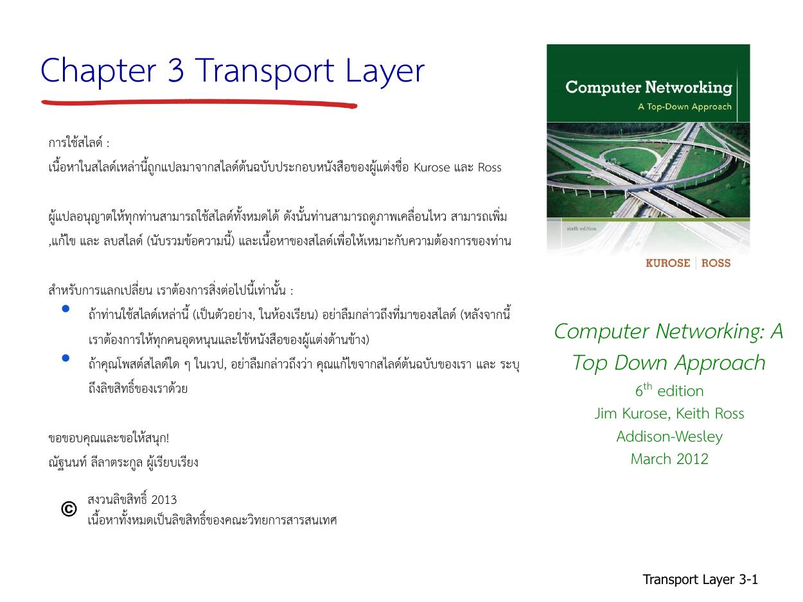
คลิกภาพเพื่อเปิดขยาย
อ่านข้อความต้นฉบับที่สกัดได้ (ไทย/อังกฤษตามไฟล์) Chapter 3 Transport Layer
การใช้สไลด์ :
เนื้อหาในสไลด์เหล่านี้ถูกแปลมาจากสไลด์ต้นฉบับประกอบหนังสือของผู้แต่งชื่อ Kurose และ Ross
ผู้แปลอนุญาตให้ทุกท่านสามารถใช้สไลด์ทั้งหมดได้ ดังนั้นท่านสามารถดูภาพเคลื่อนไหว สามารถเพิ่ม
,แก้ไข และ ลบสไลด์ (นับรวมข้อความนี้) และเนื้อหาของสไลด์เพื่อให้เหมาะกับความต้องการของท่าน
สาหรับการแลกเปลี่ยน เราต้องการสิ่งต่อไปนี้เท่านั้น :
• ถ้าท่านใช้สไลด์เหล่านี้ (เป็นตัวอย่าง, ในห้องเรียน) อย่าลืมกล่าวถึงที่มาของสไลด์ (หลังจากนี้
เราต้องการให้ทุกคนอุดหนุนและใช้หนังสือของผู้แต่งด้านข้าง) Computer Networking: A
• ถ้าคุณโพสต์สไลด์ใด ๆ ในเวป, อย่าลืมกล่าวถึงว่า คุณแก้ไขจากสไลด์ต้นฉบับของเรา และ ระบุ Top Down Approach
ถึงลิขสิทธิ์ของเราด้วย 6th edition
Jim Kurose, Keith Ross
ขอขอบคุณและขอให้สนุก! Addison-Wesley
ณัฐนนท์ ลีลาตระกูล ผู้เรียบเรียง March 2012
สงวนลิขสิทธิ์ 2013
เนื้อหาทั้งหมดเป็นลิขสิทธิ์ของคณะวิทยการสารสนเทศ
Transport Layer 3-1 ทบทวนภาษาไทย: 351 บท 3: Reliable Transfer และ TCP แบบทำโจทย์ Data Link Control และ Reliable Transfer UDP, TCP และ SCTP Congestion Control และ Quality of Service
กลับสารบัญ ↑ หน้า 2 — Chapter 3: Transport Layer ดูภาพต้นฉบับหน้า 2 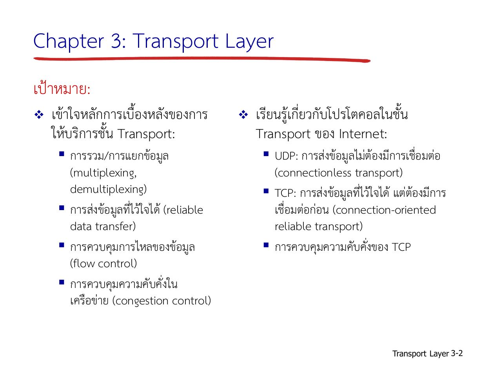
คลิกภาพเพื่อเปิดขยาย
อ่านข้อความต้นฉบับที่สกัดได้ (ไทย/อังกฤษตามไฟล์) Chapter 3: Transport Layer
เป้าหมาย:
เข้าใจหลักการเบื้องหลังของการ เรียนรู้เกี่ยวกับโปรโตคอลในชั้น
ให้บริการชั้น Transport: Transport ของ Internet:
การรวม/การแยกข้อมูล UDP: การส่งข้อมูลไม่ต้องมีการเชื่อมต่อ
(multiplexing, (connectionless transport)
demultiplexing) TCP: การส่งข้อมูลที่ไว้ใจได้ แต่ต้องมีการ
การส่งข้อมูลที่ไว้ใจได้ (reliable เชื่อมต่อก่อน (connection-oriented
data transfer) reliable transport)
การควบคุมการไหลของข้อมูล การควบคุมความคับคัง่ ของ TCP
(flow control)
การควบคุมความคับคัง่ ใน
เครือข่าย (congestion control)
Transport Layer 3-2 ทบทวนภาษาไทย: 351 บท 3: Reliable Transfer และ TCP แบบทำโจทย์ Data Link Control และ Reliable Transfer UDP, TCP และ SCTP Congestion Control และ Quality of Service
กลับสารบัญ ↑ หน้า 3 — Chapter 3 Outline ดูภาพต้นฉบับหน้า 3 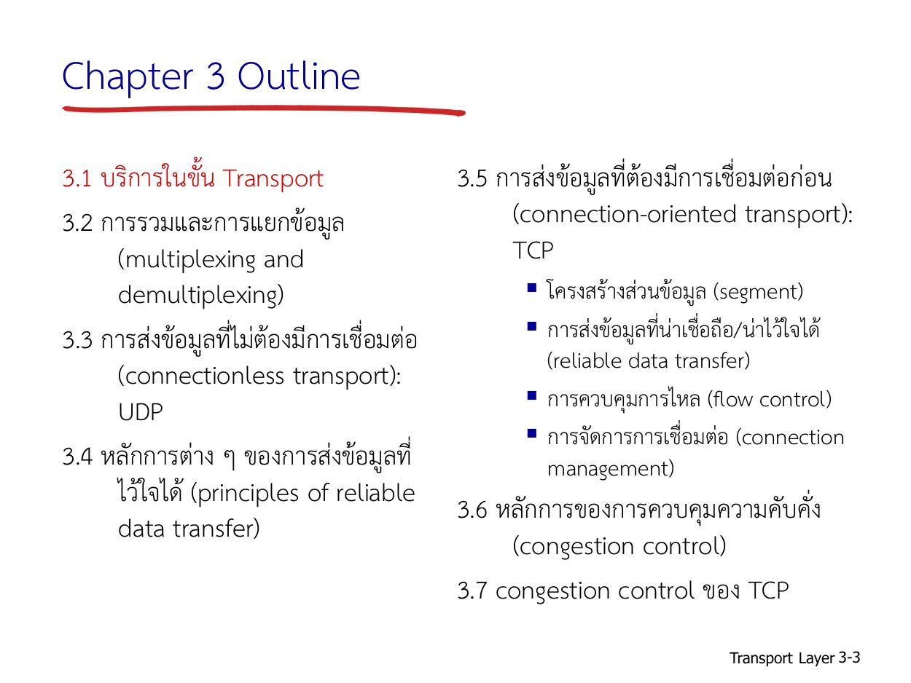
คลิกภาพเพื่อเปิดขยาย
อ่านข้อความต้นฉบับที่สกัดได้ (ไทย/อังกฤษตามไฟล์) Chapter 3 Outline
3.1 บริการในขั้น Transport 3.5 การส่งข้อมูลที่ต้องมีการเชื่อมต่อก่อน
3.2 การรวมและการแยกข้อมูล (connection-oriented transport):
(multiplexing and TCP
demultiplexing) โครงสร้างส่วนข้อมูล (segment)
3.3 การส่งข้อมูลที่ไม่ต้องมีการเชื่อมต่อ การส่งข้อมูลที่น่าเชื่อถือ/น่าไว้ใจได้
(reliable data transfer)
(connectionless transport):
UDP การควบคุมการไหล (flow control)
การจัดการการเชื่อมต่อ (connection
3.4 หลักการต่าง ๆ ของการส่งข้อมูลที่ management)
ไว้ใจได้ (principles of reliable 3.6 หลักการของการควบคุมความคับคั่ง
data transfer) (congestion control)
3.7 congestion control ของ TCP
Transport Layer 3-3 ทบทวนภาษาไทย: 351 บท 3: Reliable Transfer และ TCP แบบทำโจทย์ Data Link Control และ Reliable Transfer UDP, TCP และ SCTP Congestion Control และ Quality of Service
กลับสารบัญ ↑ หน้า 4 — Transport services and protocols ดูภาพต้นฉบับหน้า 4 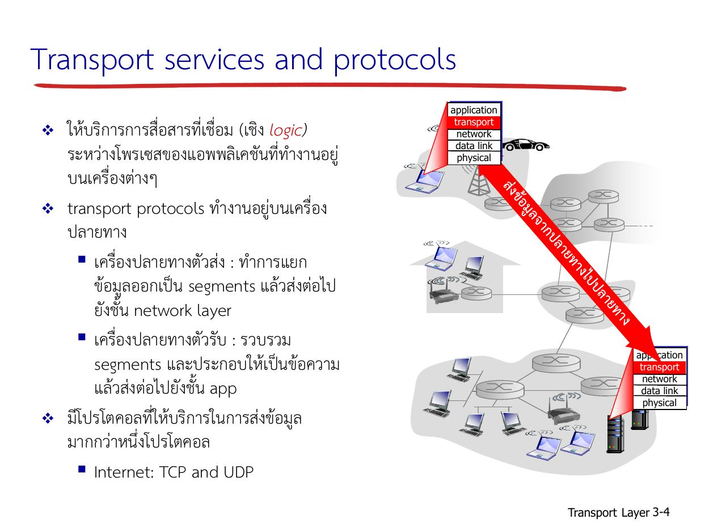
คลิกภาพเพื่อเปิดขยาย
อ่านข้อความต้นฉบับที่สกัดได้ (ไทย/อังกฤษตามไฟล์) Transport services and protocols
application
transport
ให้บริการการสื่อสารที่เชื่อม (เชิง logic) network
data link
ระหว่างโพรเซสของแอพพลิเคชันที่ทางานอยู่ physical
บนเครื่องต่างๆ
transport protocols ทางานอยู่บนเครื่อง
ปลายทาง
เครื่องปลายทางตัวส่ง : ทาการแยก
ข้อมูลออกเป็น segments แล้วส่งต่อไป
ยังชั้น network layer
เครื่องปลายทางตัวรับ : รวบรวม
application
segments และประกอบให้เป็นข้อความ transport
network
แล้วส่งต่อไปยังชั้น app data link
physical
มีโปรโตคอลที่ให้บริการในการส่งข้อมูล
มากกว่าหนึ่งโปรโตคอล
Internet: TCP and UDP
Transport Layer 3-4 ทบทวนภาษาไทย: 351 บท 3: Reliable Transfer และ TCP แบบทำโจทย์ Data Link Control และ Reliable Transfer UDP, TCP และ SCTP Congestion Control และ Quality of Service
กลับสารบัญ ↑ หน้า 5 — ชัน้ Transport vs. ชัน้ Network ดูภาพต้นฉบับหน้า 5 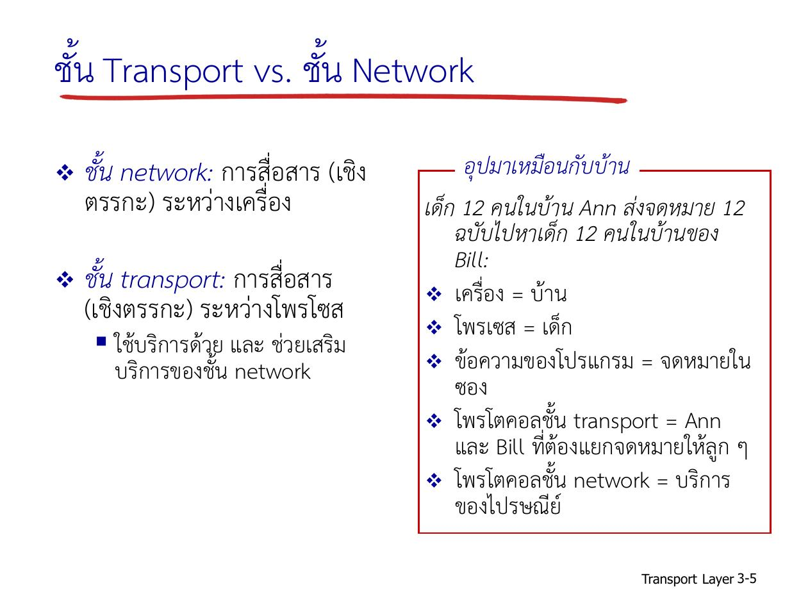
คลิกภาพเพื่อเปิดขยาย
อ่านข้อความต้นฉบับที่สกัดได้ (ไทย/อังกฤษตามไฟล์) ชัน้ Transport vs. ชัน้ Network
ชั้น network: การสื่อสาร (เชิง อุปมาเหมือนกับบ้าน
ตรรกะ) ระหว่างเครื่อง เด็ก 12 คนในบ้าน Ann ส่งจดหมาย 12
ฉบับไปหาเด็ก 12 คนในบ้านของ
Bill:
ชั้น transport: การสื่อสาร
เครื่อง = บ้าน
(เชิงตรรกะ) ระหว่างโพรโซส โพรเซส = เด็ก
ใช้บริการด้วย และ ช่วยเสริม
ข้อความของโปรแกรม = จดหมายใน
บริการของชั้น network
ซอง
โพรโตคอลชั้น transport = Ann
และ Bill ที่ต้องแยกจดหมายให้ลูก ๆ
โพรโตคอลชั้น network = บริการ
ของไปรษณีย์
Transport Layer 3-5 ทบทวนภาษาไทย: 351 บท 3: Reliable Transfer และ TCP แบบทำโจทย์ Data Link Control และ Reliable Transfer UDP, TCP และ SCTP Congestion Control และ Quality of Service
กลับสารบัญ ↑ หน้า 6 — โปรโตคอลชั้นทรานสปอร์ตของอินเตอร์เน็ต ดูภาพต้นฉบับหน้า 6 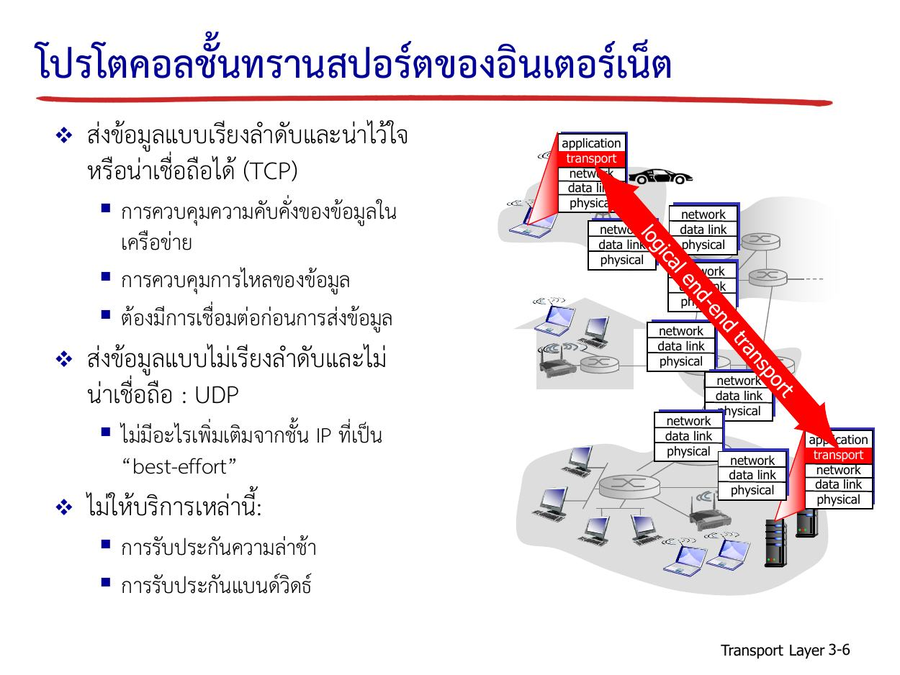
คลิกภาพเพื่อเปิดขยาย
อ่านข้อความต้นฉบับที่สกัดได้ (ไทย/อังกฤษตามไฟล์) โปรโตคอลชั้นทรานสปอร์ตของอินเตอร์เน็ต
ส่งข้อมูลแบบเรียงลาดับและน่าไว้ใจ application
หรือน่าเชื่อถือได้ (TCP) transport
network
data link
การควบคุมความคับคัง่ ของข้อมูลใน physical
network
data link
network
เครือข่าย data link
physical
physical
การควบคุมการไหลของข้อมูล network
data link
physical
ต้องมีการเชื่อมต่อก่อนการส่งข้อมูล network
ส่งข้อมูลแบบไม่เรียงลาดับและไม่
data link
physical
network
น่าเชื่อถือ : UDP data link
physical
network
ไม่มีอะไรเพิ่มเติมจากชั้น IP ที่เป็น data link
physical
application
transport
“best-effort” network
data link network
physical data link
ไม่ให้บริการเหล่านี้:
physical
การรับประกันความล่าช้า
การรับประกันแบนด์วิดธ์
Transport Layer 3-6 ทบทวนภาษาไทย: 351 บท 3: Reliable Transfer และ TCP แบบทำโจทย์ Data Link Control และ Reliable Transfer UDP, TCP และ SCTP Congestion Control และ Quality of Service
กลับสารบัญ ↑ หน้า 7 — Chapter 3 Outline ดูภาพต้นฉบับหน้า 7 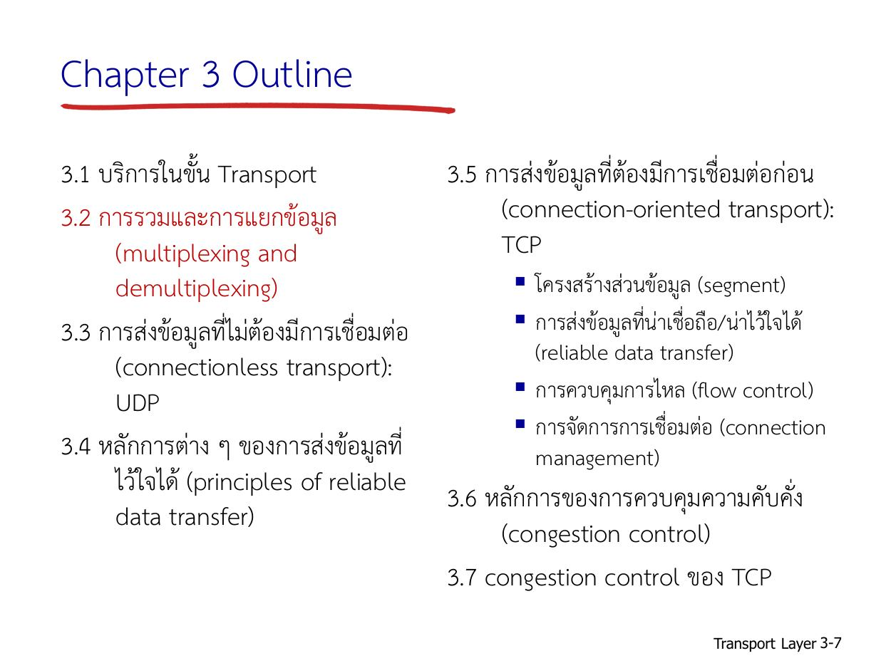
คลิกภาพเพื่อเปิดขยาย
อ่านข้อความต้นฉบับที่สกัดได้ (ไทย/อังกฤษตามไฟล์) Chapter 3 Outline
3.1 บริการในขั้น Transport 3.5 การส่งข้อมูลที่ต้องมีการเชื่อมต่อก่อน
3.2 การรวมและการแยกข้อมูล (connection-oriented transport):
(multiplexing and TCP
demultiplexing) โครงสร้างส่วนข้อมูล (segment)
3.3 การส่งข้อมูลที่ไม่ต้องมีการเชื่อมต่อ การส่งข้อมูลที่น่าเชื่อถือ/น่าไว้ใจได้
(reliable data transfer)
(connectionless transport):
UDP การควบคุมการไหล (flow control)
การจัดการการเชื่อมต่อ (connection
3.4 หลักการต่าง ๆ ของการส่งข้อมูลที่ management)
ไว้ใจได้ (principles of reliable 3.6 หลักการของการควบคุมความคับคั่ง
data transfer) (congestion control)
3.7 congestion control ของ TCP
Transport Layer 3-7 ทบทวนภาษาไทย: 351 บท 3: Reliable Transfer และ TCP แบบทำโจทย์ Data Link Control และ Reliable Transfer UDP, TCP และ SCTP Congestion Control และ Quality of Service
กลับสารบัญ ↑ หน้า 8 — การรวมและแยกข้ อมูล (Multiplexing/demultiplexing) ดูภาพต้นฉบับหน้า 8 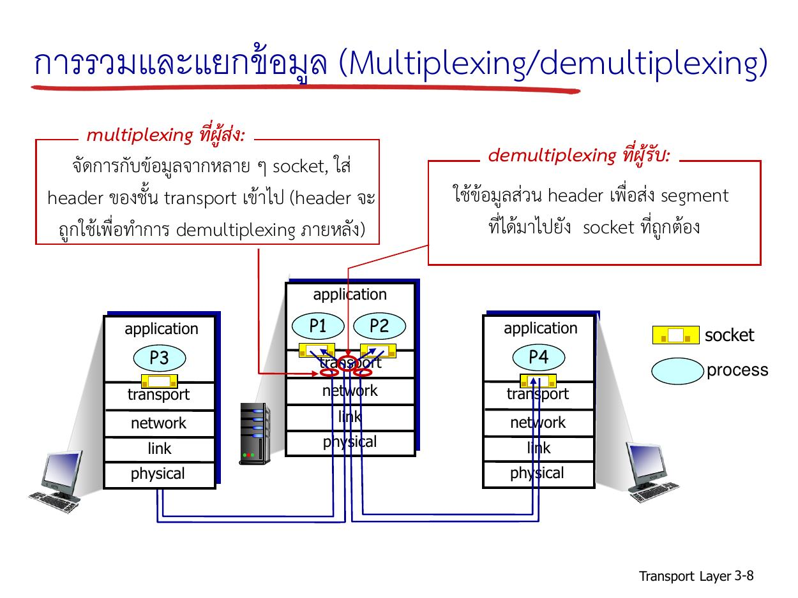
คลิกภาพเพื่อเปิดขยาย
อ่านข้อความต้นฉบับที่สกัดได้ (ไทย/อังกฤษตามไฟล์) การรวมและแยกข้ อมูล (Multiplexing/demultiplexing)
multiplexing ที่ผู้ส่ง:
จัดการกับข้อมูลจากหลาย ๆ socket, ใส่ demultiplexing ที่ผู้รับ:
header ของชั้น transport เข้าไป (header จะ ใช้ข้อมูลส่วน header เพื่อส่ง segment
ถูกใช้เพื่อทาการ demultiplexing ภายหลัง) ที่ได้มาไปยัง socket ที่ถูกต้อง
application
application P1 P2 application socket
P3 transport P4
process
transport network transport
network link network
link physical link
physical physical
Transport Layer 3-8 ทบทวนภาษาไทย: 351 บท 3: Reliable Transfer และ TCP แบบทำโจทย์ Data Link Control และ Reliable Transfer UDP, TCP และ SCTP Congestion Control และ Quality of Service
กลับสารบัญ ↑ หน้า 9 — ทา demultiplexing อย่างไร ดูภาพต้นฉบับหน้า 9 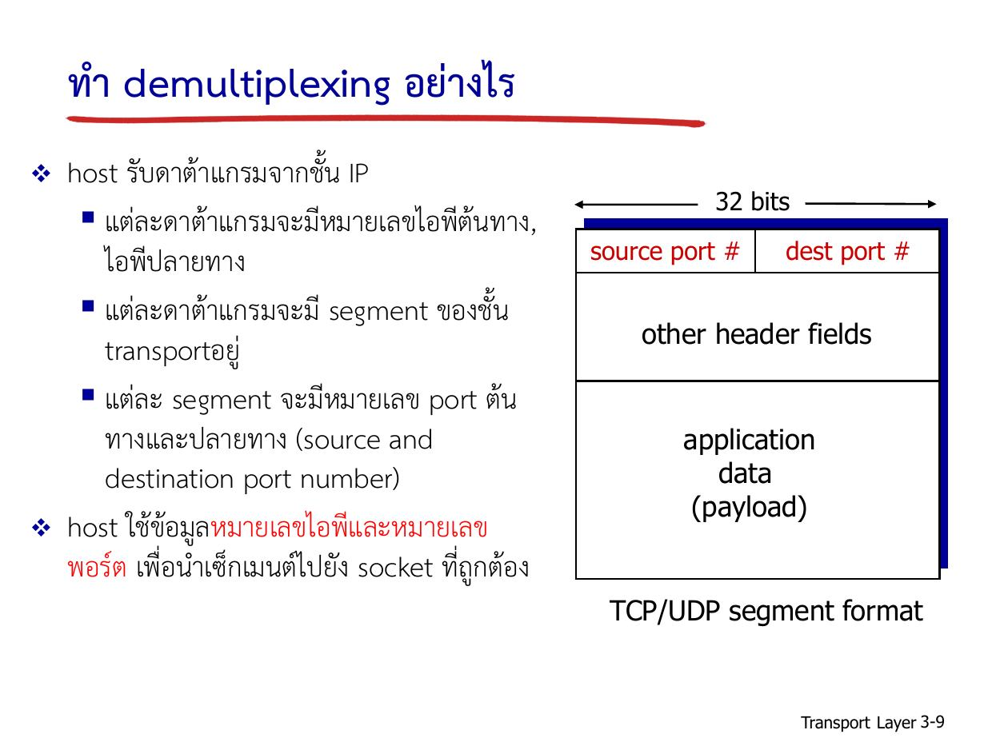
คลิกภาพเพื่อเปิดขยาย
อ่านข้อความต้นฉบับที่สกัดได้ (ไทย/อังกฤษตามไฟล์) ทา demultiplexing อย่างไร
host รับดาต้าแกรมจากชั้น IP
32 bits
แต่ละดาต้าแกรมจะมีหมายเลขไอพีต้นทาง,
ไอพีปลายทาง source port # dest port #
แต่ละดาต้าแกรมจะมี segment ของชั้น
other header fields
transportอยู่
แต่ละ segment จะมีหมายเลข port ต้น
ทางและปลายทาง (source and application
destination port number) data
(payload)
host ใช้ข้อมูลหมายเลขไอพีและหมายเลข
พอร์ต เพื่อนาเซ็กเมนต์ไปยัง socket ที่ถูกต้อง
TCP/UDP segment format
Transport Layer 3-9 ทบทวนภาษาไทย: 351 บท 3: Reliable Transfer และ TCP แบบทำโจทย์ Data Link Control และ Reliable Transfer UDP, TCP และ SCTP Congestion Control และ Quality of Service
กลับสารบัญ ↑ หน้า 10 — demultiplexing กรณีที่ไม่มีการเชื่อมต่อ (Connectionless) ดูภาพต้นฉบับหน้า 10 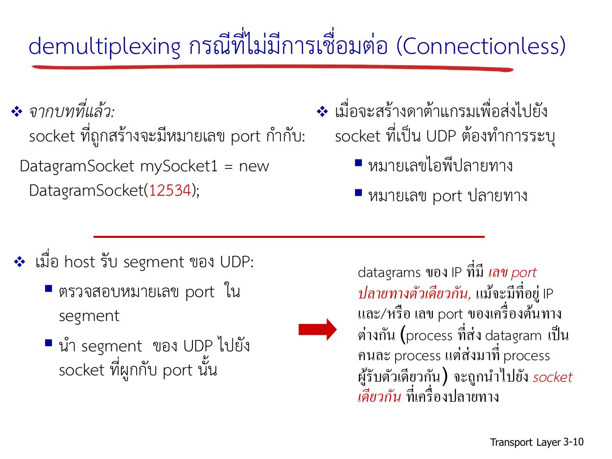
คลิกภาพเพื่อเปิดขยาย
อ่านข้อความต้นฉบับที่สกัดได้ (ไทย/อังกฤษตามไฟล์) demultiplexing กรณีที่ไม่มีการเชื่อมต่อ (Connectionless)
จากบทที่แล้ว: เมื่อจะสร้างดาต้าแกรมเพื่อส่งไปยัง
socket ที่ถูกสร้างจะมีหมายเลข port กากับ: socket ที่เป็น UDP ต้องทาการระบุ
DatagramSocket mySocket1 = new หมายเลขไอพีปลายทาง
DatagramSocket(12534); หมายเลข port ปลายทาง
เมื่อ host รับ segment ของ UDP:
datagrams ของ IP ที่มี เลข port
ตรวจสอบหมายเลข port ใน ปลายทางตัวเดียวกัน, แม้จะมีที่อยู่ IP
segment และ/หรื อ เลข port ของเครื่ องต้นทาง
ต่างกัน (process ที่ส่ง datagram เป็ น
นา segment ของ UDP ไปยัง คนละ process แต่ส่งมาที่ process
socket ที่ผูกกับ port นั้น ผูร้ ับตัวเดียวกัน) จะถูกนาไปยัง socket
เดียวกัน ที่เครื่ องปลายทาง
Transport Layer 3-10 ทบทวนภาษาไทย: 351 บท 3: Reliable Transfer และ TCP แบบทำโจทย์ Data Link Control และ Reliable Transfer UDP, TCP และ SCTP Congestion Control และ Quality of Service
กลับสารบัญ ↑ หน้า 11 — Connectionless demux: example ดูภาพต้นฉบับหน้า 11 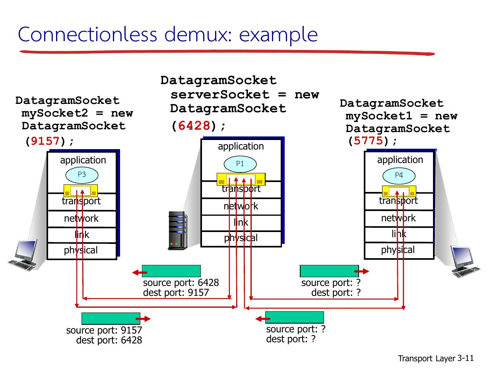
คลิกภาพเพื่อเปิดขยาย
อ่านข้อความต้นฉบับที่สกัดได้ (ไทย/อังกฤษตามไฟล์) Connectionless demux: example
DatagramSocket
DatagramSocket serverSocket = new
DatagramSocket DatagramSocket
mySocket2 = new mySocket1 = new
DatagramSocket (6428); DatagramSocket
(9157); application
(5775);
application P1 application
P3 P4
transport
transport transport
network
network link network
link physical link
physical physical
source port: 6428 source port: ?
dest port: 9157 dest port: ?
source port: 9157 source port: ?
dest port: 6428 dest port: ?
Transport Layer 3-11 ทบทวนภาษาไทย: 351 บท 3: Reliable Transfer และ TCP แบบทำโจทย์ Data Link Control และ Reliable Transfer UDP, TCP และ SCTP Congestion Control และ Quality of Service
กลับสารบัญ ↑ หน้า 12 — demux กรณีที่มีการเชื่อมต่อ (Connection-oriented) ดูภาพต้นฉบับหน้า 12 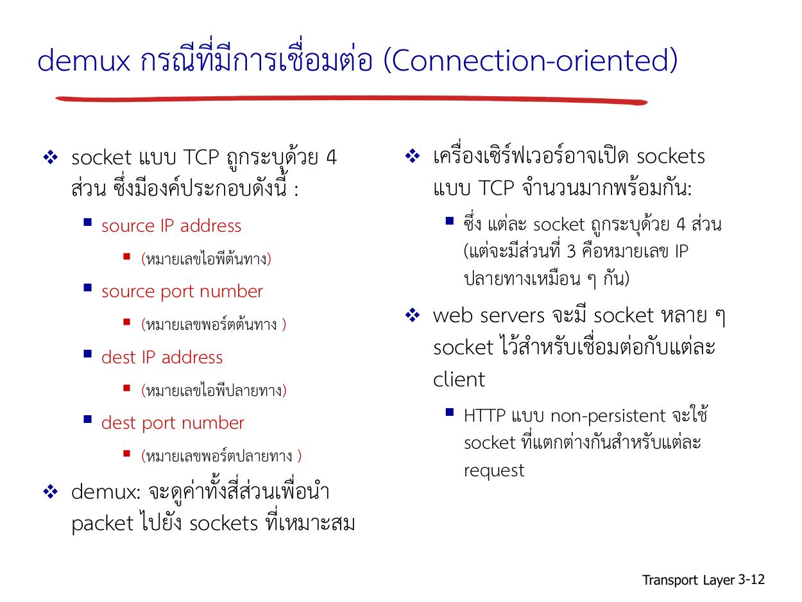
คลิกภาพเพื่อเปิดขยาย
อ่านข้อความต้นฉบับที่สกัดได้ (ไทย/อังกฤษตามไฟล์) demux กรณีที่มีการเชื่อมต่อ (Connection-oriented)
socket แบบ TCP ถูกระบุด้วย 4 เครื่องเซิร์ฟเวอร์อาจเปิด sockets
ส่วน ซึ่งมีองค์ประกอบดังนี้ : แบบ TCP จานวนมากพร้อมกัน:
source IP address ซึ่ง แต่ละ socket ถูกระบุด้วย 4 ส่วน
(หมายเลขไอพีต้นทาง) (แต่จะมีส่วนที่ 3 คือหมายเลข IP
source port number ปลายทางเหมือน ๆ กัน)
(หมายเลขพอร์ตต้นทาง ) web servers จะมี socket หลาย ๆ
dest IP address socket ไว้สาหรับเชื่อมต่อกับแต่ละ
(หมายเลขไอพีปลายทาง) client
dest port number HTTP แบบ non-persistent จะใช้
(หมายเลขพอร์ตปลายทาง )
socket ที่แตกต่างกันสาหรับแต่ละ
request
demux: จะดูค่าทั้งสี่ส่วนเพื่อนา
packet ไปยัง sockets ที่เหมาะสม
Transport Layer 3-12 ทบทวนภาษาไทย: 351 บท 3: Reliable Transfer และ TCP แบบทำโจทย์ Data Link Control และ Reliable Transfer UDP, TCP และ SCTP Congestion Control และ Quality of Service
กลับสารบัญ ↑ หน้า 13 — Connection-oriented demux: example ดูภาพต้นฉบับหน้า 13 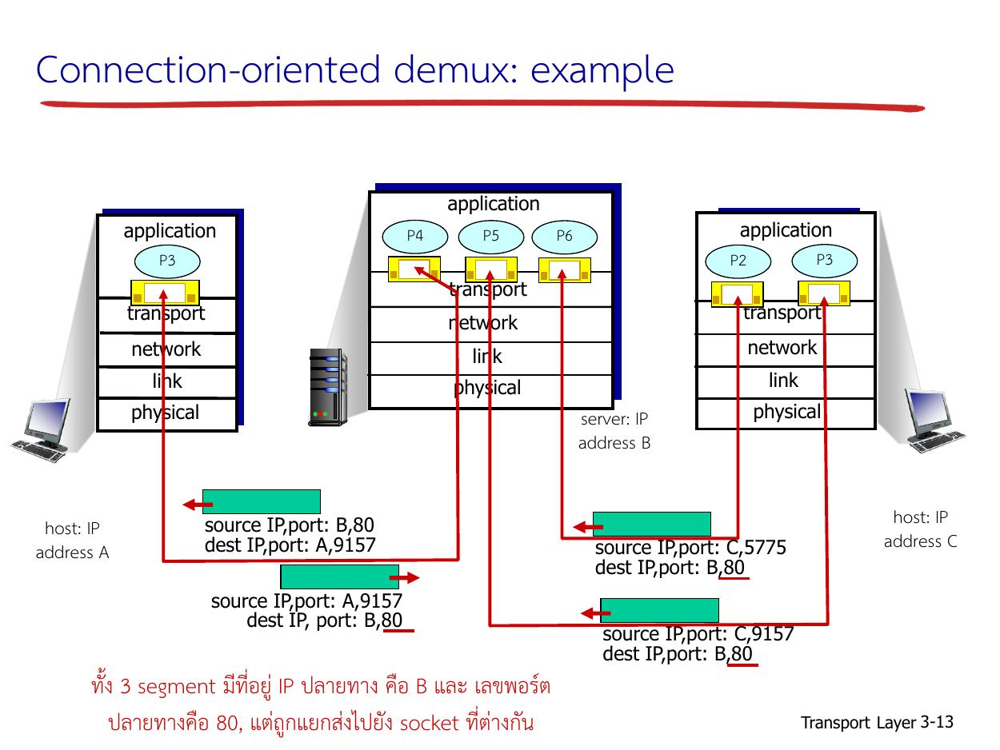
คลิกภาพเพื่อเปิดขยาย
อ่านข้อความต้นฉบับที่สกัดได้ (ไทย/อังกฤษตามไฟล์) Connection-oriented demux: example
application
application P4 P5 P6 application
P3 P2 P3
transport
transport transport
network
network link network
link physical link
physical server: IP physical
address B
host: IP source IP,port: B,80 host: IP
address A dest IP,port: A,9157 source IP,port: C,5775 address C
dest IP,port: B,80
source IP,port: A,9157
dest IP, port: B,80
source IP,port: C,9157
dest IP,port: B,80
ทั้ง 3 segment มีที่อยู่ IP ปลายทาง คือ B และ เลขพอร์ต
ปลายทางคือ 80, แต่ถูกแยกส่งไปยัง socket ที่ต่างกัน Transport Layer 3-13 ทบทวนภาษาไทย: 351 บท 3: Reliable Transfer และ TCP แบบทำโจทย์ Data Link Control และ Reliable Transfer UDP, TCP และ SCTP Congestion Control และ Quality of Service
กลับสารบัญ ↑ หน้า 14 — Connection-oriented demux: example ดูภาพต้นฉบับหน้า 14 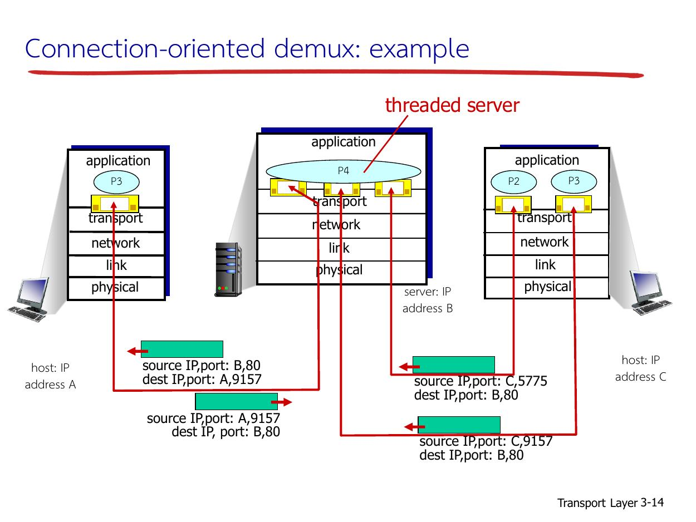
คลิกภาพเพื่อเปิดขยาย
อ่านข้อความต้นฉบับที่สกัดได้ (ไทย/อังกฤษตามไฟล์) Connection-oriented demux: example
threaded server
application
application application
P4
P3 P2 P3
transport
transport transport
network
network link network
link physical link
physical server: IP physical
address B
host: IP source IP,port: B,80 host: IP
address A dest IP,port: A,9157 source IP,port: C,5775 address C
dest IP,port: B,80
source IP,port: A,9157
dest IP, port: B,80
source IP,port: C,9157
dest IP,port: B,80
Transport Layer 3-14 ทบทวนภาษาไทย: 351 บท 3: Reliable Transfer และ TCP แบบทำโจทย์ Data Link Control และ Reliable Transfer UDP, TCP และ SCTP Congestion Control และ Quality of Service
กลับสารบัญ ↑ หน้า 15 — Chapter 3 Outline ดูภาพต้นฉบับหน้า 15 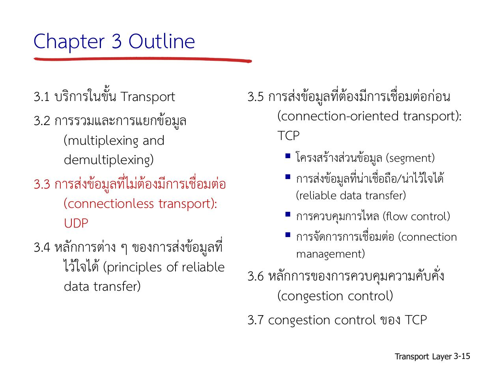
คลิกภาพเพื่อเปิดขยาย
อ่านข้อความต้นฉบับที่สกัดได้ (ไทย/อังกฤษตามไฟล์) Chapter 3 Outline
3.1 บริการในขั้น Transport 3.5 การส่งข้อมูลที่ต้องมีการเชื่อมต่อก่อน
3.2 การรวมและการแยกข้อมูล (connection-oriented transport):
(multiplexing and TCP
demultiplexing) โครงสร้างส่วนข้อมูล (segment)
3.3 การส่งข้อมูลที่ไม่ต้องมีการเชื่อมต่อ การส่งข้อมูลที่น่าเชื่อถือ/น่าไว้ใจได้
(reliable data transfer)
(connectionless transport):
UDP การควบคุมการไหล (flow control)
การจัดการการเชื่อมต่อ (connection
3.4 หลักการต่าง ๆ ของการส่งข้อมูลที่ management)
ไว้ใจได้ (principles of reliable 3.6 หลักการของการควบคุมความคับคั่ง
data transfer) (congestion control)
3.7 congestion control ของ TCP
Transport Layer 3-15 ทบทวนภาษาไทย: 351 บท 3: Reliable Transfer และ TCP แบบทำโจทย์ Data Link Control และ Reliable Transfer UDP, TCP และ SCTP Congestion Control และ Quality of Service
กลับสารบัญ ↑ หน้า 16 — UDP: User Datagram Protocol [RFC 768] ดูภาพต้นฉบับหน้า 16 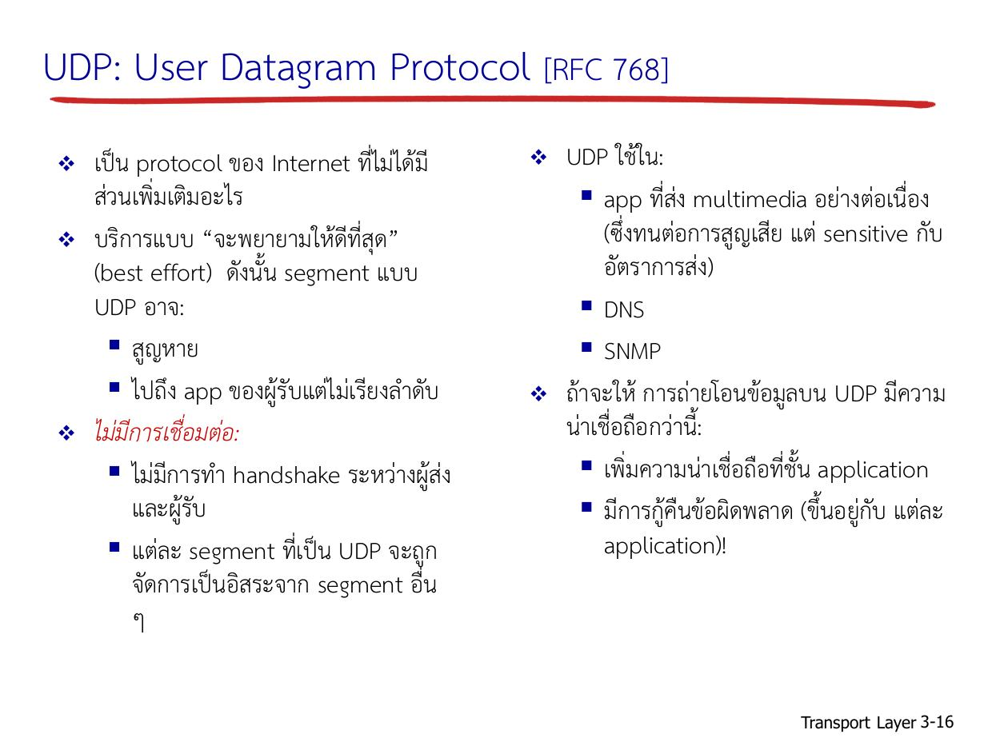
คลิกภาพเพื่อเปิดขยาย
อ่านข้อความต้นฉบับที่สกัดได้ (ไทย/อังกฤษตามไฟล์) UDP: User Datagram Protocol [RFC 768]
เป็น protocol ของ Internet ที่ไม่ได้มี UDP ใช้ใน:
ส่วนเพิ่มเติมอะไร app ที่ส่ง multimedia อย่างต่อเนื่อง
บริการแบบ “จะพยายามให้ดีที่สุด” (ซึ่งทนต่อการสูญเสีย แต่ sensitive กับ
(best effort) ดังนั้น segment แบบ อัตราการส่ง)
UDP อาจ: DNS
สูญหาย SNMP
ไปถึง app ของผู้รับแต่ไม่เรียงลาดับ ถ้าจะให้ การถ่ายโอนข้อมูลบน UDP มีความ
ไม่มีการเชื่อมต่อ: น่าเชื่อถือกว่านี:้
ไม่มีการทา handshake ระหว่างผู้ส่ง เพิ่มความน่าเชื่อถือที่ชั้น application
และผู้รับ มีการกู้คืนข้อผิดพลาด (ขึ้นอยู่กับ แต่ละ
แต่ละ segment ที่เป็น UDP จะถูก application)!
จัดการเป็นอิสระจาก segment อื่น
ๆ
Transport Layer 3-16 ทบทวนภาษาไทย: 351 บท 3: Reliable Transfer และ TCP แบบทำโจทย์ Data Link Control และ Reliable Transfer UDP, TCP และ SCTP Congestion Control และ Quality of Service
กลับสารบัญ ↑ หน้า 17 — UDP: ส่วนหัวของ segment (segment header) ดูภาพต้นฉบับหน้า 17 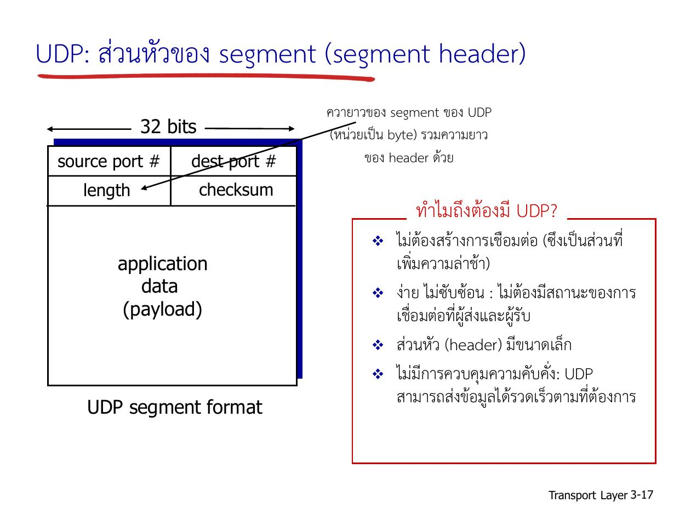
คลิกภาพเพื่อเปิดขยาย
อ่านข้อความต้นฉบับที่สกัดได้ (ไทย/อังกฤษตามไฟล์) UDP: ส่วนหัวของ segment (segment header)
ควายาวของ segment ของ UDP
32 bits (หน่วยเป็น byte) รวมความยาว
source port # dest port # ของ header ด้วย
length checksum
ทาไมถึงต้องมี UDP?
ไม่ต้องสร้างการเชื่อมต่อ (ซึ่งเป็นส่วนที่
application เพิ่มความล่าช้า)
data ง่าย ไม่ซับซ้อน : ไม่ต้องมีสถานะของการ
(payload) เชื่อมต่อที่ผู้ส่งและผู้รับ
ส่วนหัว (header) มีขนาดเล็ก
ไม่มีการควบคุมความคับคัง่ : UDP
UDP segment format
สามารถส่งข้อมูลได้รวดเร็วตามที่ต้องการ
Transport Layer 3-17 ทบทวนภาษาไทย: 351 บท 3: Reliable Transfer และ TCP แบบทำโจทย์ Data Link Control และ Reliable Transfer UDP, TCP และ SCTP Congestion Control และ Quality of Service
กลับสารบัญ ↑ หน้า 18 — checksum ของ UDP ดูภาพต้นฉบับหน้า 18 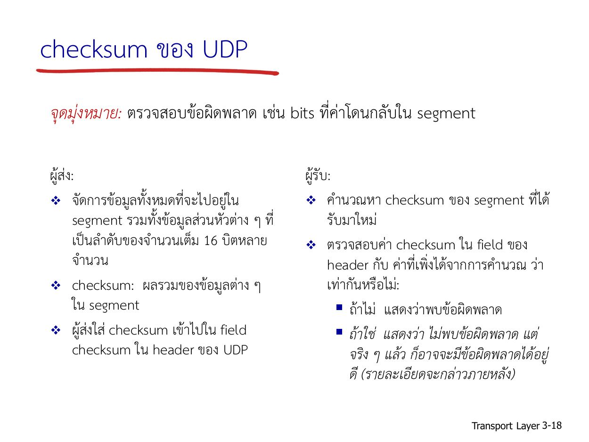
คลิกภาพเพื่อเปิดขยาย
อ่านข้อความต้นฉบับที่สกัดได้ (ไทย/อังกฤษตามไฟล์) checksum ของ UDP
จุดมุ่งหมาย: ตรวจสอบข้อผิดพลาด เช่น bits ที่ค่าโดนกลับใน segment
ผู้ส่ง: ผู้รับ:
จัดการข้อมูลทั้งหมดที่จะไปอยู่ใน คานวณหา checksum ของ segment ที่ได้
segment รวมทั้งข้อมูลส่วนหัวต่าง ๆ ที่ รับมาใหม่
เป็นลาดับของจานวนเต็ม 16 บิตหลาย ตรวจสอบค่า checksum ใน field ของ
จานวน header กับ ค่าที่เพิ่งได้จากการคานวณ ว่า
checksum: ผลรวมของข้อมูลต่าง ๆ เท่ากันหรือไม่:
ใน segment ถ้าไม่ แสดงว่าพบข้อผิดพลาด
ผู้ส่งใส่ checksum เข้าไปใน field ถ้าใช่ แสดงว่า ไม่พบข้อผิดพลาด แต่
checksum ใน header ของ UDP จริง ๆ แล้ว ก็อาจจะมีข้อผิดพลาดได้อยู่
ดี (รายละเอียดจะกล่าวภายหลัง)
Transport Layer 3-18 ทบทวนภาษาไทย: 351 บท 3: Reliable Transfer และ TCP แบบทำโจทย์ Data Link Control และ Reliable Transfer UDP, TCP และ SCTP Congestion Control และ Quality of Service
กลับสารบัญ ↑ หน้า 19 — Internet checksum: ตัวอย่าง ดูภาพต้นฉบับหน้า 19 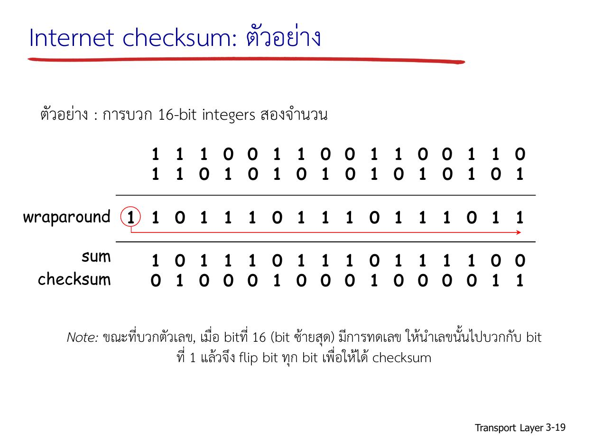
คลิกภาพเพื่อเปิดขยาย
อ่านข้อความต้นฉบับที่สกัดได้ (ไทย/อังกฤษตามไฟล์) Internet checksum: ตัวอย่าง
ตัวอย่าง : การบวก 16-bit integers สองจานวน
1 1 1 1 0 0 1 1 0 0 1 1 0 0 1 1 0
1 1 1 0 1 0 1 0 1 0 1 0 1 0 1 0 1
wraparound 1 1 0 1 1 1 0 1 1 1 0 1 1 1 0 1 1
sum 1 1 0 1 1 1 0 1 1 1 0 1 1 1 1 0 0
checksum 1 0 1 0 0 0 1 0 0 0 1 0 0 0 0 1 1
Note: ขณะที่บวกตัวเลข, เมื่อ bitที่ 16 (bit ซ้ายสุด) มีการทดเลข ให้นาเลขนั้นไปบวกกับ bit
ที่ 1 แล้วจึง flip bit ทุก bit เพื่อให้ได้ checksum
Transport Layer 3-19 ทบทวนภาษาไทย: 351 บท 3: Reliable Transfer และ TCP แบบทำโจทย์ Data Link Control และ Reliable Transfer UDP, TCP และ SCTP Congestion Control และ Quality of Service
กลับสารบัญ ↑ หน้า 20 — Chapter 3 Outline ดูภาพต้นฉบับหน้า 20 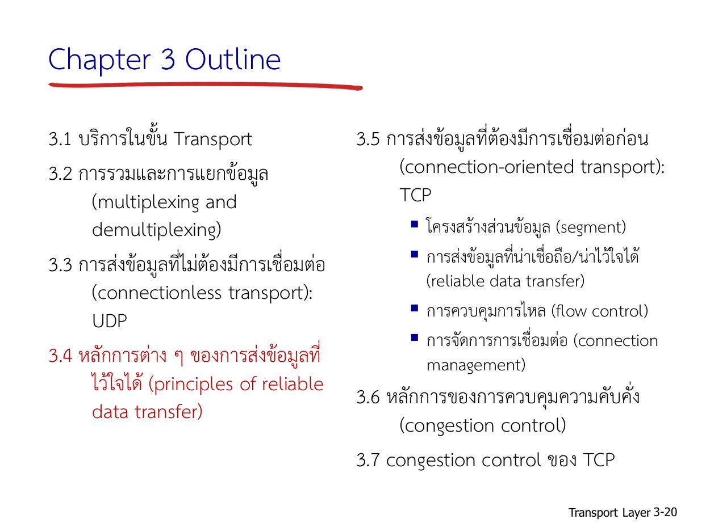
คลิกภาพเพื่อเปิดขยาย
อ่านข้อความต้นฉบับที่สกัดได้ (ไทย/อังกฤษตามไฟล์) Chapter 3 Outline
3.1 บริการในขั้น Transport 3.5 การส่งข้อมูลที่ต้องมีการเชื่อมต่อก่อน
3.2 การรวมและการแยกข้อมูล (connection-oriented transport):
(multiplexing and TCP
demultiplexing) โครงสร้างส่วนข้อมูล (segment)
3.3 การส่งข้อมูลที่ไม่ต้องมีการเชื่อมต่อ การส่งข้อมูลที่น่าเชื่อถือ/น่าไว้ใจได้
(reliable data transfer)
(connectionless transport):
UDP การควบคุมการไหล (flow control)
การจัดการการเชื่อมต่อ (connection
3.4 หลักการต่าง ๆ ของการส่งข้อมูลที่ management)
ไว้ใจได้ (principles of reliable 3.6 หลักการของการควบคุมความคับคั่ง
data transfer) (congestion control)
3.7 congestion control ของ TCP
Transport Layer 3-20 ทบทวนภาษาไทย: 351 บท 3: Reliable Transfer และ TCP แบบทำโจทย์ Data Link Control และ Reliable Transfer UDP, TCP และ SCTP Congestion Control และ Quality of Service
กลับสารบัญ ↑ หน้า 21 — Principles of reliable data transfer ดูภาพต้นฉบับหน้า 21 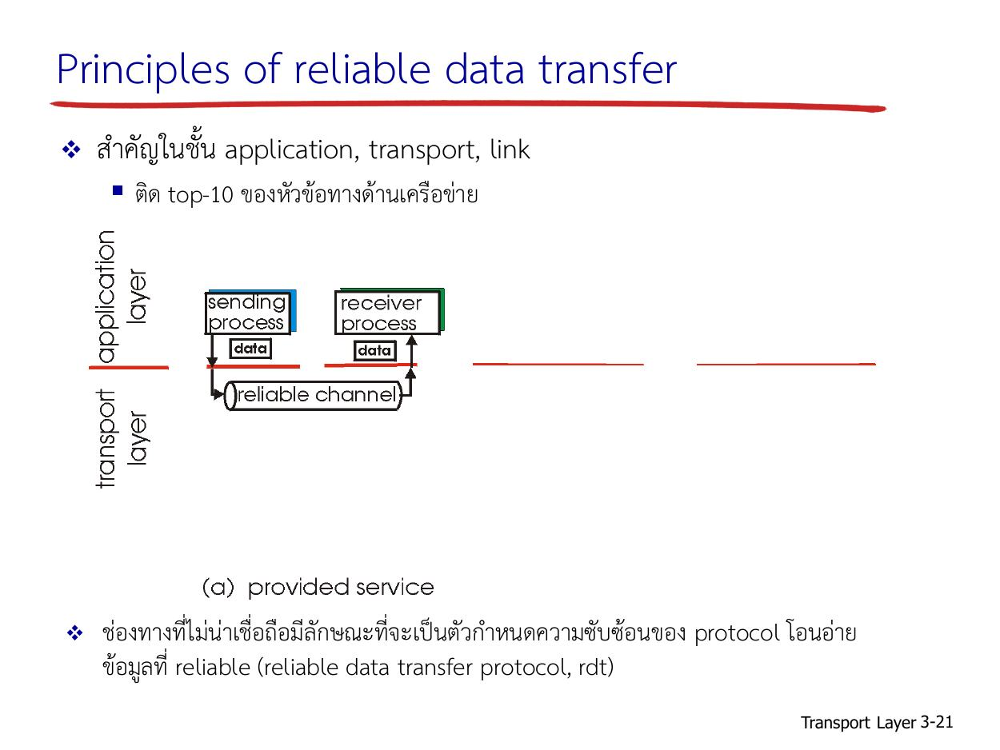
คลิกภาพเพื่อเปิดขยาย
อ่านข้อความต้นฉบับที่สกัดได้ (ไทย/อังกฤษตามไฟล์) Principles of reliable data transfer
สาคัญในชั้น application, transport, link
ติด top-10 ของหัวข้อทางด้านเครือข่าย
ช่องทางที่ไม่น่าเชื่อถือมีลักษณะที่จะเป็นตัวกาหนดความซับซ้อนของ protocol โอนอ่าย
ข้อมูลที่ reliable (reliable data transfer protocol, rdt)
Transport Layer 3-21 ทบทวนภาษาไทย: 351 บท 3: Reliable Transfer และ TCP แบบทำโจทย์ Data Link Control และ Reliable Transfer UDP, TCP และ SCTP Congestion Control และ Quality of Service
กลับสารบัญ ↑ หน้า 22 — หลักการของความน่าเชื่อถือ data transfer ดูภาพต้นฉบับหน้า 22 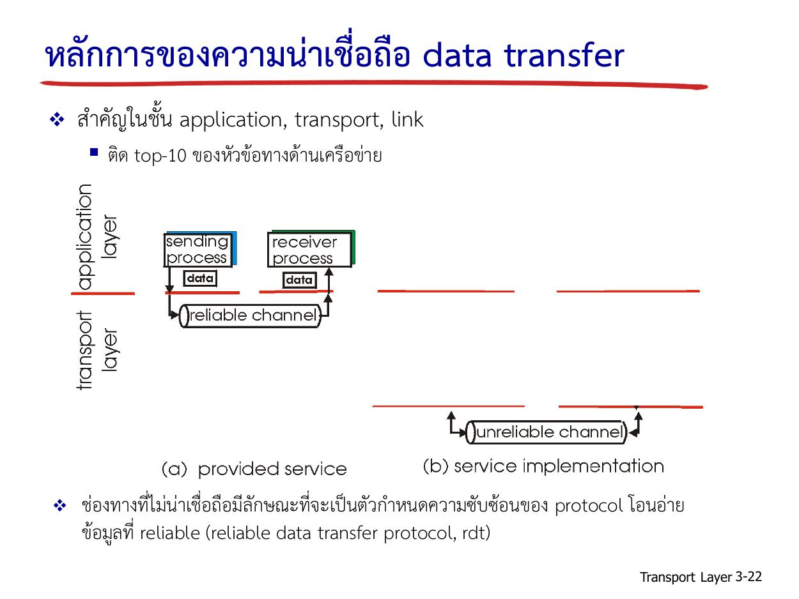
คลิกภาพเพื่อเปิดขยาย
อ่านข้อความต้นฉบับที่สกัดได้ (ไทย/อังกฤษตามไฟล์) หลักการของความน่าเชื่อถือ data transfer
สาคัญในชั้น application, transport, link
ติด top-10 ของหัวข้อทางด้านเครือข่าย
ช่องทางที่ไม่น่าเชื่อถือมีลักษณะที่จะเป็นตัวกาหนดความซับซ้อนของ protocol โอนอ่าย
ข้อมูลที่ reliable (reliable data transfer protocol, rdt)
Transport Layer 3-22 ทบทวนภาษาไทย: 351 บท 3: Reliable Transfer และ TCP แบบทำโจทย์ Data Link Control และ Reliable Transfer UDP, TCP และ SCTP Congestion Control และ Quality of Service
กลับสารบัญ ↑ หน้า 23 — หลักการของความน่าเชื่อถือ data transfer ดูภาพต้นฉบับหน้า 23 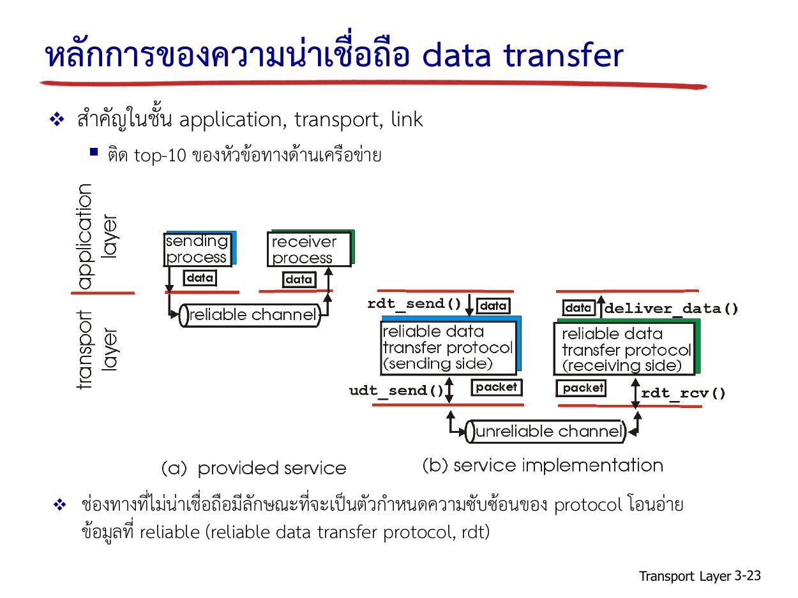
คลิกภาพเพื่อเปิดขยาย
อ่านข้อความต้นฉบับที่สกัดได้ (ไทย/อังกฤษตามไฟล์) หลักการของความน่าเชื่อถือ data transfer
สาคัญในชั้น application, transport, link
ติด top-10 ของหัวข้อทางด้านเครือข่าย
ช่องทางที่ไม่น่าเชื่อถือมีลักษณะที่จะเป็นตัวกาหนดความซับซ้อนของ protocol โอนอ่าย
ข้อมูลที่ reliable (reliable data transfer protocol, rdt)
Transport Layer 3-23 ทบทวนภาษาไทย: 351 บท 3: Reliable Transfer และ TCP แบบทำโจทย์ Data Link Control และ Reliable Transfer UDP, TCP และ SCTP Congestion Control และ Quality of Service
กลับสารบัญ ↑ หน้า 24 — Reliable data transfer: เริ่ มต้ น ดูภาพต้นฉบับหน้า 24 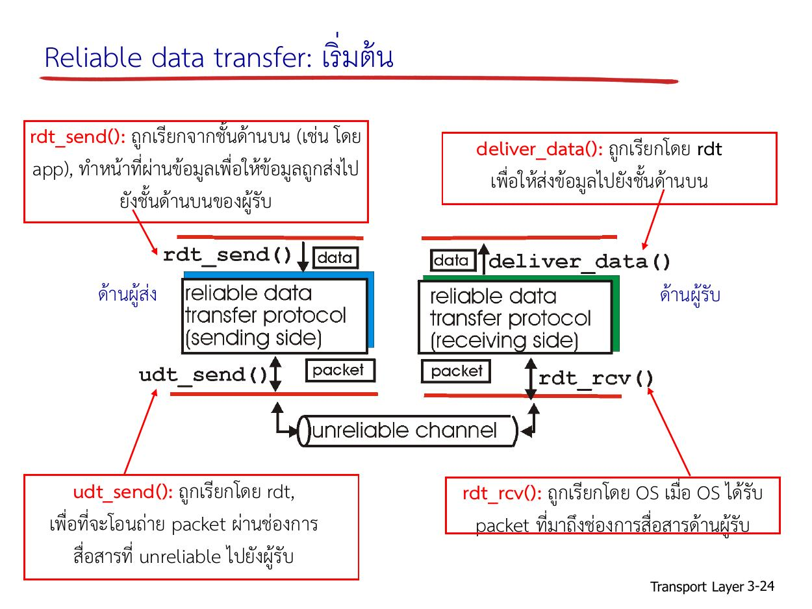
คลิกภาพเพื่อเปิดขยาย
อ่านข้อความต้นฉบับที่สกัดได้ (ไทย/อังกฤษตามไฟล์) Reliable data transfer: เริ่ มต้ น
rdt_send(): ถูกเรียกจากชั้นด้านบน (เช่น โดย deliver_data(): ถูกเรียกโดย rdt
app), ทาหน้าที่ผ่านข้อมูลเพื่อให้ข้อมูลถูกส่งไป เพื่อให้ส่งข้อมูลไปยังชั้นด้านบน
ยังชั้นด้านบนของผู้รับ
ด้านผู้ส่ง ด้านผู้รับ
udt_send(): ถูกเรียกโดย rdt, rdt_rcv(): ถูกเรียกโดย OS เมื่อ OS ได้รับ
เพื่อที่จะโอนถ่าย packet ผ่านช่องการ packet ที่มาถึงช่องการสื่อสารด้านผู้รับ
สื่อสารที่ unreliable ไปยังผู้รับ
Transport Layer 3-24 ทบทวนภาษาไทย: 351 บท 3: Reliable Transfer และ TCP แบบทำโจทย์ Data Link Control และ Reliable Transfer UDP, TCP และ SCTP Congestion Control และ Quality of Service
กลับสารบัญ ↑ หน้า 25 — Reliable data transfer: เริ่มต้น ดูภาพต้นฉบับหน้า 25 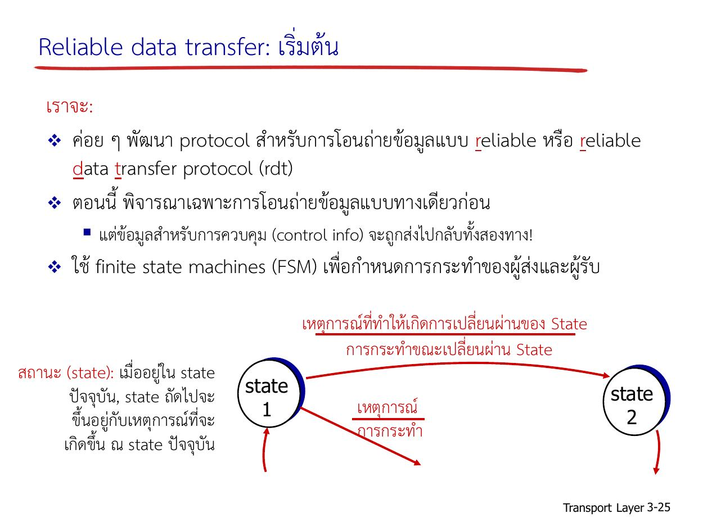
คลิกภาพเพื่อเปิดขยาย
อ่านข้อความต้นฉบับที่สกัดได้ (ไทย/อังกฤษตามไฟล์) Reliable data transfer: เริ่มต้น
เราจะ:
ค่อย ๆ พัฒนา protocol สาหรับการโอนถ่ายข้อมูลแบบ reliable หรือ reliable
data transfer protocol (rdt)
ตอนนี้ พิจารณาเฉพาะการโอนถ่ายข้อมูลแบบทางเดียวก่อน
แต่ข้อมูลสาหรับการควบคุม (control info) จะถูกส่งไปกลับทั้งสองทาง!
ใช้ finite state machines (FSM) เพื่อกาหนดการกระทาของผู้ส่งและผู้รับ
เหตุการณ์ที่ทาให้เกิดการเปลี่ยนผ่านของ State
การกระทาขณะเปลี่ยนผ่าน State
สถานะ (state): เมื่ออยู่ใน state
ปัจจุบัน, state ถัดไปจะ state state
1 เหตุการณ์ 2
ขึ้นอยู่กับเหตุการณ์ที่จะ การกระทา
เกิดขึ้น ณ state ปัจจุบัน
Transport Layer 3-25 ทบทวนภาษาไทย: 351 บท 3: Reliable Transfer และ TCP แบบทำโจทย์ Data Link Control และ Reliable Transfer UDP, TCP และ SCTP Congestion Control และ Quality of Service
กลับสารบัญ ↑ หน้า 26 — rdt1.0: การโอนถ่ายข้ อมูลแบบ reliable ผ่านช่องสัญญาณแบบ reliable ดูภาพต้นฉบับหน้า 26 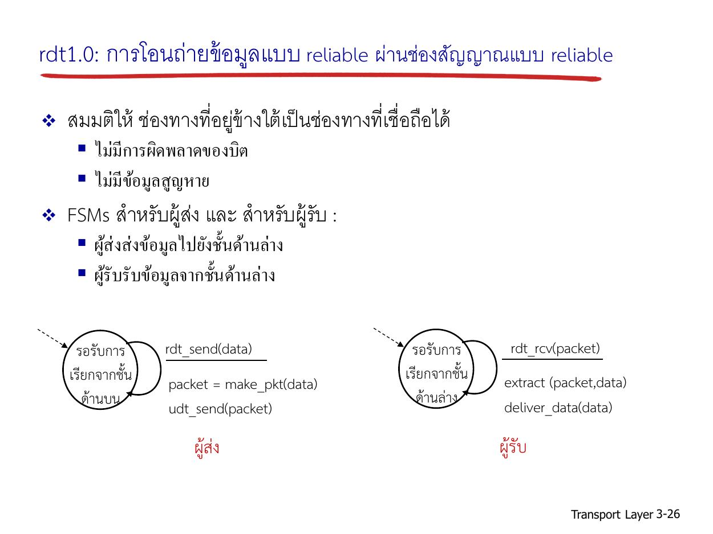
คลิกภาพเพื่อเปิดขยาย
อ่านข้อความต้นฉบับที่สกัดได้ (ไทย/อังกฤษตามไฟล์) rdt1.0: การโอนถ่ายข้ อมูลแบบ reliable ผ่านช่องสัญญาณแบบ reliable
สมมติให้ ช่องทางที่อยูข
่ ้ างใต้ เป็ นช่องทางที่เชื่อถือได้
ไม่มีการผิดพลาดของบิต
ไม่มีขอ้ มูลสูญหาย
FSMs สาหรับผู้สง่ และ สาหรับผู้รับ :
ผูส้ ่ งส่ งข้อมูลไปยังชั้นด้านล่าง
ผูร้ ับรับข้อมูลจากชั้นด้านล่าง
รอรับการ rdt_send(data) รอรับการ rdt_rcv(packet)
เรียกจากชั้น เรียกจากชั้น extract (packet,data)
packet = make_pkt(data)
ด้านบน ด้านล่าง deliver_data(data)
udt_send(packet)
ผู้ส่ง ผู้รับ
Transport Layer 3-26 ทบทวนภาษาไทย: 351 บท 3: Reliable Transfer และ TCP แบบทำโจทย์ Data Link Control และ Reliable Transfer UDP, TCP และ SCTP Congestion Control และ Quality of Service
กลับสารบัญ ↑ หน้า 27 — rdt2.0: ช่องทางการสือ่ สารที่มี bit errors ดูภาพต้นฉบับหน้า 27 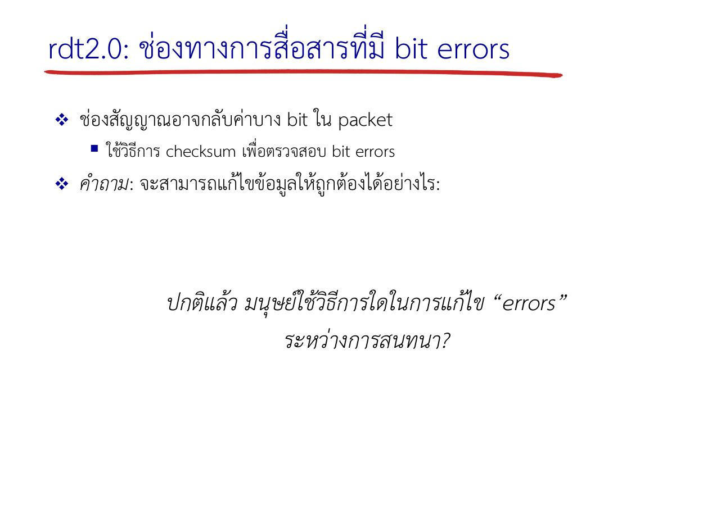
คลิกภาพเพื่อเปิดขยาย
อ่านข้อความต้นฉบับที่สกัดได้ (ไทย/อังกฤษตามไฟล์) rdt2.0: ช่องทางการสือ่ สารที่มี bit errors
ช่องสัญญาณอาจกลับค่าบาง bit ใน packet
ใช้วิธีการ checksum เพื่อตรวจสอบ bit errors
คาถาม: จะสามารถแก้ไขข้อมูลให้ถูกต้องได้อย่างไร:
acknowledgements (ACKs): receiver explicitly tells sender that pkt received
OK
negativeปกติ แล้ว มนุษย์ใช้(NAKs):
acknowledgements วิธีการใดในการแก้ ไข “errors”
receiver explicitly tells sender that pkt
had errors
ระหว่างการสนทนา?
sender retransmits pkt on receipt of NAK
new mechanisms in rdt2.0 (beyond rdt1.0):
error detection
receiver feedback: control msgs (ACK,NAK) rcvr->sender
Transport Layer 3-27 ทบทวนภาษาไทย: 351 บท 3: Reliable Transfer และ TCP แบบทำโจทย์ Data Link Control และ Reliable Transfer UDP, TCP และ SCTP Congestion Control และ Quality of Service
กลับสารบัญ ↑ หน้า 28 — rdt2.0: ช่องทางการสือ่ สารที่มี bit errors ดูภาพต้นฉบับหน้า 28 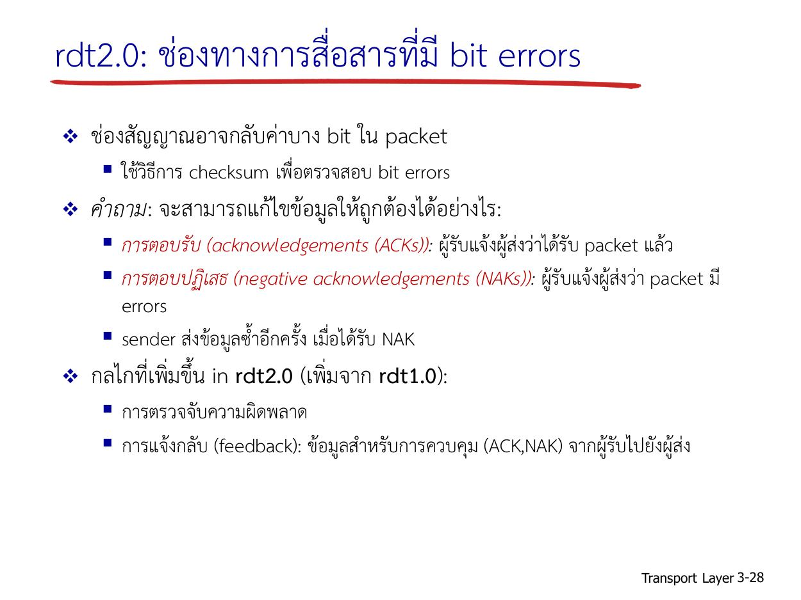
คลิกภาพเพื่อเปิดขยาย
อ่านข้อความต้นฉบับที่สกัดได้ (ไทย/อังกฤษตามไฟล์) rdt2.0: ช่องทางการสือ่ สารที่มี bit errors
ช่องสัญญาณอาจกลับค่าบาง bit ใน packet
ใช้วิธีการ checksum เพื่อตรวจสอบ bit errors
คาถาม: จะสามารถแก้ไขข้อมูลให้ถูกต้องได้อย่างไร:
การตอบรับ (acknowledgements (ACKs)): ผู้รับแจ้งผู้ส่งว่าได้รับ packet แล้ว
การตอบปฏิเสธ (negative acknowledgements (NAKs)): ผู้รับแจ้งผู้ส่งว่า packet มี
errors
sender ส่งข้อมูลซ้าอีกครั้ง เมื่อได้รับ NAK
กลไกที่เพิ่มขึ้น in rdt2.0 (เพิ่มจาก rdt1.0):
การตรวจจับความผิดพลาด
การแจ้งกลับ (feedback): ข้อมูลสาหรับการควบคุม (ACK,NAK) จากผู้รับไปยังผู้ส่ง
Transport Layer 3-28 ทบทวนภาษาไทย: 351 บท 3: Reliable Transfer และ TCP แบบทำโจทย์ Data Link Control และ Reliable Transfer UDP, TCP และ SCTP Congestion Control และ Quality of Service
กลับสารบัญ ↑ หน้า 29 — rdt2.0: ข้อกาหนดของ FSM ดูภาพต้นฉบับหน้า 29 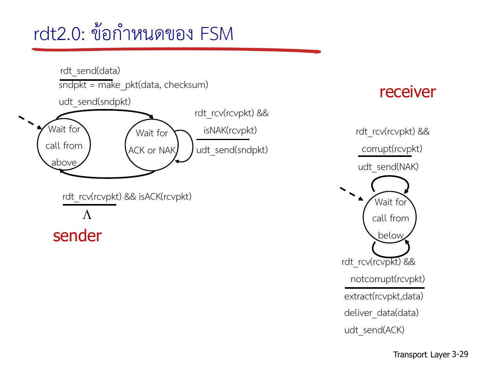
คลิกภาพเพื่อเปิดขยาย
อ่านข้อความต้นฉบับที่สกัดได้ (ไทย/อังกฤษตามไฟล์) rdt2.0: ข้อกาหนดของ FSM
rdt_send(data)
sndpkt = make_pkt(data, checksum)
udt_send(sndpkt)
receiver
rdt_rcv(rcvpkt) &&
Wait for Wait for isNAK(rcvpkt) rdt_rcv(rcvpkt) &&
call from ACK or NAK udt_send(sndpkt) corrupt(rcvpkt)
above udt_send(NAK)
rdt_rcv(rcvpkt) && isACK(rcvpkt) Wait for
L call from
sender below
rdt_rcv(rcvpkt) &&
notcorrupt(rcvpkt)
extract(rcvpkt,data)
deliver_data(data)
udt_send(ACK)
Transport Layer 3-29 ทบทวนภาษาไทย: 351 บท 3: Reliable Transfer และ TCP แบบทำโจทย์ Data Link Control และ Reliable Transfer UDP, TCP และ SCTP Congestion Control และ Quality of Service
กลับสารบัญ ↑ หน้า 30 — rdt2.0: operation with no errors ดูภาพต้นฉบับหน้า 30 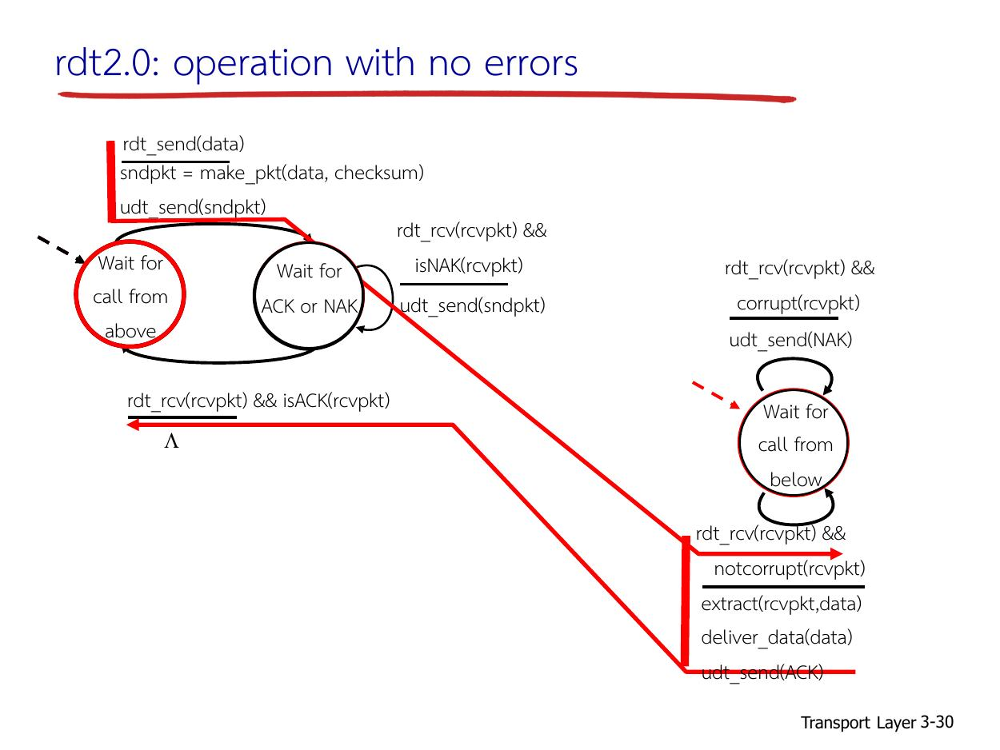
คลิกภาพเพื่อเปิดขยาย
อ่านข้อความต้นฉบับที่สกัดได้ (ไทย/อังกฤษตามไฟล์) rdt2.0: operation with no errors
rdt_send(data)
sndpkt = make_pkt(data, checksum)
udt_send(sndpkt)
rdt_rcv(rcvpkt) &&
Wait for Wait for isNAK(rcvpkt) rdt_rcv(rcvpkt) &&
call from ACK or NAK udt_send(sndpkt) corrupt(rcvpkt)
above udt_send(NAK)
rdt_rcv(rcvpkt) && isACK(rcvpkt) Wait for
L call from
below
rdt_rcv(rcvpkt) &&
notcorrupt(rcvpkt)
extract(rcvpkt,data)
deliver_data(data)
udt_send(ACK)
Transport Layer 3-30 ทบทวนภาษาไทย: 351 บท 3: Reliable Transfer และ TCP แบบทำโจทย์ Data Link Control และ Reliable Transfer UDP, TCP และ SCTP Congestion Control และ Quality of Service
กลับสารบัญ ↑ หน้า 31 — rdt2.0: error scenario ดูภาพต้นฉบับหน้า 31 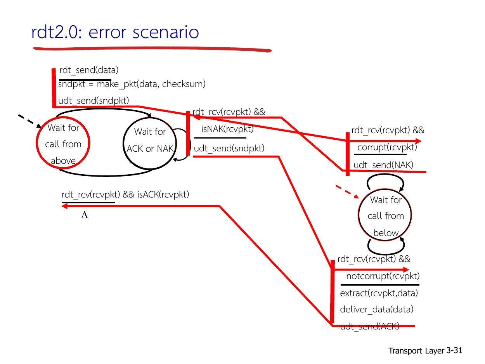
คลิกภาพเพื่อเปิดขยาย
อ่านข้อความต้นฉบับที่สกัดได้ (ไทย/อังกฤษตามไฟล์) rdt2.0: error scenario
rdt_send(data)
sndpkt = make_pkt(data, checksum)
udt_send(sndpkt)
rdt_rcv(rcvpkt) &&
Wait for Wait for isNAK(rcvpkt) rdt_rcv(rcvpkt) &&
call from ACK or NAK udt_send(sndpkt) corrupt(rcvpkt)
above udt_send(NAK)
rdt_rcv(rcvpkt) && isACK(rcvpkt) Waitforfor
Wait call
L call below
from from
below
rdt_rcv(rcvpkt) &&
notcorrupt(rcvpkt)
extract(rcvpkt,data)
deliver_data(data)
udt_send(ACK)
Transport Layer 3-31 ทบทวนภาษาไทย: 351 บท 3: Reliable Transfer และ TCP แบบทำโจทย์ Data Link Control และ Reliable Transfer UDP, TCP และ SCTP Congestion Control และ Quality of Service
กลับสารบัญ ↑ หน้า 32 — rdt2.0 has a fatal flaw! ดูภาพต้นฉบับหน้า 32 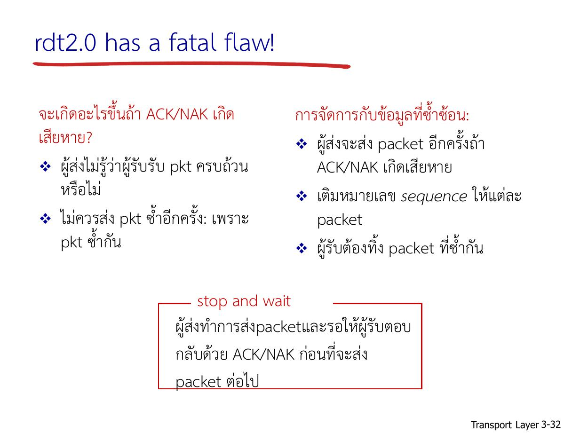
คลิกภาพเพื่อเปิดขยาย
อ่านข้อความต้นฉบับที่สกัดได้ (ไทย/อังกฤษตามไฟล์) rdt2.0 has a fatal flaw!
จะเกิดอะไรขึ้นถ้า ACK/NAK เกิด การจัดการกับข้อมูลที่ซ้าซ้อน:
เสียหาย? ผู้ส่งจะส่ง packet อีกครั้งถ้า
ผู้ส่งไม่รู้ว่าผู้รับรับ pkt ครบถ้วน ACK/NAK เกิดเสียหาย
หรือไม่ เติมหมายเลข sequence ให้แต่ละ
ไม่ควรส่ง pkt ซ้าอีกครั้ง: เพราะ packet
pkt ซ้ากัน ผู้รับต้องทิ้ง packet ทีซ
่ ้ากัน
stop and wait
ผู้ส่งทาการส่งpacketและรอให้ผู้รับตอบ
กลับด้วย ACK/NAK ก่อนที่จะส่ง
packet ต่อไป
Transport Layer 3-32 ทบทวนภาษาไทย: 351 บท 3: Reliable Transfer และ TCP แบบทำโจทย์ Data Link Control และ Reliable Transfer UDP, TCP และ SCTP Congestion Control และ Quality of Service
กลับสารบัญ ↑ หน้า 33 — rdt2.1: ผู้ส่งจัดการกับ ACK/NAKs ที่ไม่ถูกต้อง ดูภาพต้นฉบับหน้า 33 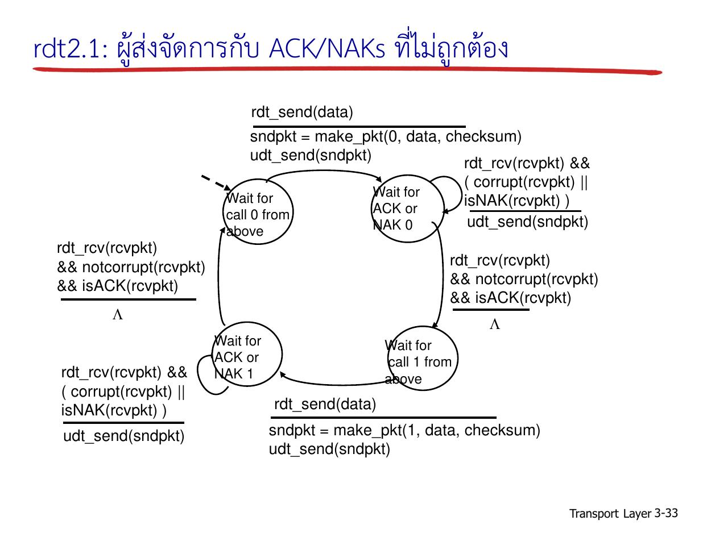
คลิกภาพเพื่อเปิดขยาย
อ่านข้อความต้นฉบับที่สกัดได้ (ไทย/อังกฤษตามไฟล์) rdt2.1: ผู้ส่งจัดการกับ ACK/NAKs ที่ไม่ถูกต้อง
rdt_send(data)
sndpkt = make_pkt(0, data, checksum)
udt_send(sndpkt) rdt_rcv(rcvpkt) &&
( corrupt(rcvpkt) ||
Wait for Wait for
ACK or
isNAK(rcvpkt) )
call 0 from
NAK 0 udt_send(sndpkt)
above
rdt_rcv(rcvpkt)
&& notcorrupt(rcvpkt) rdt_rcv(rcvpkt)
&& isACK(rcvpkt) && notcorrupt(rcvpkt)
&& isACK(rcvpkt)
L
L
Wait for Wait for
ACK or call 1 from
rdt_rcv(rcvpkt) && NAK 1 above
( corrupt(rcvpkt) ||
isNAK(rcvpkt) ) rdt_send(data)
udt_send(sndpkt) sndpkt = make_pkt(1, data, checksum)
udt_send(sndpkt)
Transport Layer 3-33 ทบทวนภาษาไทย: 351 บท 3: Reliable Transfer และ TCP แบบทำโจทย์ Data Link Control และ Reliable Transfer UDP, TCP และ SCTP Congestion Control และ Quality of Service
กลับสารบัญ ↑ หน้า 34 — rdt2.1: ผู้ส่งจัดการกับ ACK/NAKs ที่ไม่ถูกต้อง ดูภาพต้นฉบับหน้า 34 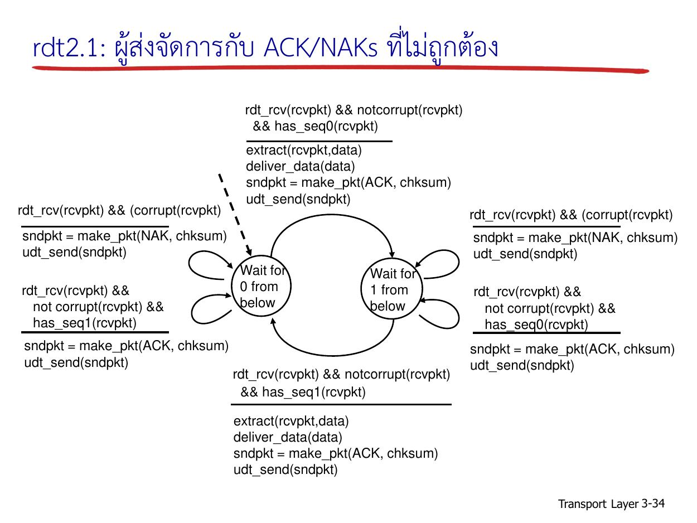
คลิกภาพเพื่อเปิดขยาย
อ่านข้อความต้นฉบับที่สกัดได้ (ไทย/อังกฤษตามไฟล์) rdt2.1: ผู้ส่งจัดการกับ ACK/NAKs ที่ไม่ถูกต้อง
rdt_rcv(rcvpkt) && notcorrupt(rcvpkt)
&& has_seq0(rcvpkt)
extract(rcvpkt,data)
deliver_data(data)
sndpkt = make_pkt(ACK, chksum)
udt_send(sndpkt)
rdt_rcv(rcvpkt) && (corrupt(rcvpkt) rdt_rcv(rcvpkt) && (corrupt(rcvpkt)
sndpkt = make_pkt(NAK, chksum) sndpkt = make_pkt(NAK, chksum)
udt_send(sndpkt) udt_send(sndpkt)
Wait for Wait for
rdt_rcv(rcvpkt) && 0 from 1 from rdt_rcv(rcvpkt) &&
not corrupt(rcvpkt) && below below not corrupt(rcvpkt) &&
has_seq1(rcvpkt) has_seq0(rcvpkt)
sndpkt = make_pkt(ACK, chksum) sndpkt = make_pkt(ACK, chksum)
udt_send(sndpkt) udt_send(sndpkt)
rdt_rcv(rcvpkt) && notcorrupt(rcvpkt)
&& has_seq1(rcvpkt)
extract(rcvpkt,data)
deliver_data(data)
sndpkt = make_pkt(ACK, chksum)
udt_send(sndpkt)
Transport Layer 3-34 ทบทวนภาษาไทย: 351 บท 3: Reliable Transfer และ TCP แบบทำโจทย์ Data Link Control และ Reliable Transfer UDP, TCP และ SCTP Congestion Control และ Quality of Service
กลับสารบัญ ↑ หน้า 35 — rdt2.1: อภิปราย ดูภาพต้นฉบับหน้า 35 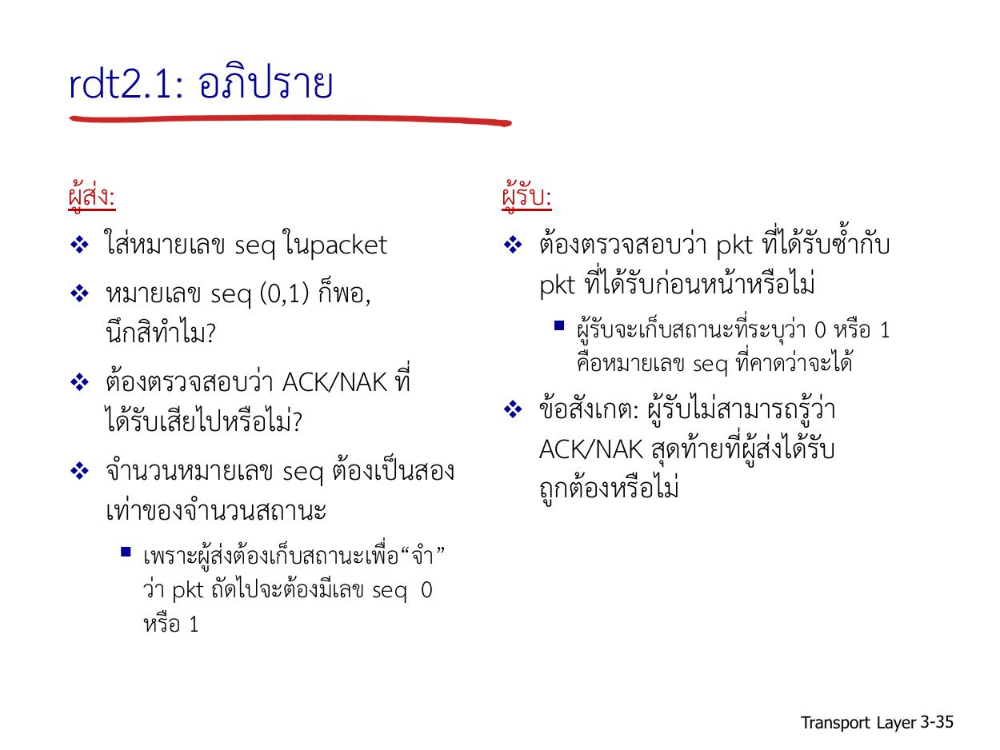
คลิกภาพเพื่อเปิดขยาย
อ่านข้อความต้นฉบับที่สกัดได้ (ไทย/อังกฤษตามไฟล์) rdt2.1: อภิปราย
ผู้ส่ง: ผู้รับ:
ใส่หมายเลข seq ในpacket ต้องตรวจสอบว่า pkt ที่ได้รับซ้ากับ
หมายเลข seq (0,1) ก็พอ, pkt ที่ได้รับก่อนหน้าหรือไม่
นึกสิทาไม? ผู้รับจะเก็บสถานะที่ระบุว่า 0 หรือ 1
คือหมายเลข seq ที่คาดว่าจะได้
ต้องตรวจสอบว่า ACK/NAK ที่
ข้อสังเกต: ผู้รับไม่สามารถรู้ว่า
ได้รับเสียไปหรือไม่?
ACK/NAK สุดท้ายที่ผู้ส่งได้รับ
จานวนหมายเลข seq ต้องเป็นสอง
ถูกต้องหรือไม่
เท่าของจานวนสถานะ
เพราะผู้ส่งต้องเก็บสถานะเพื่อ“จา”
ว่า pkt ถัดไปจะต้องมีเลข seq 0
หรือ 1
Transport Layer 3-35 ทบทวนภาษาไทย: 351 บท 3: Reliable Transfer และ TCP แบบทำโจทย์ Data Link Control และ Reliable Transfer UDP, TCP และ SCTP Congestion Control และ Quality of Service
กลับสารบัญ ↑ หน้า 36 — rdt2.2: protocol ที่ไม่ต้องใช้ NAK ดูภาพต้นฉบับหน้า 36 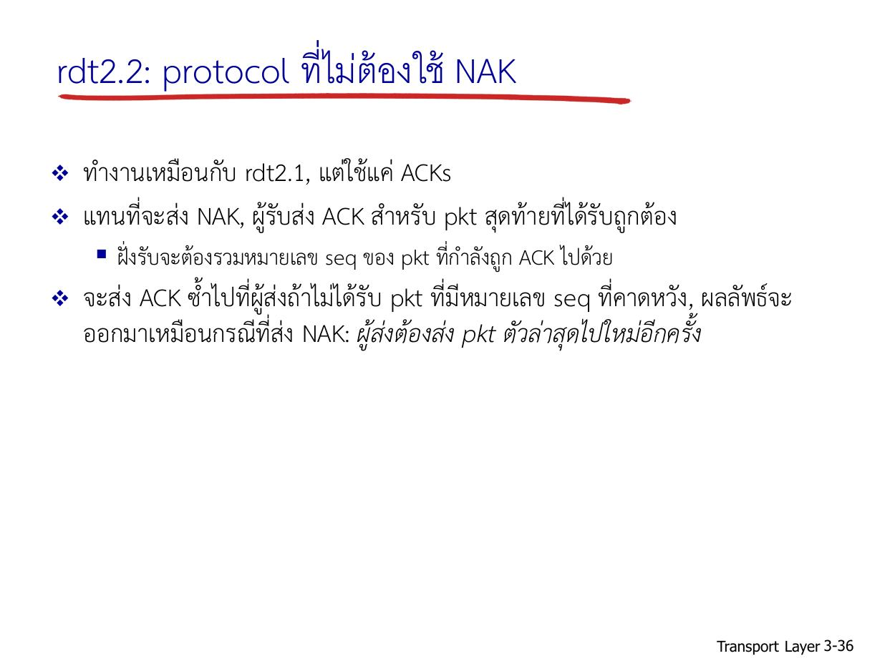
คลิกภาพเพื่อเปิดขยาย
อ่านข้อความต้นฉบับที่สกัดได้ (ไทย/อังกฤษตามไฟล์) rdt2.2: protocol ที่ไม่ต้องใช้ NAK
ทางานเหมือนกับ rdt2.1, แต่ใช้แค่ ACKs
แทนที่จะส่ง NAK, ผู้รับส่ง ACK สาหรับ pkt สุดท้ายที่ได้รับถูกต้อง
ฝั่งรับจะต้องรวมหมายเลข seq ของ pkt ที่กาลังถูก ACK ไปด้วย
จะส่ง ACK ซ้าไปที่ผู้ส่งถ้าไม่ได้รับ pkt ที่มีหมายเลข seq ที่คาดหวัง, ผลลัพธ์จะ
ออกมาเหมือนกรณีที่ส่ง NAK: ผู้ส่งต้องส่ง pkt ตัวล่าสุดไปใหม่อีกครั้ง
Transport Layer 3-36 ทบทวนภาษาไทย: 351 บท 3: Reliable Transfer และ TCP แบบทำโจทย์ Data Link Control และ Reliable Transfer UDP, TCP และ SCTP Congestion Control และ Quality of Service
กลับสารบัญ ↑ หน้า 37 — rdt2.2: sender, receiver fragments ดูภาพต้นฉบับหน้า 37 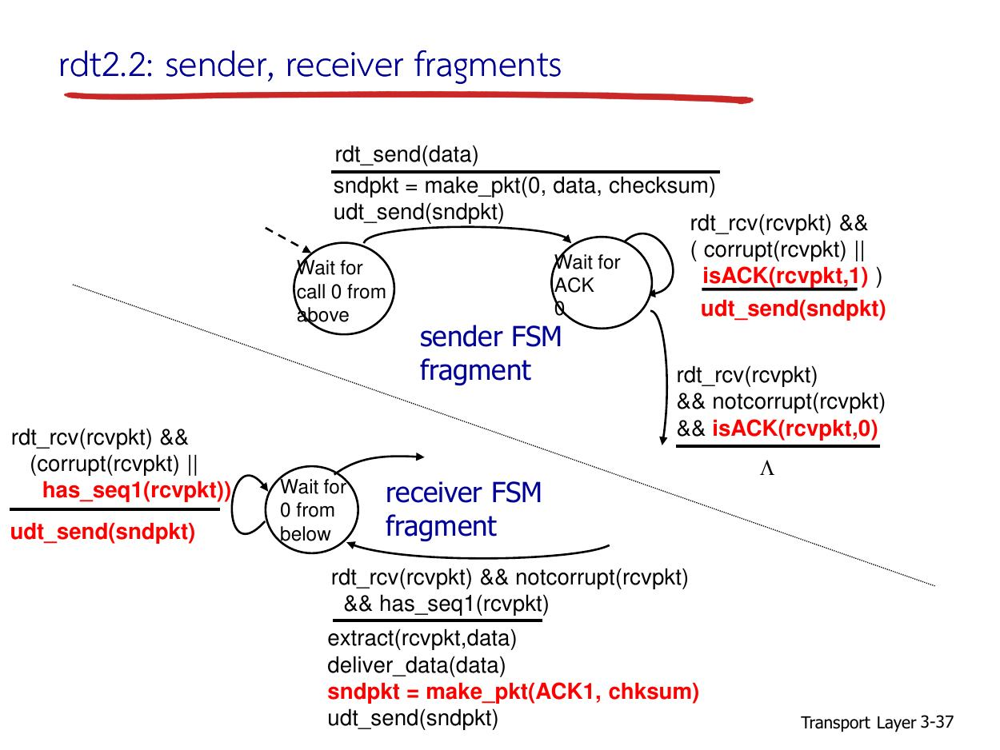
คลิกภาพเพื่อเปิดขยาย
อ่านข้อความต้นฉบับที่สกัดได้ (ไทย/อังกฤษตามไฟล์) rdt2.2: sender, receiver fragments
rdt_send(data)
sndpkt = make_pkt(0, data, checksum)
udt_send(sndpkt)
rdt_rcv(rcvpkt) &&
( corrupt(rcvpkt) ||
Wait for Wait for
ACK isACK(rcvpkt,1) )
call 0 from
above 0 udt_send(sndpkt)
sender FSM
fragment rdt_rcv(rcvpkt)
&& notcorrupt(rcvpkt)
rdt_rcv(rcvpkt) && && isACK(rcvpkt,0)
(corrupt(rcvpkt) || L
has_seq1(rcvpkt)) Wait for receiver FSM
0 from
udt_send(sndpkt) below fragment
rdt_rcv(rcvpkt) && notcorrupt(rcvpkt)
&& has_seq1(rcvpkt)
extract(rcvpkt,data)
deliver_data(data)
sndpkt = make_pkt(ACK1, chksum)
udt_send(sndpkt) Transport Layer 3-37 ทบทวนภาษาไทย: 351 บท 3: Reliable Transfer และ TCP แบบทำโจทย์ Data Link Control และ Reliable Transfer UDP, TCP และ SCTP Congestion Control และ Quality of Service
กลับสารบัญ ↑ หน้า 38 — rdt3.0: ช่องสัญญาณที่มีความผิดพลาดและ pkt สูญหาย ดูภาพต้นฉบับหน้า 38 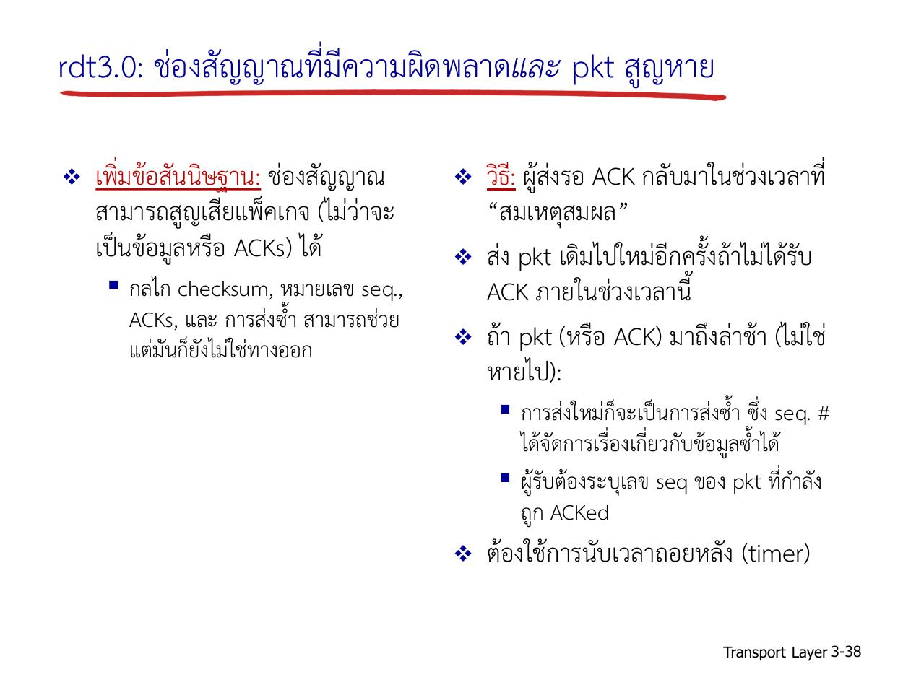
คลิกภาพเพื่อเปิดขยาย
อ่านข้อความต้นฉบับที่สกัดได้ (ไทย/อังกฤษตามไฟล์) rdt3.0: ช่องสัญญาณที่มีความผิดพลาดและ pkt สูญหาย
เพิ่มข้อสันนิษฐาน: ช่องสัญญาณ วิธ:ี ผู้ส่งรอ ACK กลับมาในช่วงเวลาที่
สามารถสูญเสียแพ็คเกจ (ไม่ว่าจะ “สมเหตุสมผล”
เป็นข้อมูลหรือ ACKs) ได้ ส่ง pkt เดิมไปใหม่อีกครั้งถ้าไม่ได้รับ
กลไก checksum, หมายเลข seq., ACK ภายในช่วงเวลานี้
ACKs, และ การส่งซ้า สามารถช่วย
ถ้า pkt (หรือ ACK) มาถึงล่าช้า (ไม่ใช่
แต่มันก็ยังไม่ใช่ทางออก
หายไป):
การส่งใหม่ก็จะเป็นการส่งซ้า ซึ่ง seq. #
ได้จัดการเรื่องเกี่ยวกับข้อมูลซ้าได้
ผู้รับต้องระบุเลข seq ของ pkt ที่กาลัง
ถูก ACKed
ต้องใช้การนับเวลาถอยหลัง (timer)
Transport Layer 3-38 ทบทวนภาษาไทย: 351 บท 3: Reliable Transfer และ TCP แบบทำโจทย์ Data Link Control และ Reliable Transfer UDP, TCP และ SCTP Congestion Control และ Quality of Service
กลับสารบัญ ↑ หน้า 39 — rdt3.0 sender ดูภาพต้นฉบับหน้า 39 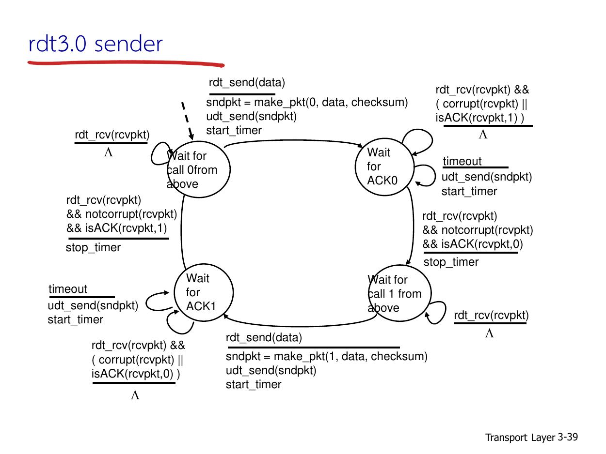
คลิกภาพเพื่อเปิดขยาย
อ่านข้อความต้นฉบับที่สกัดได้ (ไทย/อังกฤษตามไฟล์) rdt3.0 sender
rdt_send(data)
rdt_rcv(rcvpkt) &&
sndpkt = make_pkt(0, data, checksum) ( corrupt(rcvpkt) ||
udt_send(sndpkt) isACK(rcvpkt,1) )
rdt_rcv(rcvpkt) start_timer L
L Wait for Wait
for timeout
call 0from
ACK0 udt_send(sndpkt)
above
start_timer
rdt_rcv(rcvpkt)
&& notcorrupt(rcvpkt) rdt_rcv(rcvpkt)
&& isACK(rcvpkt,1) && notcorrupt(rcvpkt)
stop_timer && isACK(rcvpkt,0)
stop_timer
Wait Wait for
timeout for call 1 from
udt_send(sndpkt) ACK1 above
start_timer rdt_rcv(rcvpkt)
rdt_send(data) L
rdt_rcv(rcvpkt) &&
( corrupt(rcvpkt) || sndpkt = make_pkt(1, data, checksum)
isACK(rcvpkt,0) ) udt_send(sndpkt)
start_timer
L
Transport Layer 3-39 ทบทวนภาษาไทย: 351 บท 3: Reliable Transfer และ TCP แบบทำโจทย์ Data Link Control และ Reliable Transfer UDP, TCP และ SCTP Congestion Control และ Quality of Service
กลับสารบัญ ↑ หน้า 40 — ขณะ rdt3.0 ดาเนินการ ดูภาพต้นฉบับหน้า 40 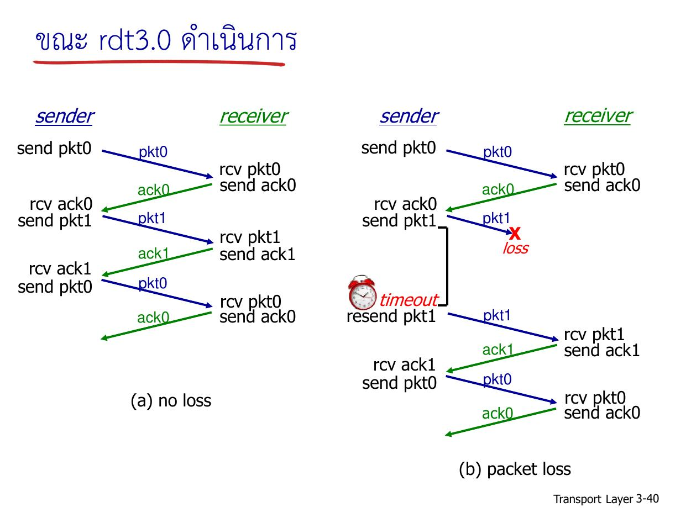
คลิกภาพเพื่อเปิดขยาย
อ่านข้อความต้นฉบับที่สกัดได้ (ไทย/อังกฤษตามไฟล์) ขณะ rdt3.0 ดาเนินการ
sender receiver sender receiver
send pkt0 pkt0 send pkt0 pkt0
rcv pkt0 rcv pkt0
ack0 send ack0 ack0 send ack0
rcv ack0 rcv ack0
send pkt1 pkt1 send pkt1 pkt1
rcv pkt1 X
ack1 send ack1 loss
rcv ack1
send pkt0 pkt0
rcv pkt0 timeout
ack0 send ack0 resend pkt1 pkt1
rcv pkt1
ack1 send ack1
rcv ack1
send pkt0 pkt0
(a) no loss rcv pkt0
ack0 send ack0
(b) packet loss
Transport Layer 3-40 ทบทวนภาษาไทย: 351 บท 3: Reliable Transfer และ TCP แบบทำโจทย์ Data Link Control และ Reliable Transfer UDP, TCP และ SCTP Congestion Control และ Quality of Service
กลับสารบัญ ↑ หน้า 41 — ขณะ rdt3.0 ดาเนินการ ดูภาพต้นฉบับหน้า 41 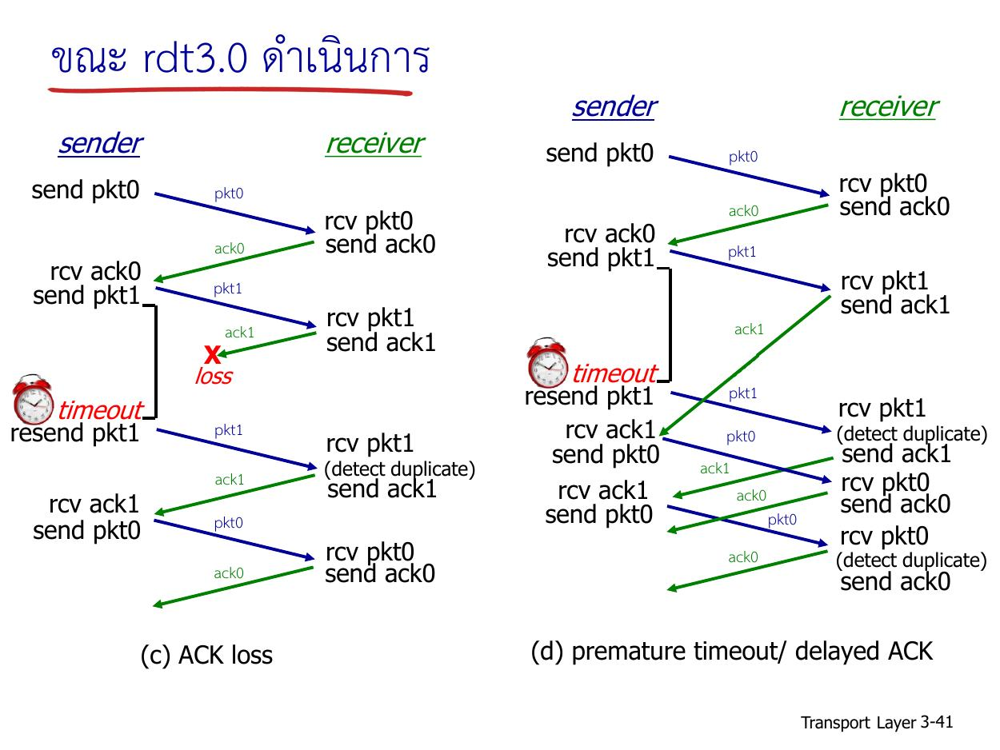
คลิกภาพเพื่อเปิดขยาย
อ่านข้อความต้นฉบับที่สกัดได้ (ไทย/อังกฤษตามไฟล์) ขณะ rdt3.0 ดาเนินการ
sender receiver
sender receiver send pkt0 pkt0
send pkt0 pkt0 rcv pkt0
ack0 send ack0
rcv pkt0
ack0 send ack0 rcv ack0
send pkt1 pkt1
rcv ack0 rcv pkt1
send pkt1 pkt1
rcv pkt1 send ack1
ack1 ack1
send ack1
X
loss timeout
resend pkt1 pkt1
rcv pkt1
timeout
resend pkt1 pkt1 rcv ack1 pkt0 (detect duplicate)
rcv pkt1 send pkt0 send ack1
ack1 (detect duplicate) ack1
send ack1 rcv ack1 ack0 rcv pkt0
rcv ack1 send pkt0 pkt0
send ack0
send pkt0 pkt0
rcv pkt0
rcv pkt0 ack0 (detect duplicate)
ack0 send ack0 send ack0
(c) ACK loss (d) premature timeout/ delayed ACK
Transport Layer 3-41 ทบทวนภาษาไทย: 351 บท 3: Reliable Transfer และ TCP แบบทำโจทย์ Data Link Control และ Reliable Transfer UDP, TCP และ SCTP Congestion Control และ Quality of Service
กลับสารบัญ ↑ หน้า 42 — ประสิทธิภาพของ rdt3.0 ดูภาพต้นฉบับหน้า 42 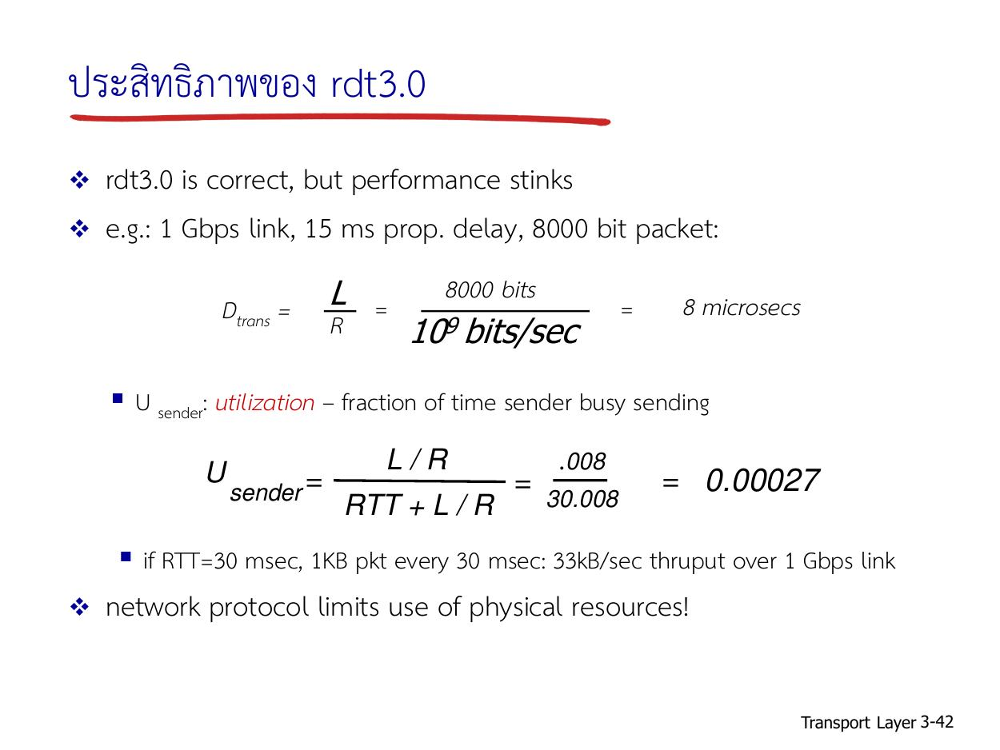
คลิกภาพเพื่อเปิดขยาย
อ่านข้อความต้นฉบับที่สกัดได้ (ไทย/อังกฤษตามไฟล์) ประสิทธิภาพของ rdt3.0
rdt3.0 is correct, but performance stinks
e.g.: 1 Gbps link, 15 ms prop. delay, 8000 bit packet:
L = 8000 bits
Dtrans = = 8 microsecs
R 109 bits/sec
U sender: utilization – fraction of time sender busy sending
U L/R .008
sender = = = 0.00027
RTT + L / R 30.008
if RTT=30 msec, 1KB pkt every 30 msec: 33kB/sec thruput over 1 Gbps link
network protocol limits use of physical resources!
Transport Layer 3-42 ทบทวนภาษาไทย: 351 บท 3: Reliable Transfer และ TCP แบบทำโจทย์ Data Link Control และ Reliable Transfer UDP, TCP และ SCTP Congestion Control และ Quality of Service
กลับสารบัญ ↑ หน้า 43 — rdt3.0: stop-and-wait operation ดูภาพต้นฉบับหน้า 43 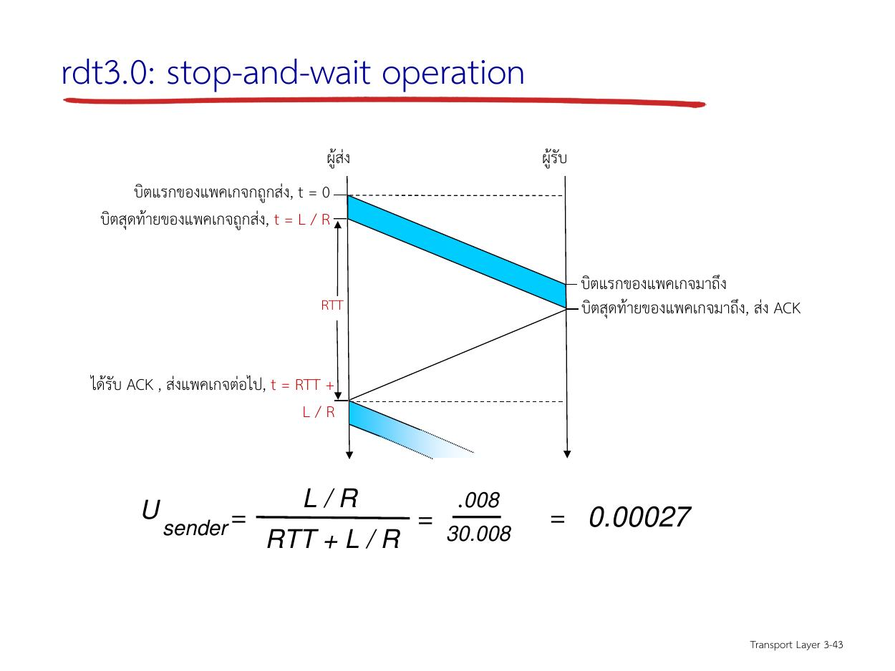
คลิกภาพเพื่อเปิดขยาย
อ่านข้อความต้นฉบับที่สกัดได้ (ไทย/อังกฤษตามไฟล์) rdt3.0: stop-and-wait operation
ผู้ส่ง ผู้รับ
บิตแรกของแพคเกจกถูกส่ง, t = 0
บิตสุดท้ายของแพคเกจถูกส่ง, t = L / R
บิตแรกของแพคเกจมาถึง
RTT บิตสุดท้ายของแพคเกจมาถึง, ส่ง ACK
ได้รับ ACK , ส่งแพคเกจต่อไป, t = RTT +
L/R
U L/R .008
sender = = = 0.00027
RTT + L / R 30.008
Transport Layer 3-43 ทบทวนภาษาไทย: 351 บท 3: Reliable Transfer และ TCP แบบทำโจทย์ Data Link Control และ Reliable Transfer UDP, TCP และ SCTP Congestion Control และ Quality of Service
กลับสารบัญ ↑ หน้า 44 — protocols แบบ pipelined ดูภาพต้นฉบับหน้า 44 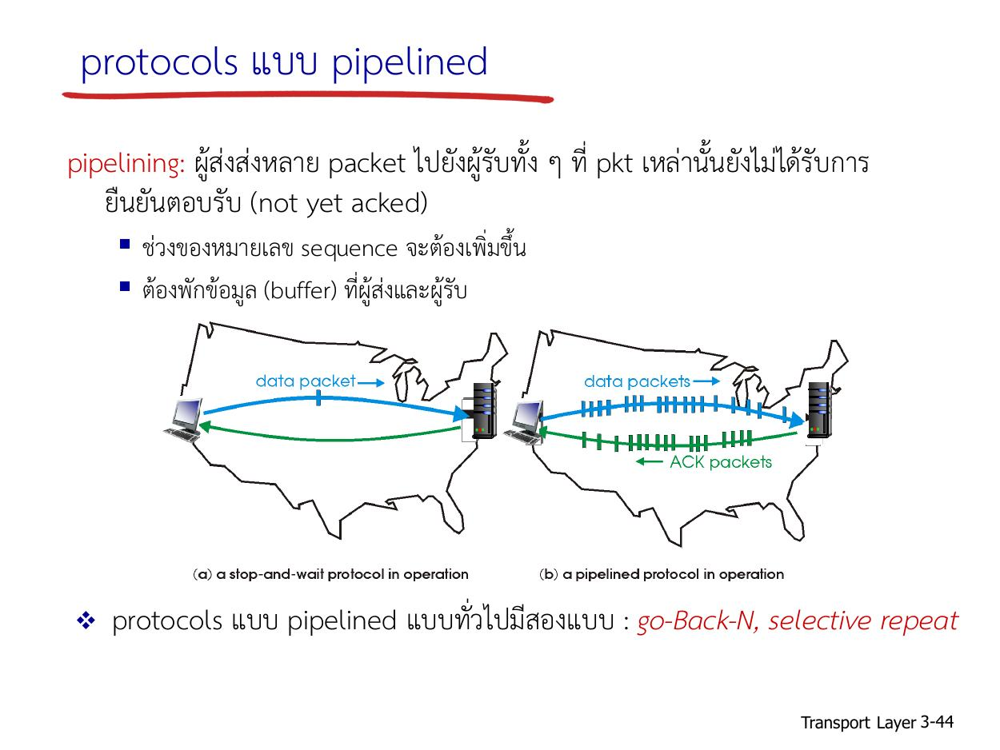
คลิกภาพเพื่อเปิดขยาย
อ่านข้อความต้นฉบับที่สกัดได้ (ไทย/อังกฤษตามไฟล์) protocols แบบ pipelined
pipelining: ผู้ส่งส่งหลาย packet ไปยังผู้รับทั้ง ๆ ที่ pkt เหล่านั้นยังไม่ได้รับการ
ยืนยันตอบรับ (not yet acked)
ช่วงของหมายเลข sequence จะต้องเพิ่มขึ้น
ต้องพักข้อมูล (buffer) ที่ผู้ส่งและผู้รับ
protocols แบบ pipelined แบบทั่วไปมีสองแบบ : go-Back-N, selective repeat
Transport Layer 3-44 ทบทวนภาษาไทย: 351 บท 3: Reliable Transfer และ TCP แบบทำโจทย์ Data Link Control และ Reliable Transfer UDP, TCP และ SCTP Congestion Control และ Quality of Service
กลับสารบัญ ↑ หน้า 45 — Pipelining: ช่วยเพิ่ม utilization ดูภาพต้นฉบับหน้า 45 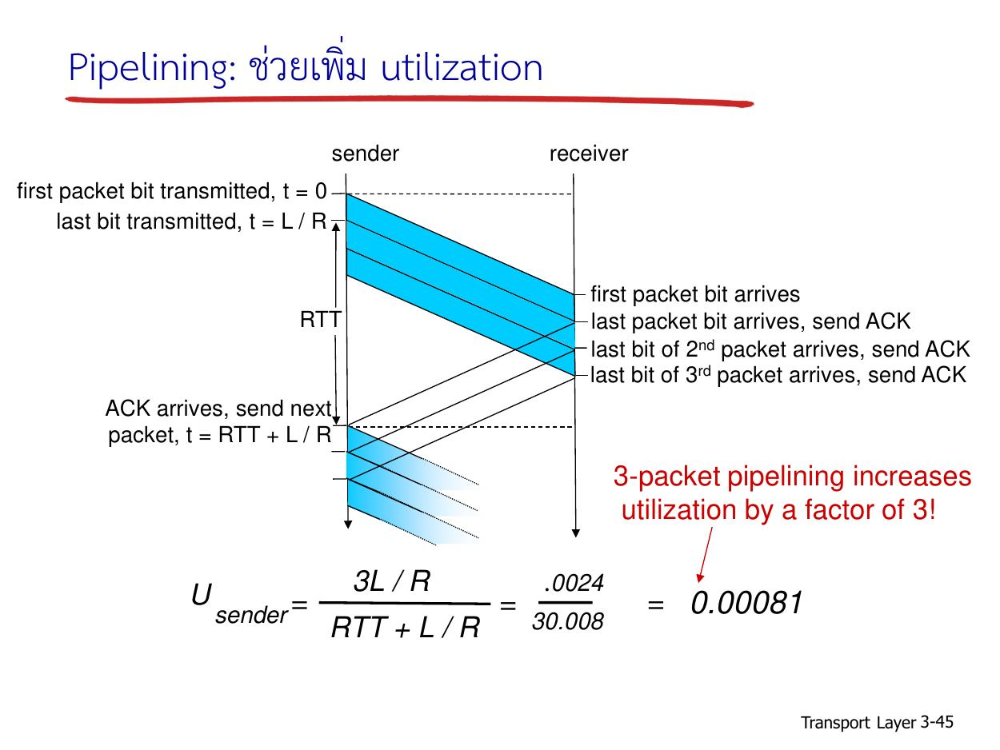
คลิกภาพเพื่อเปิดขยาย
อ่านข้อความต้นฉบับที่สกัดได้ (ไทย/อังกฤษตามไฟล์) Pipelining: ช่วยเพิ่ม utilization
sender receiver
first packet bit transmitted, t = 0
last bit transmitted, t = L / R
first packet bit arrives
RTT last packet bit arrives, send ACK
last bit of 2nd packet arrives, send ACK
last bit of 3rd packet arrives, send ACK
ACK arrives, send next
packet, t = RTT + L / R
3-packet pipelining increases
utilization by a factor of 3!
U 3L / R .0024
sender = = = 0.00081
RTT + L / R 30.008
Transport Layer 3-45 ทบทวนภาษาไทย: 351 บท 3: Reliable Transfer และ TCP แบบทำโจทย์ Data Link Control และ Reliable Transfer UDP, TCP และ SCTP Congestion Control และ Quality of Service
กลับสารบัญ ↑ หน้า 46 — protocols แบบ pipeline: ภาพรวม ดูภาพต้นฉบับหน้า 46 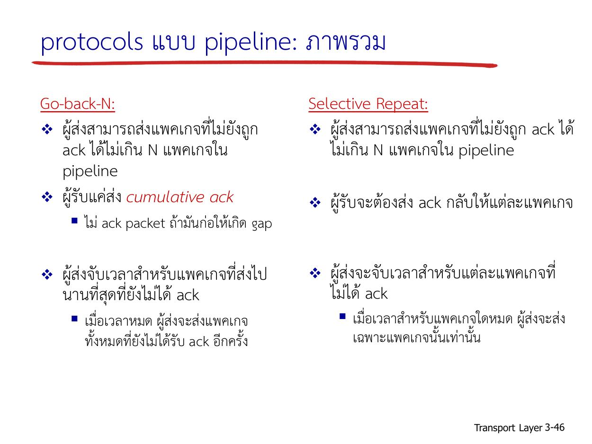
คลิกภาพเพื่อเปิดขยาย
อ่านข้อความต้นฉบับที่สกัดได้ (ไทย/อังกฤษตามไฟล์) protocols แบบ pipeline: ภาพรวม
Go-back-N: Selective Repeat:
ผู้ส่งสามารถส่งแพคเกจที่ไม่ยังถูก ผู้ส่งสามารถส่งแพคเกจที่ไม่ยังถูก ack ได้
ack ได้ไม่เกิน N แพคเกจใน ไม่เกิน N แพคเกจใน pipeline
pipeline
ผู้รับแค่ส่ง cumulative ack ผู้รับจะต้องส่ง ack กลับให้แต่ละแพคเกจ
ไม่ ack packet ถ้ามันก่อให้เกิด gap
ผู้ส่งจับเวลาสาหรับแพคเกจที่ส่งไป ผู้ส่งจะจับเวลาสาหรับแต่ละแพคเกจที่
นานที่สุดที่ยังไม่ได้ ack ไม่ได้ ack
เมื่อเวลาหมด ผู้ส่งจะส่งแพคเกจ เมื่อเวลาสาหรับแพคเกจใดหมด ผู้ส่งจะส่ง
ทั้งหมดที่ยังไม่ได้รับ ack อีกครั้ง เฉพาะแพคเกจนั้นเท่านั้น
Transport Layer 3-46 ทบทวนภาษาไทย: 351 บท 3: Reliable Transfer และ TCP แบบทำโจทย์ Data Link Control และ Reliable Transfer UDP, TCP และ SCTP Congestion Control และ Quality of Service
กลับสารบัญ ↑ หน้า 47 — Go-Back-N: ผู้ส่ง ดูภาพต้นฉบับหน้า 47 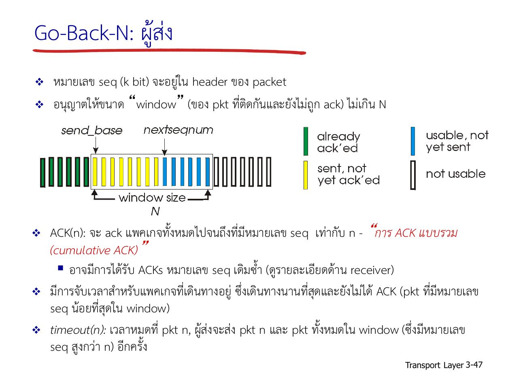
คลิกภาพเพื่อเปิดขยาย
อ่านข้อความต้นฉบับที่สกัดได้ (ไทย/อังกฤษตามไฟล์) Go-Back-N: ผู้ส่ง
หมายเลข seq (k bit) จะอยู่ใน header ของ packet
อนุญาตให้ขนาด “window” (ของ pkt ที่ติดกันและยังไม่ถูก ack) ไม่เกิน N
ACK(n): จะ ack แพคเกจทั้งหมดไปจนถึงที่มีหมายเลข seq เท่ากับ n - “การ ACK แบบรวม
(cumulative ACK)”
อาจมีการได้รับ ACKs หมายเลข seq เดิมซ้า (ดูรายละเอียดด้าน receiver)
มีการจับเวลาสาหรับแพคเกจที่เดินทางอยู่ ซึ่งเดินทางนานที่สุดและยังไม่ได้ ACK (pkt ที่มีหมายเลข
seq น้อยที่สุดใน window)
timeout(n): เวลาหมดที่ pkt n, ผู้ส่งจะส่ง pkt n และ pkt ทั้งหมดใน window (ซึ่งมีหมายเลข
seq สูงกว่า n) อีกครั้ง
Transport Layer 3-47 ทบทวนภาษาไทย: 351 บท 3: Reliable Transfer และ TCP แบบทำโจทย์ Data Link Control และ Reliable Transfer UDP, TCP และ SCTP Congestion Control และ Quality of Service
กลับสารบัญ ↑ หน้า 48 — GBN: FSM ด้านผู้ส่งที่เพิ่มจากของเดิม ดูภาพต้นฉบับหน้า 48 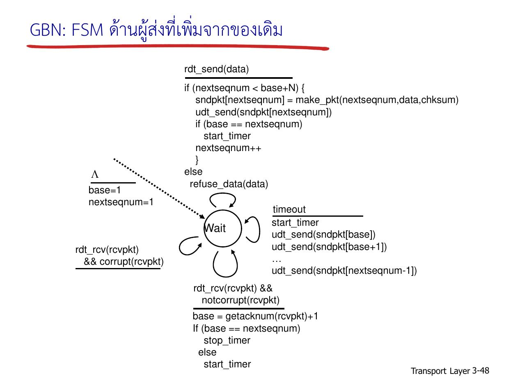
คลิกภาพเพื่อเปิดขยาย
อ่านข้อความต้นฉบับที่สกัดได้ (ไทย/อังกฤษตามไฟล์) GBN: FSM ด้านผู้ส่งที่เพิ่มจากของเดิม
rdt_send(data)
if (nextseqnum < base+N) {
sndpkt[nextseqnum] = make_pkt(nextseqnum,data,chksum)
udt_send(sndpkt[nextseqnum])
if (base == nextseqnum)
start_timer
nextseqnum++
}
L else
refuse_data(data)
base=1
nextseqnum=1
timeout
start_timer
Wait
udt_send(sndpkt[base])
rdt_rcv(rcvpkt) udt_send(sndpkt[base+1])
&& corrupt(rcvpkt) …
udt_send(sndpkt[nextseqnum-1])
rdt_rcv(rcvpkt) &&
notcorrupt(rcvpkt)
base = getacknum(rcvpkt)+1
If (base == nextseqnum)
stop_timer
else
start_timer
Transport Layer 3-48 ทบทวนภาษาไทย: 351 บท 3: Reliable Transfer และ TCP แบบทำโจทย์ Data Link Control และ Reliable Transfer UDP, TCP และ SCTP Congestion Control และ Quality of Service
กลับสารบัญ ↑ หน้า 49 — GBN: FSM ด้านผู้รับที่เพิ่มจากของเดิม ดูภาพต้นฉบับหน้า 49 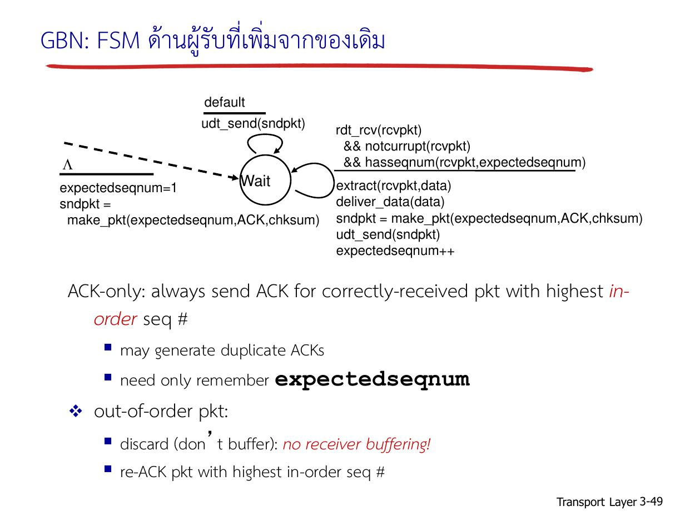
คลิกภาพเพื่อเปิดขยาย
อ่านข้อความต้นฉบับที่สกัดได้ (ไทย/อังกฤษตามไฟล์) GBN: FSM ด้านผู้รับที่เพิ่มจากของเดิม
default
udt_send(sndpkt) rdt_rcv(rcvpkt)
&& notcurrupt(rcvpkt)
L && hasseqnum(rcvpkt,expectedseqnum)
expectedseqnum=1 Wait extract(rcvpkt,data)
sndpkt = deliver_data(data)
make_pkt(expectedseqnum,ACK,chksum) sndpkt = make_pkt(expectedseqnum,ACK,chksum)
udt_send(sndpkt)
expectedseqnum++
ACK-only: always send ACK for correctly-received pkt with highest in-
order seq #
may generate duplicate ACKs
need only remember expectedseqnum
out-of-order pkt:
discard (don’t buffer): no receiver buffering!
re-ACK pkt with highest in-order seq #
Transport Layer 3-49 ทบทวนภาษาไทย: 351 บท 3: Reliable Transfer และ TCP แบบทำโจทย์ Data Link Control และ Reliable Transfer UDP, TCP และ SCTP Congestion Control และ Quality of Service
กลับสารบัญ ↑ หน้า 50 — GBN in action ดูภาพต้นฉบับหน้า 50 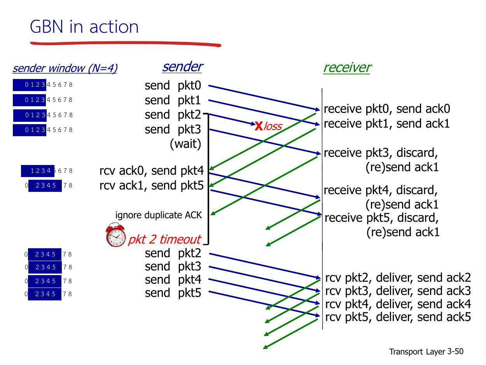
คลิกภาพเพื่อเปิดขยาย
อ่านข้อความต้นฉบับที่สกัดได้ (ไทย/อังกฤษตามไฟล์) GBN in action
sender window (N=4) sender receiver
012345678 send pkt0
012345678 send pkt1
012345678 send pkt2 receive pkt0, send ack0
012345678 send pkt3 Xloss receive pkt1, send ack1
(wait)
receive pkt3, discard,
012345678 rcv ack0, send pkt4 (re)send ack1
012345678 rcv ack1, send pkt5 receive pkt4, discard,
(re)send ack1
ignore duplicate ACK receive pkt5, discard,
(re)send ack1
pkt 2 timeout
012345678 send pkt2
012345678 send pkt3
012345678 send pkt4 rcv pkt2, deliver, send ack2
012345678 send pkt5 rcv pkt3, deliver, send ack3
rcv pkt4, deliver, send ack4
rcv pkt5, deliver, send ack5
Transport Layer 3-50 ทบทวนภาษาไทย: 351 บท 3: Reliable Transfer และ TCP แบบทำโจทย์ Data Link Control และ Reliable Transfer UDP, TCP และ SCTP Congestion Control และ Quality of Service
กลับสารบัญ ↑ หน้า 51 — Selective repeat ดูภาพต้นฉบับหน้า 51 คลิกภาพเพื่อเปิดขยาย
อ่านข้อความต้นฉบับที่สกัดได้ (ไทย/อังกฤษตามไฟล์) Selective repeat
ผู้รับ Ack แต่ละแพคเก็จที่ได้ รับมาถูกต้ อง
เก็บ (buffer) แพคเก็จ, เท่าที่จาเป็ น, เพื่อที่จะส่ งข้อมูลที่เรี ยงลาดับแล้ว ไปยัง layer
บนได้ในท้ายที่สุด
ผู้สง่ แค่สง่ แพคเก็จซ ้าเฉพาะแพคเก็จที่ไม่ได้ รับ Ack เท่านัน้
ตัวจับเวลา (ทางฝั่งผูส้ ่ ง) จะจับเวลาของแต่ละแพคเก็จที่ไม่ได้รับ Ack
Window ของผู้สง่
มีหมายเลข seq อยู่ N หมายเลขติดกัน
จากัดหมายเลข seq ของแพตเก็จที่ส่งไปแล้ว และไม่ได้รับ Ack
Transport Layer 3-51 ทบทวนภาษาไทย: 351 บท 3: Reliable Transfer และ TCP แบบทำโจทย์ Data Link Control และ Reliable Transfer UDP, TCP และ SCTP Congestion Control และ Quality of Service
กลับสารบัญ ↑ หน้า 52 — Selective repeat: sender, receiver windows ดูภาพต้นฉบับหน้า 52 คลิกภาพเพื่อเปิดขยาย
อ่านข้อความต้นฉบับที่สกัดได้ (ไทย/อังกฤษตามไฟล์) Selective repeat: sender, receiver windows
Transport Layer 3-52 ทบทวนภาษาไทย: 351 บท 3: Reliable Transfer และ TCP แบบทำโจทย์ Data Link Control และ Reliable Transfer UDP, TCP และ SCTP Congestion Control และ Quality of Service
กลับสารบัญ ↑ หน้า 53 — Selective repeat ดูภาพต้นฉบับหน้า 53 คลิกภาพเพื่อเปิดขยาย
อ่านข้อความต้นฉบับที่สกัดได้ (ไทย/อังกฤษตามไฟล์) Selective repeat
ผูส้ ่ ง ผูร้ ับ
ข้อมูลมาจาก layer ด้านบน: pkt n in [rcvbase, rcvbase+N-1]
ถ้ามีหมายเลข seq ว่างใน window, ให้ ส่ ง ACK(n)
ส่ง pkt ได้ ถ้าไม่เรี ยงตามลาดับ : buffer
timeout(n): ถ้าตามลาดับ : ส่ ง (รวมถึงให้ส่ง pkt ที่
ส่ง pkt n ซ้า, จับเวลาใหม่ เรี ยงตามลาดับและอยูใ่ นบัฟเฟอร์), เลื่อน
window ไปที่หมายเลข seq ถัดไปของ
ACK(n) in [sendbase, sendbase+N]: pkt ที่ยงั ไม่ได้รับจากผูส้ ่ ง
รู้ว่า ผู้รับได้รับ pkt n แล้ว
pkt n in [rcvbase-N,rcvbase-1]
ถ้า n เกิดเป็นหมายเลขแรกสุดในหน้าต่าง
ACK(n)
(n เท่ากับ sendbase) ที่ไม่ได้ ถูก ack,
เลื่อน window ไปทางด้านขวา โดยเลื่อน otherwise:
ไปยังหมายเลขที่ไม่ได้ถูก ack ทิ้งไปไม่ตอ้ งสนใจ
Transport Layer 3-53 ทบทวนภาษาไทย: 351 บท 3: Reliable Transfer และ TCP แบบทำโจทย์ Data Link Control และ Reliable Transfer UDP, TCP และ SCTP Congestion Control และ Quality of Service
กลับสารบัญ ↑ หน้า 54 — ขณะ Selective repeat ดาเนินการ ดูภาพต้นฉบับหน้า 54 คลิกภาพเพื่อเปิดขยาย
อ่านข้อความต้นฉบับที่สกัดได้ (ไทย/อังกฤษตามไฟล์) ขณะ Selective repeat ดาเนินการ
sender window (N=4) sender receiver
012345678 ส่ ง pkt0
012345678 ส่ ง pkt1
012345678 ส่ ง pkt2 รับ pkt0, ส่ ง ack0
012345678 ส่ ง pkt3 Xloss รับ pkt1, ส่ ง ack1
(wait)
รับ pkt3, buffer, ส่ ง ack3
012345678 รับ ack0, ส่ ง pkt4
012345678
รับ ack1, ส่ ง pkt5 รับ pkt4, buffer, ส่ ง ack4
บันทึก ack3 มาถึงแล้ว รับ pkt5, buffer, ส่ ง ack5
pkt 2 timeout
012345678 send pkt2
012345678 บันทึก ack4 มาถึงแล้ว
012345678
บันทึก ack4 มาถึงแล้ว
รับ pkt2; deliver pkt2,
012345678 pkt3, pkt4, pkt5; ส่ ง ack2
Q: เกิดอะไรขึน
้ เมื่อ ack2 มาถึง?
Transport Layer 3-54 ทบทวนภาษาไทย: 351 บท 3: Reliable Transfer และ TCP แบบทำโจทย์ Data Link Control และ Reliable Transfer UDP, TCP และ SCTP Congestion Control และ Quality of Service
กลับสารบัญ ↑ หน้า 55 — Selective repeat: sender window ดูภาพต้นฉบับหน้า 55 คลิกภาพเพื่อเปิดขยาย
อ่านข้อความต้นฉบับที่สกัดได้ (ไทย/อังกฤษตามไฟล์) Selective repeat: sender window
(after receipt)
receiver window
(after receipt)
dilemma 0123012 pkt0
0123012 pkt1 0123012
0123012 pkt2 0123012
ตัวอย่าง: 0123012
0123012 pkt3
หมายเลข seq: 0, 1, 2, 3 0123012
X
ขนาดของ window =3 pkt0 will accept packet
with seq number 0
(a) no problem
ผูร้ ับไม่เห็นถึงความแตกต่างของ
ทั้ง 2 เหตุการณ์จาลองนี้! ผู้รับไม่สามารถเห็นด้านผู้ส่งได้
ในเหตุการณ์จาลอง (b) ข้อมูลเก่า พฤติกรรมผู้รับจะเหมือนกันทั้ง 2 สถานการณ์
ที่ถูกส่ งซ้ า เมื่อผูร้ ับรับมา จะนึกว่า มีบางอย่างที่ผิด (มาก)!
เป็ นข้อมูลใหม่ 0123012 pkt0
0123012 pkt1 0123012
pkt2 0123012
Q: ขนาดของ seq # กับขนาดของ 0123012
X 0123012
window เกี่ยวข้องกันยังไง X
เพื่อที่จะหลีกเลี่ยงปัญหาใน timeout
retransmit pkt0 X
ตัวอย่าง (b) ? 0123012 pkt0
will accept packet
with seq number 0
(b) oops!
Transport Layer 3-55 ทบทวนภาษาไทย: 351 บท 3: Reliable Transfer และ TCP แบบทำโจทย์ Data Link Control และ Reliable Transfer UDP, TCP และ SCTP Congestion Control และ Quality of Service
กลับสารบัญ ↑ หน้า 56 — Chapter 3 Outline ดูภาพต้นฉบับหน้า 56 คลิกภาพเพื่อเปิดขยาย
อ่านข้อความต้นฉบับที่สกัดได้ (ไทย/อังกฤษตามไฟล์) Chapter 3 Outline
3.1 บริการในขั้น Transport 3.5 การส่งข้อมูลที่ต้องมีการเชื่อมต่อก่อน
3.2 การรวมและการแยกข้อมูล (connection-oriented transport):
(multiplexing and TCP
demultiplexing) โครงสร้างส่วนข้อมูล (segment)
3.3 การส่งข้อมูลที่ไม่ต้องมีการเชื่อมต่อ การส่งข้อมูลที่น่าเชื่อถือ/น่าไว้ใจได้
(reliable data transfer)
(connectionless transport):
UDP การควบคุมการไหล (flow control)
การจัดการการเชื่อมต่อ (connection
3.4 หลักการต่าง ๆ ของการส่งข้อมูลที่ management)
ไว้ใจได้ (principles of reliable 3.6 หลักการของการควบคุมความคับคั่ง
data transfer) (congestion control)
3.7 congestion control ของ TCP
Transport Layer 3-56 ทบทวนภาษาไทย: 351 บท 3: Reliable Transfer และ TCP แบบทำโจทย์ Data Link Control และ Reliable Transfer UDP, TCP และ SCTP Congestion Control และ Quality of Service
กลับสารบัญ ↑ หน้า 57 — TCP: ภาพรวม RFCs: 793,1122,1323, 2018, 2581 ดูภาพต้นฉบับหน้า 57 คลิกภาพเพื่อเปิดขยาย
อ่านข้อความต้นฉบับที่สกัดได้ (ไทย/อังกฤษตามไฟล์) TCP: ภาพรวม RFCs: 793,1122,1323, 2018, 2581
point-to-point (สถานที่นึง-ไป- ข้อมูลแบบสองทิศทาง:
สถานที่นึง): มีการส่งข้อมูลทั้งไปและกลับในการ
ผู้ส่งหนึ่งคน , ผู้รับหนึ่งคน เชื่อมต่อ (connection) เดียวกัน
สายข้อมูลเป็นไบต์ที่เรียงลาดับและ MSS: ขนาด segment ที่ใหญ่สุดที่
ข้อมูลไม่สูญหาย (reliable, in-order TCP จะรับได้ (Max Segment Size)
byte steam): connection-oriented:
ไม่มี “ขอบเขต” ของข้อความ handshaking (การแลกเปลี่ยนของ
(ข้อความจะมาถึงผู้รับต่อเนื่องกัน) ข้อความควบคุม) ตั้งค่าสถานะตั้งต้น
ให้ผู้ส่งและผู้รับ ก่อนการแลกเปลี่ยน
pipelined:
ข้อความ
การควบคุมความคับคัง่ และการควบคุม flow controlled:
อัตราการไหลของ TCP จะกาหนด
ขนาดของ window ผู้ส่งจะไม่ส่งข้อมูลเกินกว่าที่ผู้รับจะรับ
ได้
Transport Layer 3-57 ทบทวนภาษาไทย: 351 บท 3: Reliable Transfer และ TCP แบบทำโจทย์ Data Link Control และ Reliable Transfer UDP, TCP และ SCTP Congestion Control และ Quality of Service
กลับสารบัญ ↑ หน้า 58 — TCP segment structure ดูภาพต้นฉบับหน้า 58 คลิกภาพเพื่อเปิดขยาย
อ่านข้อความต้นฉบับที่สกัดได้ (ไทย/อังกฤษตามไฟล์) TCP segment structure
32 bits
URG: ข้อมูลเร่งด่วน นับโดยใช้
(โดยทั่ว ๆ ไป ไม่ถูกใช้) source port # dest port #
byte ของข้อมูล
ACK: ACK # sequence number (ไม่ใช่ segment!)
valid acknowledgement number
head not
PSH: ผลักข้อมูลให้ชั้น app len used
UAP R S F receive window
(โดยทั่ว ๆ ไป ไม่ถูกใช้) จานวน bytes ที่
checksum Urg data pointer
ผู้รับเต็มใจจะรับ
RST, SYN, FIN: options (variable length)
สร้างการเชื่อต่อ
(คาสั่ง setup, teardown)
application
Internet data
checksum (variable length)
(เหมือนใน UDP)
Transport Layer 3-58 ทบทวนภาษาไทย: 351 บท 3: Reliable Transfer และ TCP แบบทำโจทย์ Data Link Control และ Reliable Transfer UDP, TCP และ SCTP Congestion Control และ Quality of Service
กลับสารบัญ ↑ หน้า 59 — TCP seq. numbers, ACKs ดูภาพต้นฉบับหน้า 59 คลิกภาพเพื่อเปิดขยาย
อ่านข้อความต้นฉบับที่สกัดได้ (ไทย/อังกฤษตามไฟล์) TCP seq. numbers, ACKs
segment ขาออกจากผู้ส่ง
หมายเลข sequence: source port # dest port #
sequence number
เลขของ byte stream จะเป็น byte acknowledgement number
แรกของข้อมูลของ segment นี้ checksum
rwnd
urg pointer
acknowledgements: window size
เลข seq ของ byte ถัดไปที่อีกด้านหนึ่ง N
คาดหวังว่าจะได้
cumulative ACK (ACK แบบรวม) sender sequence number space
Q: ผู้รับจัดการกับ segment ที่มาถึงไม่
sent sent, not- usable not
เรียงลาดับอย่างไร ACKed yet ACKed but not usable
A: TCP ไม่มีรายละเอียดส่วนนี้ – ขึ้นอยู่ (“in-
flight”)
yet sent
กับคนที่จะมาเขียนโปรแกรม TCP segment ขาเข้ามาถึงผู้ส่ง
source port # dest port #
sequence number
acknowledgement number
A rwnd
checksum urg pointer
Transport Layer 3-59 ทบทวนภาษาไทย: 351 บท 3: Reliable Transfer และ TCP แบบทำโจทย์ Data Link Control และ Reliable Transfer UDP, TCP และ SCTP Congestion Control และ Quality of Service
กลับสารบัญ ↑ หน้า 60 — TCP seq. numbers, ACKs ดูภาพต้นฉบับหน้า 60 คลิกภาพเพื่อเปิดขยาย
อ่านข้อความต้นฉบับที่สกัดได้ (ไทย/อังกฤษตามไฟล์) TCP seq. numbers, ACKs
Host A Host B
User
types
‘C’ Seq=42, ACK=79, data = ‘C’
host ACKs
receipt of
‘C’, echoes
Seq=79, ACK=43, data = ‘C’ back ‘C’
host ACKs
receipt
of echoed
‘C’ Seq=43, ACK=80
เหตุการณ์จาลอง telnet อย่างง่าย
Transport Layer 3-60 ทบทวนภาษาไทย: 351 บท 3: Reliable Transfer และ TCP แบบทำโจทย์ Data Link Control และ Reliable Transfer UDP, TCP และ SCTP Congestion Control และ Quality of Service
กลับสารบัญ ↑ หน้า 61 — TCP round trip time, timeout ดูภาพต้นฉบับหน้า 61 คลิกภาพเพื่อเปิดขยาย
อ่านข้อความต้นฉบับที่สกัดได้ (ไทย/อังกฤษตามไฟล์) TCP round trip time, timeout
Q: เราควรจะกาหนด time out Q: จะประมาณเวลาของ RTT
ไว้ที่เท่าใด? อย่างไร?
มากกว่าเวลาของ RTT SampleRTT: วัดจากระยะเวลาตั้งแต่
แต่เวลาของ RTT นั้นแปรปรวน เริ่มส่ง sengment จนกระทั่งได้รับ
กาหนดไว้น้อยเกินไป: timeout ACK
ก่อนกาหนด ทาให้มีการ ไม่สนใจการ retransmissions
retransmissions โดยไม่จาเป็น SampleRTT มีค่าแปรปรวน, เรา
กาหนดไว้มากเกินไป: ระบบ ต้องการประมาณเวลาของ RTT ให้
ตอบสนองต่อการสูญหายของ smooth กว่า
segment ช้าเกินไป ใช้ค่าเฉลี่ยของค่าหลาย ๆ ค่า ไม่ใช่แค่
เวลาของ SampleRTT ปัจจุบัน
Transport Layer 3-61 ทบทวนภาษาไทย: 351 บท 3: Reliable Transfer และ TCP แบบทำโจทย์ Data Link Control และ Reliable Transfer UDP, TCP และ SCTP Congestion Control และ Quality of Service
กลับสารบัญ ↑ หน้า 62 — TCP round trip time, timeout ดูภาพต้นฉบับหน้า 62 คลิกภาพเพื่อเปิดขยาย
อ่านข้อความต้นฉบับที่สกัดได้ (ไทย/อังกฤษตามไฟล์) TCP round trip time, timeout
EstimatedRTT = (1- )*EstimatedRTT + *SampleRTT
ค่าเฉลี่ยของการเคลื่อนที่ถ่วงน้าหนักแบบ exponential
ค่า SampleRTT ที่ในอดีตจะมีผลต่อ EstimatedRTT ลดลงแบบ exponentially
โดยทั่วไปจะกาหนดค่า = 0.125 RTT: gaia.cs.umass.edu to fantasia.eurecom.fr
350
RTT: gaia.cs.umass.edu to fantasia.eurecom.fr
RTT (milliseconds)
300
250
RTT (milliseconds)
200
sampleRTT
150
EstimatedRTT
100
1 8 15 22 29 36 43 50 57 64 71 78 85 92 99 106
time (seconnds)
time (seconds) Transport Layer 3-62
SampleRTT Estimated RTT ทบทวนภาษาไทย: 351 บท 3: Reliable Transfer และ TCP แบบทำโจทย์ Data Link Control และ Reliable Transfer UDP, TCP และ SCTP Congestion Control และ Quality of Service
กลับสารบัญ ↑ หน้า 63 — TCP round trip time, timeout ดูภาพต้นฉบับหน้า 63 คลิกภาพเพื่อเปิดขยาย
อ่านข้อความต้นฉบับที่สกัดได้ (ไทย/อังกฤษตามไฟล์) TCP round trip time, timeout
ช่วงเวลาของ timeout : EstimatedRTT บวกกับระยะเวลาที่เผื่อเอาไว้
ยิ่งค่าของ EstimatedRTT ที่แปรปรวนมากเท่าไร -> ระยะเวลาที่เผือ่ ความมากขึ้นตาม
มีประเมินค่าการเปลี่ยนแปลงของ SampleRTT จาก EstimatedRTT:
DevRTT = (1-)*DevRTT +
*|SampleRTT-EstimatedRTT|
(typically, = 0.25)
TimeoutInterval = EstimatedRTT + 4*DevRTT
estimated RTT “ช่วงเวลาที่เผือ่ ”
Transport Layer 3-63 ทบทวนภาษาไทย: 351 บท 3: Reliable Transfer และ TCP แบบทำโจทย์ Data Link Control และ Reliable Transfer UDP, TCP และ SCTP Congestion Control และ Quality of Service
กลับสารบัญ ↑ หน้า 64 — Chapter 3 Outline ดูภาพต้นฉบับหน้า 64 คลิกภาพเพื่อเปิดขยาย
อ่านข้อความต้นฉบับที่สกัดได้ (ไทย/อังกฤษตามไฟล์) Chapter 3 Outline
3.1 บริการในขั้น Transport 3.5 การส่งข้อมูลที่ต้องมีการเชื่อมต่อก่อน
3.2 การรวมและการแยกข้อมูล (connection-oriented transport):
(multiplexing and TCP
demultiplexing) โครงสร้างส่วนข้อมูล (segment)
3.3 การส่งข้อมูลที่ไม่ต้องมีการเชื่อมต่อ การส่งข้อมูลที่น่าเชื่อถือ/น่าไว้ใจได้
(reliable data transfer)
(connectionless transport):
UDP การควบคุมการไหล (flow control)
การจัดการการเชื่อมต่อ (connection
3.4 หลักการต่าง ๆ ของการส่งข้อมูลที่ management)
ไว้ใจได้ (principles of reliable 3.6 หลักการของการควบคุมความคับคั่ง
data transfer) (congestion control)
3.7 congestion control ของ TCP
Transport Layer 3-64 ทบทวนภาษาไทย: 351 บท 3: Reliable Transfer และ TCP แบบทำโจทย์ Data Link Control และ Reliable Transfer UDP, TCP และ SCTP Congestion Control และ Quality of Service
กลับสารบัญ ↑ หน้า 65 — TCP reliable data transfer ดูภาพต้นฉบับหน้า 65 คลิกภาพเพื่อเปิดขยาย
อ่านข้อความต้นฉบับที่สกัดได้ (ไทย/อังกฤษตามไฟล์) TCP reliable data transfer
TCP สร้างบริการแบบ reliable อยู่
บนบริการของ IP ที่เป็นแบบ
unreliable
segments ถูกส่งแบบ pipeline
cumulative acks เรามาเริ่มต้นพิจารณาทางด้านผู้ส่งของ
มี timer สาหรับส่งใหม่ค่าตัวเดียว TCP อย่างง่ายก่อน:
TCP ส่ง segment ใหม่เมื่อ:
ยังไม่ต้องสนใจ acks ซ้า
ยังไม่ต้องสนใจการควบคุม flow และ
เหตุการณ์ timeout ความคับคั่ง
ได้รับ acks ซ้า ๆ กัน
Transport Layer 3-65 ทบทวนภาษาไทย: 351 บท 3: Reliable Transfer และ TCP แบบทำโจทย์ Data Link Control และ Reliable Transfer UDP, TCP และ SCTP Congestion Control และ Quality of Service
กลับสารบัญ ↑ หน้า 66 — เหตุการณ์ของ TCP sender: ดูภาพต้นฉบับหน้า 66 คลิกภาพเพื่อเปิดขยาย
อ่านข้อความต้นฉบับที่สกัดได้ (ไทย/อังกฤษตามไฟล์) เหตุการณ์ของ TCP sender:
เมื่อได้ข้อมูลจาก app: timeout:
สร้าง segment ด้วยหมายเลข seq ส่งใหม่เฉพาะ segment ที่เกิด
เลข seq คือหมายเลขของไบต์แรก timeout
ของข้อมูลในแต่ละ segment ตั้งเวลานับใหม่
หาก timer ยังไม่เคยถูกตั้ง จะเริ่ม เมื่อได้รับ ack:
ตั้งเวลา ถ้า ack เป็น ack ของ segment
การตั้งเวลาเพื่อจับเวลาสาหรับ ก่อนหน้ายังไม่ได้รับ ack
segment เก่าที่สุดยังไม่ได้รับ ack Update สิ่งที่รู้ว่า ถูก ACK แล้ว
ช่วงเวลาที่หมดอายุ: เริ่มตั้งเวลานับ ถ้ายังคงมี segment
TimeOutInterval ที่ยังไม่ได้รับ acked
Transport Layer 3-66 ทบทวนภาษาไทย: 351 บท 3: Reliable Transfer และ TCP แบบทำโจทย์ Data Link Control และ Reliable Transfer UDP, TCP และ SCTP Congestion Control และ Quality of Service
กลับสารบัญ ↑ หน้า 67 — ด้านผู้ส่งของ TCP (อย่างง่าย) ดูภาพต้นฉบับหน้า 67 คลิกภาพเพื่อเปิดขยาย
อ่านข้อความต้นฉบับที่สกัดได้ (ไทย/อังกฤษตามไฟล์) ด้านผู้ส่งของ TCP (อย่างง่าย)
data received from application above
create segment, seq. #: NextSeqNum
pass segment to IP (i.e., “send”)
NextSeqNum = NextSeqNum + length(data)
if (timer currently not running)
L start timer
NextSeqNum = InitialSeqNum wait
SendBase = InitialSeqNum for
event timeout
retransmit not-yet-acked segment
with smallest seq. #
start timer
ACK received, with ACK field value y
if (y > SendBase) {
SendBase = y
/* SendBase–1: last cumulatively ACKed byte */
if (there are currently not-yet-acked segments)
start timer
else stop timer
} Transport Layer 3-67 ทบทวนภาษาไทย: 351 บท 3: Reliable Transfer และ TCP แบบทำโจทย์ Data Link Control และ Reliable Transfer UDP, TCP และ SCTP Congestion Control และ Quality of Service
กลับสารบัญ ↑ หน้า 68 — TCP: retransmission scenarios ดูภาพต้นฉบับหน้า 68 คลิกภาพเพื่อเปิดขยาย
อ่านข้อความต้นฉบับที่สกัดได้ (ไทย/อังกฤษตามไฟล์) TCP: retransmission scenarios
Host A Host B Host A Host B
SendBase=92
Seq=92, 8 bytes of data Seq=92, 8 bytes of data
Seq=100, 20 bytes of data
timeout
timeout
ACK=100
X
ACK=100
ACK=120
Seq=92, 8 bytes of data Seq=92, 8
SendBase=100 bytes of data
SendBase=120
ACK=100
ACK=120
SendBase=120
lost ACK scenario premature timeout
Transport Layer 3-68 ทบทวนภาษาไทย: 351 บท 3: Reliable Transfer และ TCP แบบทำโจทย์ Data Link Control และ Reliable Transfer UDP, TCP และ SCTP Congestion Control และ Quality of Service
กลับสารบัญ ↑ หน้า 69 — TCP: retransmission scenarios ดูภาพต้นฉบับหน้า 69 คลิกภาพเพื่อเปิดขยาย
อ่านข้อความต้นฉบับที่สกัดได้ (ไทย/อังกฤษตามไฟล์) TCP: retransmission scenarios
Host A Host B
Seq=92, 8 bytes of data
Seq=100, 20 bytes of data
ACK=100
timeout
X
ACK=120
Seq=120, 15 bytes of data
cumulative ACK
Transport Layer 3-69 ทบทวนภาษาไทย: 351 บท 3: Reliable Transfer และ TCP แบบทำโจทย์ Data Link Control และ Reliable Transfer UDP, TCP และ SCTP Congestion Control และ Quality of Service
กลับสารบัญ ↑ หน้า 70 — การสร้าง ACK ของ TCP [RFC 1122, RFC 2581] ดูภาพต้นฉบับหน้า 70 คลิกภาพเพื่อเปิดขยาย
อ่านข้อความต้นฉบับที่สกัดได้ (ไทย/อังกฤษตามไฟล์) การสร้าง ACK ของ TCP [RFC 1122, RFC 2581]
เหตุการณ์ที่ผู้รับ TCP receiver action
เมื่อ Segment ที่มาถึงเรียงตามลาดับ (นั่นคือ มี อย่าเพิ่งส่ง ACK. รออีก segment นึง โดยรอสัก
หมายเลข seq ที่ต้องการ) โดยข้อมูลทั้งหมดจนถึง 500ms หากยังไม่มี segment มา ก็ส่ง ACK
เลข seq ที่คาดหวังไว้ ถูก ACK หมดแล้ว
เมื่อ Segment ที่มาถึงเรียงตามลาดับ (นั่นคือ มี ส่ง ACK แบบรวม (cumulative) ไปทันทีในครั้งเดียว
หมายเลข seq ที่ต้องการ ทาให้ ไม่มี gap ใน ซึ่งจะเป็นการ Ack segment ที่มาแบบเรียงตามลาดับ
segment ที่ได้มา) แต่มีบาง segment ยังไม่ได้ ทั้งสอง segments
ACK
Segment มาถึงแบบไม่เรียงตามลาดับ โดยมีเลข ส่ง ACK ซ้า ไปทันที โดยใส่เลข seq ของ byte ที่
seq สูงกว่าที่ต้องการ ทาให้มี gap (ช่องโหว่) ต้องการ
เกิดขึ้น
Segment ทามาถึง ที่จะเติมบางส่วนหรือเติมเต็ม ส่ง ACK แบบรวมทันที โดย segment ที่จะ Ack เริ่ม
ช่องโหว่ จากด้านที่น้อยกว่าของ gap
Transport Layer 3-70 ทบทวนภาษาไทย: 351 บท 3: Reliable Transfer และ TCP แบบทำโจทย์ Data Link Control และ Reliable Transfer UDP, TCP และ SCTP Congestion Control และ Quality of Service
กลับสารบัญ ↑ หน้า 71 — TCP fast retransmit ดูภาพต้นฉบับหน้า 71 คลิกภาพเพื่อเปิดขยาย
อ่านข้อความต้นฉบับที่สกัดได้ (ไทย/อังกฤษตามไฟล์) TCP fast retransmit
ระยะเวลาในการ time-out มักจะ
TCP fast retransmit
ค่อนข้างยาว (โดยเปรียบเทียบ):
ถ้าผู้ส่งได้รับ ACKs สาหรับ
ทาให้ใช้เวลาค่อนข้างนานก่อนทีจ่ ะ
ส่ง packet อีกครั้ง ข้อมูลเดียวกัน 3 ACKS ("ACKs
แก้โดย ตรวจสอบการสูญเสีย pack
ที่ซ้ากันสามครั้ง"), ผู้ส่งต้องส่ง
โดยดูที่ ACKs ทีซ่ ้า ๆ กัน seq ที่ยังไม่ถูก acked (ระบุเลข
ผู้ส่งมักส่ง segment ติด ๆ กัน seq ที่เล็กที่สุด)
ดังนั้น ถ้า segment หนึ่งหายไป, จึง มีแนวโน้มว่า segment ที่ยังไม่ถูก
เป็นไปได้ที่จะมี ACKs ซ้า ๆ กัน ack จะหายไปเลย, ดังนี้น จึงไม่ต้อง
จานวนมาก รอให้หมดเวลา
Transport Layer 3-71 ทบทวนภาษาไทย: 351 บท 3: Reliable Transfer และ TCP แบบทำโจทย์ Data Link Control และ Reliable Transfer UDP, TCP และ SCTP Congestion Control และ Quality of Service
กลับสารบัญ ↑ หน้า 72 — TCP fast retransmit ดูภาพต้นฉบับหน้า 72 คลิกภาพเพื่อเปิดขยาย
อ่านข้อความต้นฉบับที่สกัดได้ (ไทย/อังกฤษตามไฟล์) TCP fast retransmit
Host A Host B
Seq=92, 8 bytes of data
Seq=100, 20 bytes of data
X
ACK=100
timeout
ACK=100
ACK=100
ACK=100
Seq=100, 20 bytes of data
fast retransmit after sender
receipt of triple duplicate ACK
Transport Layer 3-72 ทบทวนภาษาไทย: 351 บท 3: Reliable Transfer และ TCP แบบทำโจทย์ Data Link Control และ Reliable Transfer UDP, TCP และ SCTP Congestion Control และ Quality of Service
กลับสารบัญ ↑ หน้า 73 — Chapter 3 Outline ดูภาพต้นฉบับหน้า 73 คลิกภาพเพื่อเปิดขยาย
อ่านข้อความต้นฉบับที่สกัดได้ (ไทย/อังกฤษตามไฟล์) Chapter 3 Outline
3.1 บริการในขั้น Transport 3.5 การส่งข้อมูลที่ต้องมีการเชื่อมต่อก่อน
3.2 การรวมและการแยกข้อมูล (connection-oriented transport):
(multiplexing and TCP
demultiplexing) โครงสร้างส่วนข้อมูล (segment)
3.3 การส่งข้อมูลที่ไม่ต้องมีการเชื่อมต่อ การส่งข้อมูลที่น่าเชื่อถือ/น่าไว้ใจได้
(reliable data transfer)
(connectionless transport):
UDP การควบคุมการไหล (flow control)
การจัดการการเชื่อมต่อ (connection
3.4 หลักการต่าง ๆ ของการส่งข้อมูลที่ management)
ไว้ใจได้ (principles of reliable 3.6 หลักการของการควบคุมความคับคั่ง
data transfer) (congestion control)
3.7 congestion control ของ TCP
Transport Layer 3-73 ทบทวนภาษาไทย: 351 บท 3: Reliable Transfer และ TCP แบบทำโจทย์ Data Link Control และ Reliable Transfer UDP, TCP และ SCTP Congestion Control และ Quality of Service
กลับสารบัญ ↑ หน้า 74 — TCP flow control ดูภาพต้นฉบับหน้า 74 คลิกภาพเพื่อเปิดขยาย
อ่านข้อความต้นฉบับที่สกัดได้ (ไทย/อังกฤษตามไฟล์) TCP flow control
application
application ลบข้อมูลจาก process
buffer ของ TCP socket ….
application
buffer ด้านผู้รับ OS
… ช้ากว่า TCP ส่งข้อมูล ของ TCP socket
ขึ้นไป (ขณะที่ผู้ส่งกาลังจะส่ง)
TCP
code
IP
flow control code
ผู้รับสามารถควบคุมผู้ส่งได้ ดังนั้น ผู้ส่งจะไม่ส่ง
ข้อมูลเร็วไป หรือ มากเกินไปจนล้น (Overflow)
buffer ของผู้รับ from sender
protocol stack ด้านผู้รับ
Transport Layer 3-74 ทบทวนภาษาไทย: 351 บท 3: Reliable Transfer และ TCP แบบทำโจทย์ Data Link Control และ Reliable Transfer UDP, TCP และ SCTP Congestion Control และ Quality of Service
กลับสารบัญ ↑ หน้า 75 — การควบคุมการไหลข้อมูลของ TCP ดูภาพต้นฉบับหน้า 75 คลิกภาพเพื่อเปิดขยาย
อ่านข้อความต้นฉบับที่สกัดได้ (ไทย/อังกฤษตามไฟล์) การควบคุมการไหลข้อมูลของ TCP
ผู้รับระบุขนาดของ buffer ที่ว่างไว้ใน field
rwnd ที่อยู่ในส่วนหัวของ TCP ที่จะส่งไปยัง
ผู้ส่ง ไปยัง process ของ application
ผู้เขียนโปรแกรมระบุขนาดของ RcvBuffer ได้
โดยใช้ API ตั้งค่า option ของ socket (ค่า
เริ่มต้นทั่วไปคือ 4096 ไบต์) RcvBuffer ข้อมูลที่อยู่ buffer
ทุกระบบปฏิบัติการจะปรับขนาด RcvBuffer
อัตโนมัติ rwnd buffer ส่วนที่ยังว่าง
ผู้ส่งจากัดจานวนของข้อมูลที่ยังไม่ถูก acked
(“อยู่ในระหว่างการเดินทาง”) ให้เท่ากับค่า
rwnd ของข้อมูลผู้รับ ส่วนของข้อมูล (payload) ใน
เป็นการรับประกันว่า buffer ของผู้รับจะไม่ segment ของ TCP
ล้น
การbuffer ในด้านของผู้รับ
Transport Layer 3-75 ทบทวนภาษาไทย: 351 บท 3: Reliable Transfer และ TCP แบบทำโจทย์ Data Link Control และ Reliable Transfer UDP, TCP และ SCTP Congestion Control และ Quality of Service
กลับสารบัญ ↑ หน้า 76 — Chapter 3 Outline ดูภาพต้นฉบับหน้า 76 คลิกภาพเพื่อเปิดขยาย
อ่านข้อความต้นฉบับที่สกัดได้ (ไทย/อังกฤษตามไฟล์) Chapter 3 Outline
3.1 บริการในขั้น Transport 3.5 การส่งข้อมูลที่ต้องมีการเชื่อมต่อก่อน
3.2 การรวมและการแยกข้อมูล (connection-oriented transport):
(multiplexing and TCP
demultiplexing) โครงสร้างส่วนข้อมูล (segment)
3.3 การส่งข้อมูลที่ไม่ต้องมีการเชื่อมต่อ การส่งข้อมูลที่น่าเชื่อถือ/น่าไว้ใจได้
(reliable data transfer)
(connectionless transport):
UDP การควบคุมการไหล (flow control)
การจัดการการเชื่อมต่อ (connection
3.4 หลักการต่าง ๆ ของการส่งข้อมูลที่ management)
ไว้ใจได้ (principles of reliable 3.6 หลักการของการควบคุมความคับคั่ง
data transfer) (congestion control)
3.7 congestion control ของ TCP
Transport Layer 3-76 ทบทวนภาษาไทย: 351 บท 3: Reliable Transfer และ TCP แบบทำโจทย์ Data Link Control และ Reliable Transfer UDP, TCP และ SCTP Congestion Control และ Quality of Service
กลับสารบัญ ↑ หน้า 77 — การจัดการกับการเชื่อมต่อ ดูภาพต้นฉบับหน้า 77 คลิกภาพเพื่อเปิดขยาย
อ่านข้อความต้นฉบับที่สกัดได้ (ไทย/อังกฤษตามไฟล์) การจัดการกับการเชื่อมต่อ
ก่อนที่จะมีการแลกเปลี่ยนข้อมูลกัน, ผู้ส่งและผู้รับต้องตกลงกันก่อน :
ตกลงร่วมในการสร้างการเชื่อมต่อ (แต่ละคนจะรู้ว่าอีกฝ่ายอยากจะเชื่อมต่อหรือไม่)
ตกลงค่าพารามิเตอร์สาหรับการเชื่อมต่อ
application application
connection state: ESTAB connection state: ESTAB
connection variables: connection Variables:
seq # client-to-server seq # client-to-server
server-to-client server-to-client
rcvBuffer size rcvBuffer size
at server,client at server,client
network network
Socket clientSocket = Socket connectionSocket =
newSocket("hostname","port welcomeSocket.accept();
number");
Transport Layer 3-77 ทบทวนภาษาไทย: 351 บท 3: Reliable Transfer และ TCP แบบทำโจทย์ Data Link Control และ Reliable Transfer UDP, TCP และ SCTP Congestion Control และ Quality of Service
กลับสารบัญ ↑ หน้า 78 — ตกลงที่จะสร้างการเชื่อมต่อ ดูภาพต้นฉบับหน้า 78 คลิกภาพเพื่อเปิดขยาย
อ่านข้อความต้นฉบับที่สกัดได้ (ไทย/อังกฤษตามไฟล์) ตกลงที่จะสร้างการเชื่อมต่อ
2-way handshake:
Q: 2-way handshake จะทางานได้
เสมอไปหรือไม่บน network?
มาคุยกันเถอะ ความล่าช้าอาจเปลี่ยนไป
ESTAB
ตกลง ข้อความอาจถูกส่งซ้าตัวอย่าง (เช่น
ESTAB
req_conn(x)) เนื่องจากการสูญหาย
ของข้อมูล
ข้อมูลอาจสลับกัน
choose x
req_conn(x) ไม่สามารถรู้ได้ว่าอีกฝั่งได้รับหรือไม่
acc_conn(x)
ESTAB ได้รับข้อมูลอะไร
ESTAB
Transport Layer 3-78 ทบทวนภาษาไทย: 351 บท 3: Reliable Transfer และ TCP แบบทำโจทย์ Data Link Control และ Reliable Transfer UDP, TCP และ SCTP Congestion Control และ Quality of Service
กลับสารบัญ ↑ หน้า 79 — ตกลงที่จะสร้างการเชื่อมต่อ ดูภาพต้นฉบับหน้า 79 คลิกภาพเพื่อเปิดขยาย
อ่านข้อความต้นฉบับที่สกัดได้ (ไทย/อังกฤษตามไฟล์) ตกลงที่จะสร้างการเชื่อมต่อ
เหตุการณ์ผิดพลาดของ 2-way handshake:
choose x choose x
req_conn(x) req_conn(x)
ESTAB ESTAB
retransmit acc_conn(x) retransmit acc_conn(x)
req_conn(x) req_conn(x)
ESTAB ESTAB
data(x+1) accept
req_conn(x)
retransmit data(x+1)
data(x+1)
connection connection
client x completes server x completes server
client
terminates forgets x terminates forgets x
req_conn(x)
ESTAB ESTAB
data(x+1) accept
half open connection! data(x+1)
(no client!)
Transport Layer 3-79 ทบทวนภาษาไทย: 351 บท 3: Reliable Transfer และ TCP แบบทำโจทย์ Data Link Control และ Reliable Transfer UDP, TCP และ SCTP Congestion Control และ Quality of Service
กลับสารบัญ ↑ หน้า 80 — 3-way handshake ของ TCP ดูภาพต้นฉบับหน้า 80 คลิกภาพเพื่อเปิดขยาย
อ่านข้อความต้นฉบับที่สกัดได้ (ไทย/อังกฤษตามไฟล์) 3-way handshake ของ TCP
client state server state
LISTEN LISTEN
choose init seq num, x
send TCP SYN msg
SYNSENT SYNbit=1, Seq=x
choose init seq num, y
send TCP SYNACK
msg, acking SYN SYN RCVD
SYNbit=1, Seq=y
ACKbit=1; ACKnum=x+1
received SYNACK(x)
ESTAB indicates server is live;
send ACK for SYNACK;
this segment may contain ACKbit=1, ACKnum=y+1
client-to-server data
received ACK(y)
indicates client is live
ESTAB
Transport Layer 3-80 ทบทวนภาษาไทย: 351 บท 3: Reliable Transfer และ TCP แบบทำโจทย์ Data Link Control และ Reliable Transfer UDP, TCP และ SCTP Congestion Control และ Quality of Service
กลับสารบัญ ↑ หน้า 81 — FSM ของ 3-way handshake ของ TCP ดูภาพต้นฉบับหน้า 81 คลิกภาพเพื่อเปิดขยาย
อ่านข้อความต้นฉบับที่สกัดได้ (ไทย/อังกฤษตามไฟล์) FSM ของ 3-way handshake ของ TCP
closed
Socket connectionSocket =
welcomeSocket.accept();
L Socket clientSocket =
SYN(x) newSocket("hostname","port
number");
SYNACK(seq=y,ACKnum=x+1)
create new socket for listen SYN(seq=x)
communication back to client
SYN SYN
rcvd sent
SYNACK(seq=y,ACKnum=x+1)
ESTAB ACK(ACKnum=y+1)
ACK(ACKnum=y+1)
L
Transport Layer 3-81 ทบทวนภาษาไทย: 351 บท 3: Reliable Transfer และ TCP แบบทำโจทย์ Data Link Control และ Reliable Transfer UDP, TCP และ SCTP Congestion Control และ Quality of Service
กลับสารบัญ ↑ หน้า 82 — TCP: การหยุดการเชื่อมต่อ ดูภาพต้นฉบับหน้า 82 คลิกภาพเพื่อเปิดขยาย
อ่านข้อความต้นฉบับที่สกัดได้ (ไทย/อังกฤษตามไฟล์) TCP: การหยุดการเชื่อมต่อ
client, server เลิกเชื่อมต่อที่แต่ละด้านของการเชื่อมต่อ
โดยแต่ละด้านจะส่ง TCP segment ด้วย FIN bit = 1
ตอบกลับ FIN ด้วย ACK
ในขณะที่รับ FIN, ACK ก็สามารถรวมอยู่ในแพคเกจที่ส่ง FIN มาได้ด้วย
แต่ละด้านสามารถส่ง FIN ได้พร้อม ๆ กัน
Transport Layer 3-82 ทบทวนภาษาไทย: 351 บท 3: Reliable Transfer และ TCP แบบทำโจทย์ Data Link Control และ Reliable Transfer UDP, TCP และ SCTP Congestion Control และ Quality of Service
กลับสารบัญ ↑ หน้า 83 — TCP: การหยุดการเชื่อมต่อ ดูภาพต้นฉบับหน้า 83 คลิกภาพเพื่อเปิดขยาย
อ่านข้อความต้นฉบับที่สกัดได้ (ไทย/อังกฤษตามไฟล์) TCP: การหยุดการเชื่อมต่อ
client state server state
ESTAB ESTAB
clientSocket.close()
FIN_WAIT_1 can no longer FINbit=1, seq=x
send but can
receive data CLOSE_WAIT
ACKbit=1; ACKnum=x+1
can still
FIN_WAIT_2 wait for server send data
close
LAST_ACK
FINbit=1, seq=y
TIMED_WAIT can no longer
send data
ACKbit=1; ACKnum=y+1
timed wait
for 2*max CLOSED
segment lifetime
CLOSED
Transport Layer 3-83 ทบทวนภาษาไทย: 351 บท 3: Reliable Transfer และ TCP แบบทำโจทย์ Data Link Control และ Reliable Transfer UDP, TCP และ SCTP Congestion Control และ Quality of Service
กลับสารบัญ ↑ หน้า 84 — Chapter 3 Outline ดูภาพต้นฉบับหน้า 84 คลิกภาพเพื่อเปิดขยาย
อ่านข้อความต้นฉบับที่สกัดได้ (ไทย/อังกฤษตามไฟล์) Chapter 3 Outline
3.1 บริการในขั้น Transport 3.5 การส่งข้อมูลที่ต้องมีการเชื่อมต่อก่อน
3.2 การรวมและการแยกข้อมูล (connection-oriented transport):
(multiplexing and TCP
demultiplexing) โครงสร้างส่วนข้อมูล (segment)
3.3 การส่งข้อมูลที่ไม่ต้องมีการเชื่อมต่อ การส่งข้อมูลที่น่าเชื่อถือ/น่าไว้ใจได้
(reliable data transfer)
(connectionless transport):
UDP การควบคุมการไหล (flow control)
การจัดการการเชื่อมต่อ (connection
3.4 หลักการต่าง ๆ ของการส่งข้อมูลที่ management)
ไว้ใจได้ (principles of reliable 3.6 หลักการของการควบคุมความคับคั่ง
data transfer) (congestion control)
3.7 congestion control ของ TCP
Transport Layer 3-84 ทบทวนภาษาไทย: 351 บท 3: Reliable Transfer และ TCP แบบทำโจทย์ Data Link Control และ Reliable Transfer UDP, TCP และ SCTP Congestion Control และ Quality of Service
กลับสารบัญ ↑ หน้า 85 — หลักการของการควบคุมความคับคั่งของเครือข่าย ดูภาพต้นฉบับหน้า 85 คลิกภาพเพื่อเปิดขยาย
อ่านข้อความต้นฉบับที่สกัดได้ (ไทย/อังกฤษตามไฟล์) หลักการของการควบคุมความคับคั่งของเครือข่าย
ความคับคั่ง:
ความหมายไม่เป็นทางการ: “เมื่อจานวนคนส่งมากเกินไป กาลังส่งข้อมูลมาก
เกินไปด้วยอัตราการส่งเร็วเกินกว่าที่ Network จะรับไหว”
แตกต่างจาก flow control !
ผลที่อาจที่เกิดขึ้นจากความคับคั่ง :
packets หาย (buffer ล้นที่ routers)
ล่าช้ามาก (เข้าคิวใน buffers ของ router)
เป็นปัญหาที่คนสนใจติด 10 อันดับต้นๆ
Transport Layer 3-85 ทบทวนภาษาไทย: 351 บท 3: Reliable Transfer และ TCP แบบทำโจทย์ Data Link Control และ Reliable Transfer UDP, TCP และ SCTP Congestion Control และ Quality of Service
กลับสารบัญ ↑ หน้า 86 — ต้นเหตุและผลของความคับคั่ง: เหตุการณ์ 1 ดูภาพต้นฉบับหน้า 86 คลิกภาพเพื่อเปิดขยาย
อ่านข้อความต้นฉบับที่สกัดได้ (ไทย/อังกฤษตามไฟล์) ต้นเหตุและผลของความคับคั่ง: เหตุการณ์ 1
อัตราการส่งข้อมูลต้นฉบับ : lin อัตราข้อมูลที่ส่งสาเร็จ : lout
มีผู้ส่งและผู้รับอย่างละสองคน
Router 1 ตัว, ไม่จากัด buffers
Host A
buffer ที่ link ขาออกมี
ความจุของ link: R
buffer ไม่จกัด
ไม่มีการส่งข้อมูลซ้า
Host B
R/2
delay
lout
lin R/2 lin R/2
อัตราข้อมูลที่ส่งสาเร็จต่อหนึ่งการ ดีเลย์จะมากขึ้นเมื่ออัตราส่งข้อมูลต้นฉบับเข้า
เชื่อมต่อ: R/2 ใกล้ความจุของ link
Transport Layer 3-86 ทบทวนภาษาไทย: 351 บท 3: Reliable Transfer และ TCP แบบทำโจทย์ Data Link Control และ Reliable Transfer UDP, TCP และ SCTP Congestion Control และ Quality of Service
กลับสารบัญ ↑ หน้า 87 — ต้นเหตุและผลของความคับคั่ง: เหตุการณ์ 2 ดูภาพต้นฉบับหน้า 87 คลิกภาพเพื่อเปิดขยาย
อ่านข้อความต้นฉบับที่สกัดได้ (ไทย/อังกฤษตามไฟล์) ต้นเหตุและผลของความคับคั่ง: เหตุการณ์ 2
Router 1 ตัว Buffer แต่มีขนาด buffer จากัด
ต้องส่ง pkt ไปซ้าถ้า pkt นั้น timeout
ข้อมูลเข้าของชั้น application = ข้อมูลออกจากชั้น application: lin = lout
ข้อมูลเข้าของชั้น transport จะรวมที่ต้องส่งซ้าด้วย: l‘in lin
lin : ข้อมูลต้นฉบับ
l'in: ข้อมูลต้นฉบับบวกกับ lout
ข้อมูลที่ต้องส่งซ้า
Host A
Buffer ของ link
Host B
ที่ใช้ร่วมกันซึ่งมีขนาดจากัด
Transport Layer 3-87 ทบทวนภาษาไทย: 351 บท 3: Reliable Transfer และ TCP แบบทำโจทย์ Data Link Control และ Reliable Transfer UDP, TCP และ SCTP Congestion Control และ Quality of Service
กลับสารบัญ ↑ หน้า 88 — ต้นเหตุและผลของความคับคั่ง: เหตุการณ์ 2 ดูภาพต้นฉบับหน้า 88 คลิกภาพเพื่อเปิดขยาย
อ่านข้อความต้นฉบับที่สกัดได้ (ไทย/อังกฤษตามไฟล์) ต้นเหตุและผลของความคับคั่ง: เหตุการณ์ 2
R/2
ในอุดมคติ : สมมติผู้ส่งรู้ความเป็นไปในเครือข่าย
ผู้ส่งส่งเฉพาะตอนที่เร้าเตอร์มี buffer เหลืออยู่
lout
lin R/2
lin : ข้อมูลต้นฉบับ
copy
l'in: ข้อมูลต้นฉบับบวกกับ lout
ข้อมูลที่ต้องส่งซ้า
A มี buffer ว่าง !
Buffer ของ link
Host B ที่แชร์อย่างจากัด
Transport Layer 3-88 ทบทวนภาษาไทย: 351 บท 3: Reliable Transfer และ TCP แบบทำโจทย์ Data Link Control และ Reliable Transfer UDP, TCP และ SCTP Congestion Control และ Quality of Service
กลับสารบัญ ↑ หน้า 89 — ต้นเหตุและผลของความคับคั่ง: เหตุการณ์ 2 ดูภาพต้นฉบับหน้า 89 คลิกภาพเพื่อเปิดขยาย
อ่านข้อความต้นฉบับที่สกัดได้ (ไทย/อังกฤษตามไฟล์) ต้นเหตุและผลของความคับคั่ง: เหตุการณ์ 2
ในอุดมคติ: สมมติว่าผู้ส่งรู้ว่าข้อมูล
ใดหายจากการถูก drop ที่ router
เมื่อ buffer เต็ม
ผู้ส่งส่งข้อมูลซ้าก็ต่อเมื่อรู้ว่ามี
Packet สูญหาย
lin : ข้อมูลต้นฉบับ
copy l'in: ข้อมูลต้นฉบับบวกกับ lout
ข้อมูลที่ต้องส่งซ้า
A no buffer space!
Host B
Transport Layer 3-89 ทบทวนภาษาไทย: 351 บท 3: Reliable Transfer และ TCP แบบทำโจทย์ Data Link Control และ Reliable Transfer UDP, TCP และ SCTP Congestion Control และ Quality of Service
กลับสารบัญ ↑ หน้า 90 — ต้นเหตุและผลของความคับคั่ง: เหตุการณ์ 2 ดูภาพต้นฉบับหน้า 90 คลิกภาพเพื่อเปิดขยาย
อ่านข้อความต้นฉบับที่สกัดได้ (ไทย/อังกฤษตามไฟล์) ต้นเหตุและผลของความคับคั่ง: เหตุการณ์ 2
ในอุดมคติ: สมมติว่าผู้ส่งรู้ว่าข้อมูล R/2
ใดหายจากการถูก drop ที่ router
เมื่อส่งข้อมูลที่
เมื่อ buffer เต็ม
R/2, บาง packets
lout
ผู้ส่งส่งข้อมูลซ้าก็ต่อเมื่อรู้ว่ามี ถูกส่งซ้า แต่
Packet สูญหาย goodput ยังคงมีค่า
R/2
lin ลู่เข้าหา R/2 (ทาไม?)
lin : ข้อมูลต้นฉบับ
l'in: ข้อมูลต้นฉบับบวกกับ lout
ข้อมูลที่ต้องส่งซ้า
A
free buffer space!
Host B
Transport Layer 3-90 ทบทวนภาษาไทย: 351 บท 3: Reliable Transfer และ TCP แบบทำโจทย์ Data Link Control และ Reliable Transfer UDP, TCP และ SCTP Congestion Control และ Quality of Service
กลับสารบัญ ↑ หน้า 91 — ต้นเหตุและผลของความคับคั่ง: เหตุการณ์ 2 ดูภาพต้นฉบับหน้า 91 คลิกภาพเพื่อเปิดขยาย
อ่านข้อความต้นฉบับที่สกัดได้ (ไทย/อังกฤษตามไฟล์) ต้นเหตุและผลของความคับคั่ง: เหตุการณ์ 2
ในความเป็นจริง: มีการส่งซ้า R/2
packets หายหรือตกหล่นระหว่าง
เส้นทางเนื่องจาก buffers เต็ม เมื่อกาลังส่งที่อตั รา R/2,
บาง packet จะถูกส่งซ้ า
lout
แต่บางครั้ง Timer ของผู้ส่งหมดเวลาลง ในที่น้ ีรวมการส่งข้อมูล
ก่อนเวลาอันควร, ผู้ส่งจึงส่งข้อมูลซ้าไป R/2
ซ้ า ที่ขอ้ มูลไม่ได้หาย แต่
อีกหนึ่ง packets ซึ่ง packet ทั้งคู่ก็จะ lin timeout ก่อนเวลาด้วย !
ถูกส่งไปถึงผู้รับ lin
copy
timeout l'in lout
A
free buffer space!
Host B
Transport Layer 3-91 ทบทวนภาษาไทย: 351 บท 3: Reliable Transfer และ TCP แบบทำโจทย์ Data Link Control และ Reliable Transfer UDP, TCP และ SCTP Congestion Control และ Quality of Service
กลับสารบัญ ↑ หน้า 92 — ต้นเหตุและผลของความคับคั่ง: เหตุการณ์ 2 ดูภาพต้นฉบับหน้า 92 คลิกภาพเพื่อเปิดขยาย
อ่านข้อความต้นฉบับที่สกัดได้ (ไทย/อังกฤษตามไฟล์) ต้นเหตุและผลของความคับคั่ง: เหตุการณ์ 2
ในความเป็นจริง: มีการส่งซ้า R/2
1. packets หายหรือตกหล่นระหว่างเส้นทาง
เนื่องจาก buffers เต็ม เมื่อกาลังส่งที่อตั รา R/2,
บาง packet จะถูกส่งซ้ า
lout
2. แต่บางครั้ง Timer ของผู้ส่งหมดเวลาลง ในที่น้ ีรวมการส่งข้อมูล
ก่อนเวลาอันควร, ผู้ส่งจึงส่งข้อมูลซ้าไปอีก ซ้ า ที่ขอ้ มูลไม่ได้หาย แต่
R/2
หนึ่ง packets ซึ่ง packet ทั้งคู่ก็จะถูกส่งไป lin timeout ก่อนเวลาด้วย !
ถึงผู้รับ
“ผล” ของความคับคั่ง:
เพื่อให้ได้ข้อมูลในอัตราที่ต้องการ (goodput) ต้องทางานมากขึ้น (ส่งซ้า)
เมื่อต้องส่ง packets ซ้าโดยที่ไม่จาเป็น : link จะต้องลาเลียงหลาย copy ของ
ข้อมูลเดียวกัน
ทาให้ goodput ลดลง
Transport Layer 3-92 ทบทวนภาษาไทย: 351 บท 3: Reliable Transfer และ TCP แบบทำโจทย์ Data Link Control และ Reliable Transfer UDP, TCP และ SCTP Congestion Control และ Quality of Service
กลับสารบัญ ↑ หน้า 93 — ต้นเหตุและผลของความคับคั่ง: เหตุการณ์จาลองที่ 3 ดูภาพต้นฉบับหน้า 93 คลิกภาพเพื่อเปิดขยาย
อ่านข้อความต้นฉบับที่สกัดได้ (ไทย/อังกฤษตามไฟล์) ต้นเหตุและผลของความคับคั่ง: เหตุการณ์จาลองที่ 3
มีผู้ส่งข้อมูลทั้ง 4 โฮสต์ Q: เกิดอะไรขึ้นเมื่อ λin และ λin’ เพิ่มขึ้น?
เส้นทางต้องผ่านหลายจุด
A: เมื่อ λin’ ของข้อมูลเส้นสีแดงมีขนาดเพิ่มขึ้น, ข้อมูลใน
หมดเวลา/ส่งไปข้อมูลซ้า
เส้นสีน้าเงินก็จะถูก drop ทาให้ throughput ของ
connection สีน้าเงินเหลือ 0
Host A
lin : ข้อมูลต้นฉบับ lout Host B
l'in: ข้อมูลต้นฉบับ บวกกับ
ข้อมูลที่ต้องส่งซ้า
Buffer ของเส้นทางการส่งข้อมูล
ที่ใช้รวมกันมีขนาดจากัด
Host D
Host C
Transport Layer 3-93 ทบทวนภาษาไทย: 351 บท 3: Reliable Transfer และ TCP แบบทำโจทย์ Data Link Control และ Reliable Transfer UDP, TCP และ SCTP Congestion Control และ Quality of Service
กลับสารบัญ ↑ หน้า 94 — ต้นเหตุและผลของความคับคั่ง: เหตุการณ์จาลองที่ 3 ดูภาพต้นฉบับหน้า 94 คลิกภาพเพื่อเปิดขยาย
อ่านข้อความต้นฉบับที่สกัดได้ (ไทย/อังกฤษตามไฟล์) ต้นเหตุและผลของความคับคั่ง: เหตุการณ์จาลองที่ 3
C/2
lout
lin’ C/2
อีกหนึ่ง “ผลเสีย” ของความคับคั่ง :
เมื่อแพกเกจถูกทิ้งไป นั่นก็เท่ากับว่า ทรัยากรเครือข่าย (ที่ใช้ส่งข้อมูลก่อน
หน้าที่ข้อมูลนี้จะถูกทิ้ง) ถูกใช้ไปอย่างไร้ค่า
Transport Layer 3-94 ทบทวนภาษาไทย: 351 บท 3: Reliable Transfer และ TCP แบบทำโจทย์ Data Link Control และ Reliable Transfer UDP, TCP และ SCTP Congestion Control และ Quality of Service
กลับสารบัญ ↑ หน้า 95 — แนวทางในการควบคุมความคับคั่งของข้อมูล ดูภาพต้นฉบับหน้า 95 คลิกภาพเพื่อเปิดขยาย
อ่านข้อความต้นฉบับที่สกัดได้ (ไทย/อังกฤษตามไฟล์) แนวทางในการควบคุมความคับคั่งของข้อมูล
2 แนวทางในการควบคุมความคับคั่ง:
การควบคุมความคับคั่งโดยใช้แค่ การควบคุมความคับคั่งโดยให้
เครื่องปลายทาง (end-end) : อุปกรณ์เครือข่ายช่วย:
ไม่มีการแจ้งกลับ (feedback) จาก routers จะทาการแจ้ง feedback ไป
เครือข่าย ที่ระบบปลายทาง
ความคับคั่งของเครือข่ายจะถูกเดา ใช้ bit 1 bit เพื่อระบุถึงความ
โดยเครื่องที่อยู่ปลายทางที่คอย แออัด (SNA, DECbit, TCP/IP
สังเกต loss, delay ECN, ATM)
เป็นวิธีของ TCP หรือ ระบุอัตราการส่งที่ชัดเจน
สาหรับผู้ส่ง
Transport Layer 3-95 ทบทวนภาษาไทย: 351 บท 3: Reliable Transfer และ TCP แบบทำโจทย์ Data Link Control และ Reliable Transfer UDP, TCP และ SCTP Congestion Control และ Quality of Service
กลับสารบัญ ↑ หน้า 96 — กรณีศึกษา : การควบคุมความคับคั่งของ ATM แบบ ABR ดูภาพต้นฉบับหน้า 96 คลิกภาพเพื่อเปิดขยาย
อ่านข้อความต้นฉบับที่สกัดได้ (ไทย/อังกฤษตามไฟล์) กรณีศึกษา : การควบคุมความคับคั่งของ ATM แบบ ABR
ABR: available bit rate: RM (resource management) cells:
“บริการที่มีความยืดหยุ่น” ส่งโดยผู้ส่ง, แทรก ๆ ไปกับ cell ที่เป็นข้อมูล
ถ้าเส้นทางของผู้ส่ง “มีข้อมูลน้อยกว่า bits ใน RM cell ถูกตั้งค่าโดย switches
ความจะมาก”: (“เครือข่ายคอยช่วย”)
ผู้ส่งจะใช้ประโยชน์จาก NI bit: ไม่เพิ่มอัตราการส่ง (ความแออัด
bandwidth ที่เหลืออยู่ ระดับกลาง)
ถ้า path ของผู้ส่งแออัด: CI bit: การบ่งบอกถึงความแออัด
ผู้ส่งจะค่อย ๆ ลดอัตราส่งให้เหลือ ผู้รับไม่แก้ค่าใน bit นี้ของ RM cells และส่งไป
เท่าอัตราการส่งขั้นต่าที่รับประกัน ให้ผู้ส่ง
ไว้
Transport Layer 3-96 ทบทวนภาษาไทย: 351 บท 3: Reliable Transfer และ TCP แบบทำโจทย์ Data Link Control และ Reliable Transfer UDP, TCP และ SCTP Congestion Control และ Quality of Service
กลับสารบัญ ↑ หน้า 97 — กรณีศึกษา : การควบคุมความคับคั่งของ ATM แบบ ABR ดูภาพต้นฉบับหน้า 97 คลิกภาพเพื่อเปิดขยาย
อ่านข้อความต้นฉบับที่สกัดได้ (ไทย/อังกฤษตามไฟล์) กรณีศึกษา : การควบคุมความคับคั่งของ ATM แบบ ABR
RM cell data cell
field ข้อมูล ER (explicit rate) ขนาด 2 byte ใน cell RM
switch ที่แออัดอาจลดค่า ER ใน cell
ดังนั้น อัตราที่ผู้ส่งจะส่งข้อมูลจะเป็นอัตราการส่งมากที่สุดที่ link ในเส้นทางจะรองรับได้
bit EFCI ใน cell ข้อมูล: ถูกตั้งค่าไว้ที่ 1 ใน switch ที่มีข้อมูลแออัด
ถ้า cell ข้อมูลก่อนหน้า RM cell ถูกตั้งค่า EFCI, ผู้รับจะตั้งค่า bit CI ใน cell RM ที่
ส่งกลับให้ผู้ส่ง
Transport Layer 3-97 ทบทวนภาษาไทย: 351 บท 3: Reliable Transfer และ TCP แบบทำโจทย์ Data Link Control และ Reliable Transfer UDP, TCP และ SCTP Congestion Control และ Quality of Service
กลับสารบัญ ↑ หน้า 98 — Chapter 3 Outline ดูภาพต้นฉบับหน้า 98 คลิกภาพเพื่อเปิดขยาย
อ่านข้อความต้นฉบับที่สกัดได้ (ไทย/อังกฤษตามไฟล์) Chapter 3 Outline
3.1 บริการในขั้น Transport 3.5 การส่งข้อมูลที่ต้องมีการเชื่อมต่อก่อน
3.2 การรวมและการแยกข้อมูล (connection-oriented transport):
(multiplexing and TCP
demultiplexing) โครงสร้างส่วนข้อมูล (segment)
3.3 การส่งข้อมูลที่ไม่ต้องมีการเชื่อมต่อ การส่งข้อมูลที่น่าเชื่อถือ/น่าไว้ใจได้
(reliable data transfer)
(connectionless transport):
UDP การควบคุมการไหล (flow control)
การจัดการการเชื่อมต่อ (connection
3.4 หลักการต่าง ๆ ของการส่งข้อมูลที่ management)
ไว้ใจได้ (principles of reliable 3.6 หลักการของการควบคุมความคับคั่ง
data transfer) (congestion control)
3.7 congestion control ของ TCP
Transport Layer 3-98 ทบทวนภาษาไทย: 351 บท 3: Reliable Transfer และ TCP แบบทำโจทย์ Data Link Control และ Reliable Transfer UDP, TCP และ SCTP Congestion Control และ Quality of Service
กลับสารบัญ ↑ หน้า 99 — การควบคุมความคับคั่งของ TCP : additive increase (เพิ่มแบบบวก) ดูภาพต้นฉบับหน้า 99 คลิกภาพเพื่อเปิดขยาย
อ่านข้อความต้นฉบับที่สกัดได้ (ไทย/อังกฤษตามไฟล์) การควบคุมความคับคั่งของ TCP : additive increase (เพิ่มแบบบวก)
multiplicative decrease (ลดแบบเท่าตัว)
วิธี: ผู้ส่งเพิ่มอัตราส่ง (window size), ควานหา bandwidth ที่มีให้ใช้ได้, จนกว่าการ
สูญหายจะเกิดขึ้น
additive increase: เพิ่ม cwnd ทีละ 1 MSS ทุก ๆ RTT จนกว่าจะ pkt จะหาย
multiplicative decrease: ตัดลด cwnd เหลือครึ่งเดียวหลังจากการสูญหาย
ขนาด window เพิ่มแบบบวก …
…. จนกว่าจะเกิดการสูญหาย (จากนั้น ตัดลงเหลือครึ่งนึง)
cwnd: ขนาดของ congestion
window ของผูส้ ่งแบบ TCP
พฤติกรรมของ AIMD เป็น
ลักษณะฟันเลื่อย: หา bandwidth
time
Transport Layer 3-99 ทบทวนภาษาไทย: 351 บท 3: Reliable Transfer และ TCP แบบทำโจทย์ Data Link Control และ Reliable Transfer UDP, TCP และ SCTP Congestion Control และ Quality of Service
กลับสารบัญ ↑ หน้า 100 — การควบคุมความคับคั่งของ TCP : รายละเอียด ดูภาพต้นฉบับหน้า 100 คลิกภาพเพื่อเปิดขยาย
อ่านข้อความต้นฉบับที่สกัดได้ (ไทย/อังกฤษตามไฟล์) การควบคุมความคับคั่งของ TCP : รายละเอียด
ช่วงเลข sequence number ของผู้ส่ง
cwnd อัตราการส่ง TCP:
อย่างคร่าว ๆ: ส่งข้อมูลจานวน
cwnd bytes, รอ ACKS เพื่อ
byte สุดท้ายที่ byte สุดท้ายที่ส่งไป
ประมาณค่า RTT, จากนั้นส่งไบต์
ถูก ACKed ส่ง, แต่ยังไม่ถูก
ACK (“อยู่ระหว่าง ข้อมูลเพิ่ม
การเดินทาง”)
cwnd
ผู้ส่งจากัดการส่ง: rate ~
~ bytes/sec
RTT
LastByteSent- < cwnd
LastByteAcked
ขนาด cwnd จะเปลี่ยนแปลงไปมา ขึ้นกับ
ความคับคั่งของเครือข่ายที่ผู้ส่งได้รู้มา
Transport Layer 3-100 ทบทวนภาษาไทย: 351 บท 3: Reliable Transfer และ TCP แบบทำโจทย์ Data Link Control และ Reliable Transfer UDP, TCP และ SCTP Congestion Control และ Quality of Service
กลับสารบัญ ↑ หน้า 101 — TCP Slow Start ดูภาพต้นฉบับหน้า 101 คลิกภาพเพื่อเปิดขยาย
อ่านข้อความต้นฉบับที่สกัดได้ (ไทย/อังกฤษตามไฟล์) TCP Slow Start
Host A Host B
เมื่อเริ่มการเชื่อมต่อ, เพิ่มอัตราการส่ง
แบบยกกาลัง (exponentially) จนกว่า
จะเจอกับ loss ครั้งแรก:
เริ่มต้นขนาด cwnd = 1 MSS
RTT
เพิ่มขนาด cwnd หนึ่งเท่าตัวทุก ๆ RTT
นั่นคือ โดยเพิ่มขนาด cwnd ไป 1 MSS
สาหรับทุก ๆ ACK ที่ได้รับ
สรุป: อัตราส่งเริ่มแรกจะช้าแต่ค่าจะเพิ่ม
แบบกระโดดขึ้นอย่างรวดเร็ว
time
Transport Layer 3-101 ทบทวนภาษาไทย: 351 บท 3: Reliable Transfer และ TCP แบบทำโจทย์ Data Link Control และ Reliable Transfer UDP, TCP และ SCTP Congestion Control และ Quality of Service
กลับสารบัญ ↑ หน้า 102 — TCP: การหา loss และการตอบสนอง ดูภาพต้นฉบับหน้า 102 คลิกภาพเพื่อเปิดขยาย
อ่านข้อความต้นฉบับที่สกัดได้ (ไทย/อังกฤษตามไฟล์) TCP: การหา loss และการตอบสนอง
ถ้า loss ถูกระบุโดย timeout:
cwnd ถูกตั้งไว้ที่ 1 MSS;
จากนั้นหน้าต่างจะเพิ่มขึ้นเป็นเลขยกกาลัง (exponential เหมือนใน slow start)
จนไปถึงค่า threshold, จากนั้นจะเพิ่มขึ้นเป็นเชิงเส้น
ถ้า loss ถูกระบุโดยได้รับ ACK ซ้า 3 ACKs (3 duplicate acks):
TCP RENO
ACKs ซ้า ระบุถึงความสามารถการส่ง segments ของเครือข่าย
cwnd ถูกตัดเหลือครึ่งนึงจากนั้นเพิ่มขึ้นแบบเชิงเส้น
TCP Tahoe จะตั้งค่า cwnd เป็น 1 เสมอ (ไม่ว่าจะ timeout หรือ 3 dup acks)
Transport Layer 3-102 ทบทวนภาษาไทย: 351 บท 3: Reliable Transfer และ TCP แบบทำโจทย์ Data Link Control และ Reliable Transfer UDP, TCP และ SCTP Congestion Control และ Quality of Service
กลับสารบัญ ↑ หน้า 103 — TCP: จาก slow start เป็น CA (Congestion Avoidance) ดูภาพต้นฉบับหน้า 103 คลิกภาพเพื่อเปิดขยาย
อ่านข้อความต้นฉบับที่สกัดได้ (ไทย/อังกฤษตามไฟล์) TCP: จาก slow start เป็น CA (Congestion Avoidance)
Q: เมื่อไร TCP ควรจะเปลี่ยน
จากการเพิ่มขึ้นแบบ
exponential เป็นแบบเชิง
เส้น ?
A: เมื่อ cwnd ถูกเพิ่มเป็น 1/2
ของ “ค่าที่มากที่สุด” ของ
มันก่อนจะเกิด timeout
การดาเนินการ:
ตัวแปร ssthresh
ขณะเกิด Loss , ssthresh จะถูก
ตั้งค่าที่ 1/2 ของค่า cwnd ก่อน
เกิดเหตุแป๊ปเดียว (ค่า cwnd ที่
มากที่สุดก่อนเกิดเหตุการณ์)
Transport Layer 3-103 ทบทวนภาษาไทย: 351 บท 3: Reliable Transfer และ TCP แบบทำโจทย์ Data Link Control และ Reliable Transfer UDP, TCP และ SCTP Congestion Control และ Quality of Service
กลับสารบัญ ↑ หน้า 104 — สรุป: TCP Congestion Control ดูภาพต้นฉบับหน้า 104 คลิกภาพเพื่อเปิดขยาย
อ่านข้อความต้นฉบับที่สกัดได้ (ไทย/อังกฤษตามไฟล์) สรุป: TCP Congestion Control
New
New ACK!
ACK! new ACK
duplicate ACK
dupACKcount++ new ACK
.
cwnd = cwnd + MSS (MSS/cwnd)
dupACKcount = 0
cwnd = cwnd+MSS transmit new segment(s), as allowed
dupACKcount = 0
L transmit new segment(s), as allowed
cwnd = 1 MSS
ssthresh = 64 KB cwnd > ssthresh
dupACKcount = 0 slow L congestion
start timeout avoidance
ssthresh = cwnd/2
cwnd = 1 MSS duplicate ACK
timeout dupACKcount = 0 dupACKcount++
ssthresh = cwnd/2 retransmit missing segment
cwnd = 1 MSS
dupACKcount = 0
retransmit missing segment
timeout
New
ACK!
ssthresh = cwnd/2
cwnd = 1 New ACK
dupACKcount = 0
cwnd = ssthresh dupACKcount == 3
dupACKcount == 3 retransmit missing segment dupACKcount = 0
ssthresh= cwnd/2 ssthresh= cwnd/2
cwnd = ssthresh + 3 cwnd = ssthresh + 3
retransmit missing segment retransmit missing segment
fast
recovery
duplicate ACK
cwnd = cwnd + MSS
transmit new segment(s), as allowed
Transport Layer 3-104 ทบทวนภาษาไทย: 351 บท 3: Reliable Transfer และ TCP แบบทำโจทย์ Data Link Control และ Reliable Transfer UDP, TCP และ SCTP Congestion Control และ Quality of Service
กลับสารบัญ ↑ หน้า 105 — Throughput ของ TCP ดูภาพต้นฉบับหน้า 105 คลิกภาพเพื่อเปิดขยาย
อ่านข้อความต้นฉบับที่สกัดได้ (ไทย/อังกฤษตามไฟล์) Throughput ของ TCP
ค่าเฉลี่ย throughput ของ TCP เป็น function ของขนาดของ window และ RTT?
ไม่สนใจ slow start, สมมติว่าข้อมูลถูกส่งตลอด
W: ขนาดของ window (หน่วยเป็น bytes) การสูญเสียที่เกิดขึ้น
ค่าเฉลี่ยขนาดของ window (จานวน byte ที่เดินทางอยู่) คือ ¾ W
ค่าเฉลี่ยของ throughput คือ 3/4W ต่อ RTT
3 W
avg TCP thruput = bytes/sec
4 RTT
W
W/2
Transport Layer 3-105 ทบทวนภาษาไทย: 351 บท 3: Reliable Transfer และ TCP แบบทำโจทย์ Data Link Control และ Reliable Transfer UDP, TCP และ SCTP Congestion Control และ Quality of Service
กลับสารบัญ ↑ หน้า 106 — TCP ในอนาคต: TCP ใน “pipes ที่ยาวและมีความจุสูง” ดูภาพต้นฉบับหน้า 106 คลิกภาพเพื่อเปิดขยาย
อ่านข้อความต้นฉบับที่สกัดได้ (ไทย/อังกฤษตามไฟล์) TCP ในอนาคต: TCP ใน “pipes ที่ยาวและมีความจุสูง”
ตัวอย่าง : 1500 byte segments, 100ms RTT, ต้องการช่องทางการส่งขนาด
10 Gbps
requires W = 83,333 in-flight segments
ความเป็นไปได้ของการสูญหายของในช่องทางการส่งข้อมูล, L [Mathis 1997]:
1.22 . MSS
TCP throughput =
RTT L
➜ เพื่อที่จะมีช่องทางการส่งขนาด 10Gbps, ต้องมีการสูญหายของข้อมูลเพียงแค่ =
2·10-10 – น้อยมาก !!
ดังนั้น ต้องมี TCP รุ่นใหม่สาหรับการส่งแบบความเร็วสูง
Transport Layer 3-106 ทบทวนภาษาไทย: 351 บท 3: Reliable Transfer และ TCP แบบทำโจทย์ Data Link Control และ Reliable Transfer UDP, TCP และ SCTP Congestion Control และ Quality of Service
กลับสารบัญ ↑ หน้า 107 — ความเสมอภาค (Fairness) ของ TCP ดูภาพต้นฉบับหน้า 107 คลิกภาพเพื่อเปิดขยาย
อ่านข้อความต้นฉบับที่สกัดได้ (ไทย/อังกฤษตามไฟล์) ความเสมอภาค (Fairness) ของ TCP
เป้าหมายของ fairness: ถ้ามี TCP session จานวน K session ใช้ทรัพยากร
bandwidth R ร่วมกัน, แต่ละ session ควรจะเฉลี่ยทรัพยากรเหมือนกันที่
R/K
TCP connection 1
router คอขวด
มีความจุ R
TCP connection 2
Transport Layer 3-107 ทบทวนภาษาไทย: 351 บท 3: Reliable Transfer และ TCP แบบทำโจทย์ Data Link Control และ Reliable Transfer UDP, TCP และ SCTP Congestion Control และ Quality of Service
กลับสารบัญ ↑ หน้า 108 — ความเสมอภาคของ TCP คืออะไร? ดูภาพต้นฉบับหน้า 108 คลิกภาพเพื่อเปิดขยาย
อ่านข้อความต้นฉบับที่สกัดได้ (ไทย/อังกฤษตามไฟล์) ความเสมอภาคของ TCP คืออะไร?
session 2 session แข่งกันใช้ทรัพยากร :
additive increase ให้ความชันเส้นเท่ากับ 1 (session ทั้ง 2 ค่อย ๆ ได้ throughput เพิ่มทีละ
นิด)
multiplicative decrease ลด throughput ไปครึ่งหนึ่ง
R
เส้นระบุแบนด์วิธที่ใช้ร่วมเท่ากัน
สูญเสีย : ลดขนาดของ window ลงไปครึ่งนึง
congestion avoidance (CA) : additive increase
สูญเสีย : ลดขนาดของ window ลงไปครึ่งนึง
congestion avoidance (CA) : additive increase
Throuput ของ การเชื่อมต่อที่ 1 R
Transport Layer 3-108 ทบทวนภาษาไทย: 351 บท 3: Reliable Transfer และ TCP แบบทำโจทย์ Data Link Control และ Reliable Transfer UDP, TCP และ SCTP Congestion Control และ Quality of Service
กลับสารบัญ ↑ หน้า 109 — ความเสมอภาค (ต่อ) ดูภาพต้นฉบับหน้า 109 คลิกภาพเพื่อเปิดขยาย
อ่านข้อความต้นฉบับที่สกัดได้ (ไทย/อังกฤษตามไฟล์) ความเสมอภาค (ต่อ)
ความเสมอภาค และ UDP ความเสมอภาค , การเชื่อมต่อ TCP แบบขนาน
มัลติมีเดียแอพพลิเคชั่นบ่อยครั้งไม่ แอพพลิเคชั่นสามารถที่จะเปิดหลายการ
ใช้ TCP เชื่อมต่อระหว่างเครื่อง 2 เครื่องแบบขนาน
ไม่ต้องการให้อัตราการส่งลดลงเพราะ ได้
การควบคุมความคับคัง่ เว็บบราวเซอร์ทาแบบนี้
มัลติมีเดียแอพพลิเคชั่นจึงใช้ UDP ตัวอย่างเช่น link ที่มีความจุ R ซึ่งมี 9 การ
แทน: เชื่อมต่อ:
ส่งเสียง/วีดีโอด้วยความเร็วคงที่, ทน ถ้าแอพใหม่ต้องการ 1 TCP, จะได้รับที่ rate
ต่อการสูญเสียข้อมูล R/10
ถ้าแอพใหม่ต้องการ 11 TCPs, จะได้รับที่ R/2
Transport Layer 3-109 ทบทวนภาษาไทย: 351 บท 3: Reliable Transfer และ TCP แบบทำโจทย์ Data Link Control และ Reliable Transfer UDP, TCP และ SCTP Congestion Control และ Quality of Service
กลับสารบัญ ↑ หน้า 110 — Chapter 3: บทสรุป ดูภาพต้นฉบับหน้า 110 คลิกภาพเพื่อเปิดขยาย
อ่านข้อความต้นฉบับที่สกัดได้ (ไทย/อังกฤษตามไฟล์) Chapter 3: บทสรุป
หลักการเบื้องหลังการให้บริการชั้น
transport :
multiplexing, demultiplexing
ถัดไป:
การส่งข้อมูลแบบไว้ใจได้
ออกจากปลายทางของระบบ
การควบคุมการไหลของข้อมูล เครือข่าย (application,
การควบคุมความคับคั่งของข้อมูล transport layers)
กรณีศึกษาและการปฏิบัติบน internet เข้าไปยังสู่แกนของเครือข่าย
UDP
TCP
Transport Layer 3-110 ทบทวนภาษาไทย: 351 บท 3: Reliable Transfer และ TCP แบบทำโจทย์ Data Link Control และ Reliable Transfer UDP, TCP และ SCTP Congestion Control และ Quality of Service
กลับสารบัญ ↑